domo-lab
Documentacion completa del proyecto: el proceso, la matematica, la sala en Unreal, el puente Spout, la senal en TouchDesigner y las fichas de domos reales. El buscador (tecla /) busca dentro del texto, no solo en los titulos.
README.md
Guia del proyecto
Vision general, el proceso en cuatro pasos y como poner todo en marcha
Laboratorio abierto de domo: un sistema de TouchDesigner que lleva video 360, 180 (domemaster o VR180) y plano (16:9) a una cúpula, una sala de planetario en realidad virtual hecha en Unreal Engine 5.8 que recibe esa señal por Spout y muestra el contenido desde una butaca antes de pisar la cúpula real, y las fichas de los domos de Colombia para que el mismo proceso se repita con otra sala cambiando datos y no código.
Todo está hecho por script y se puede regenerar: la sala sale de un script de Blender, el nivel de Unreal de un importador idempotente y la red de TouchDesigner de un constructor. Lo que se afirma sobre orientaciones y ángulos se midió con un patrón de prueba, y las capturas están en el repo.

#Empieza por aquí
| Quiero… | Abre |
|---|---|
| entender el proceso completo y la matemática | 04_Docs/01_Proceso_y_matematica.md |
| mandar un video a la cúpula desde TouchDesigner | 04_Docs/04_Senal_TouchDesigner.md |
| abrir o regenerar la sala en Unreal | 04_Docs/02_Sala_Unreal.md |
| conectar TouchDesigner con Unreal (Spout) | 04_Docs/03_Puente_Spout.md |
| los otros modelos de sala (45 tipo Maloka, sentado; 90 de pie con barandas) | 04_Docs/05_Modelos_de_sala.md |
| las cúpulas de Colombia y cómo corregir sus datos | 06_Modelos/Domos_de_Colombia.md |
| probar montajes de pantallas en el navegador, sin TouchDesigner | 00_TouchDesigner/video_dome/web/estudio_pantallas.html |
| la bitácora completa de cómo se construyó la sala (larga, cronológica) | 04_Docs/Unreal_sala_domo.md |
#El proceso en cuatro pasos
- Sala real → modelo.
01_Blender/generar_sala_domo.pyconstruye la sala (cúpula de 23 m como la del Planetario de Bogotá, 360 butacas reclinadas en 6 sectores, tarima central, zona de control de 7 m, 4 puertas, paredes con listones de madera) y exporta el FBX de02_Export/. - Modelo → Unreal.
03_Unreal/importar_sala.pyarma el nivelDomoVR: materiales, post proceso y una cúpula emisiva marcada como cielo más un SkyLight en tiempo real, para que Lumen deje que la cúpula ilumine la sala.conectar_spout.pypone el receptor Spout (ASpoutDomeReceiver, en C++). - TouchDesigner → Spout.
00_TouchDesigner/build_domo.pyconstruye/project1/DOMO: cada módulo de entrada entrega el mismo lienzo equirectangular; de ahí sale el domemaster fisheye con el FOV del modelo de sala (180, 90, 45) por Spout, NDI o a disco, y la versión equirectangular que espera la sala VR (senderTD_Domo_Lab). - Verificación con patrón. El módulo
patronmanda un lienzo de bandas y marcas; con él se comprobó dónde cae cada parte del lienzo en la cúpula virtual. Capturas en05_Preview/pruebas/.
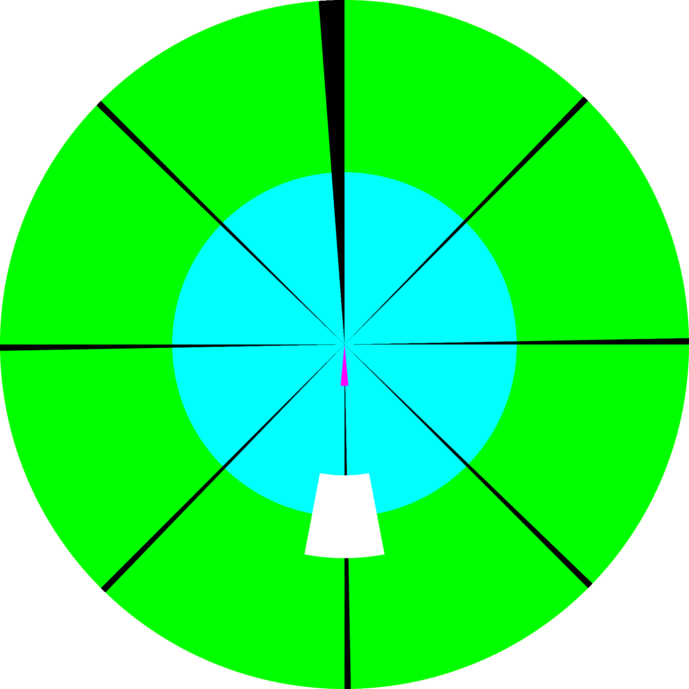
#Qué hay adentro
00_TouchDesigner/ el sistema de señal
build_domo.py constructor de /project1/DOMO (idempotente, conserva la configuración)
domo_lab.toe, DOMO.tox el resultado guardado; abrir y usar
shaders/ costura del 360, giro esférico del lienzo, patrón de prueba, pantalla plana
video_dome/ el sistema de pantallas para video plano (corona, salas, anillos, cilindro)
web/estudio_pantallas.html estudio WebGL para mover pantallas con el mouse
01_Blender/ generar_sala_domo.py y el .blend
02_Export/ sala_domo.fbx (y los de los otros modelos de sala)
03_Unreal/ DomoVR (proyecto UE 5.8), importar_sala.py, conectar_spout.py, abrir_proyecto.ps1
04_Docs/ la documentación, numerada en orden de lectura
05_Preview/ renders de Blender, capturas de Unreal y las pruebas del patrón
06_Modelos/ domos_colombia.json y su documento#Puesta en marcha
Requisitos: Windows, TouchDesigner 2025 (la licencia Non-Commercial alcanza), Unreal Engine 5.8 con Visual Studio (el proyecto compila un módulo en C++ para Spout), Blender 4 solo si se quiere regenerar la sala.
- Abre
00_TouchDesigner/domo_lab.toe. En/project1/DOMO, página Domo, dejaFuenteen Patrón de prueba para calibrar, o elige un módulo y pon el archivo en su página de la raíz: 360, 180 o 16:9. Solo suena el audio del video que está al aire. - Abre la sala con
03_Unreal/abrir_proyecto.ps1. La cúpula muestra lo que llegue por Spout con el nombreTD_Domo_Lab. Si la cúpula se queda negra, revisa la lista de comprobación de 03_Puente_Spout.md. - Para VR: OpenXR está habilitado; con SteamVR o Virtual Desktop corriendo, Play → VR Preview.
#Lo que se midió y conviene saber
- El lienzo común es equirectangular 2:1: u 0.5 es el frente, v 0.5 el horizonte, v 1 el cénit. La cúpula de Unreal lee solo la mitad superior y el frente cae en +X, el lado opuesto a la zona de control.
- En el Projection TOP, el giro en azimut no se hace con las rotaciones: es un corrimiento horizontal del lienzo. La inclinación va como
rx = 90 − Pitch. - La costura de un 360 es un meridiano de polo a polo: girar en azimut solo la cambia de lugar y siempre sube hasta el cénit. Para sacarla de la cúpula hay que girar la esfera (página 360:
Rpitch90, oRroll90 conRpitch30), medido con el patrón. - El receptor Spout de Unreal solo lee texturas de 8 bits. Con 16-bit float se queda con el último frame que pudo leer y no avisa.
- Unreal en segundo plano frena el editor; para ver la señal en vivo hay que tenerlo al frente.
- Desde TouchDesigner se mueve el cénit, se escala, se rota y se elige cuántos grados de contenido caben en la cúpula (página Mapping de
DOMO; 230 grados sobre una cúpula de 180 verificado con el patrón), sin tocar Unreal, igual que en el mapping en vivo de un domo real.
La lista completa, con fechas, está en la sección 5 de 01_Proceso_y_matematica.md.
#Contribuir
- Corregir o agregar una sala de Colombia: edita
06_Modelos/domos_colombia.json, un pull request por sala, con la fuente de cada dato o diciendo que es medida en sitio. - Un modelo de sala nuevo: ver 05_Modelos_de_sala.md.
- Un módulo de entrada nuevo en TouchDesigner: ver la sección 9 de 04_Senal_TouchDesigner.md.
#Créditos y licencias
- Sala, scripts y documentación: David Vega, 2026.
- Sistema de pantallas para video plano: proviene del proyecto Domo_Pantallas del mismo autor, probado con video de prueba (autor externo). La película no está en el repo.
- Plugin Spout para Unreal: kessoning/Spout-UE5, rama
5.8_fix; su README declara licencia MIT. - Las notas de referencia citan a Paul Bourke y el material Fulldome 101; ver la sección 4 del documento del proceso.
04_Docs/01_Proceso_y_matematica.md
El proceso y la matematica
Que es esto, la matematica del domo paso a paso y las decisiones ya medidas
Este es el documento que abre la documentación del laboratorio. Cuenta el proceso completo de punta a punta, la matemática que lo sostiene y lo que se aprendió de las referencias y de la cúpula real. Lo que ya tiene documento propio no se repite aquí, se enlaza:
- 02_Sala_Unreal.md — la sala en Unreal Engine 5.8 y el contrato de geometría.
- 03_Puente_Spout.md — cómo llega la señal de TouchDesigner a la cúpula virtual.
- 04_Senal_TouchDesigner.md — el sistema de señal
DOMO, sus módulos y su calibración. - ../06_Modelos/Domos_de_Colombia.md — las salas de domo del país y cómo corregir sus datos.
#1. Qué es esto y para quién
Es un laboratorio abierto de domo. Tiene tres piezas que se pueden usar juntas o por separado:
- La señal. Un sistema en TouchDesigner que toma video 360, domemasters, VR180 o video plano y entrega un domemaster fisheye con el FOV de la sala, más una versión equirectangular para la sala virtual. Sale por Spout, NDI o a disco.
- La sala VR. Un modelo de planetario a escala del Planetario de Bogotá, generado por script en Blender y visualizado en Unreal con la cúpula como única fuente de luz. Sirve para ver en realidad virtual, desde una butaca, lo que se está produciendo, antes de pisar la cúpula real.
- Los modelos de salas de Colombia. Una tabla y un JSON con las cúpulas del país (diámetro, inclinación, FOV, aforo, proyección), para que el mismo proceso se pueda repetir con otra sala cambiando constantes y no código.
Está pensado para quien produce contenido fulldome (artistas, estudiantes, mediadores de planetario) y no tiene acceso diario a una cúpula, y para quien quiera montar el mismo flujo con otra sala u otro motor.
#2. El proceso en una página
sala real ──medidas──► Blender ──FBX──► Unreal (sala VR, cúpula emisiva)
▲
│ Spout, lienzo equirectangular
TouchDesigner: IN_360 / IN_180 / IN_169 ──► equi ──► domo (fisheye) ──► out_domo
│
├─► Spout / NDI ─► servidor de la cúpula real
└─► grabar (HAP)
patrón de prueba ──► se mira en la cúpula real y en la VR ──► Yaw, Pitch, FOV- Sala real → modelo. Las cotas de la sala entran como constantes de
01_Blender/generar_sala_domo.py: radio de 11,5 m (23 m de diámetro), ecuador de la cúpula a 3 m, tarima central, sector de control de 7 m de arco contra el muro, 360 butacas en 6 cuñas, 4 puertas. El script corre en headless, borra la escena y la reconstruye entera, hornea las texturas PBR y exporta FBX y glTF. Los renders de control están en05_Preview/.
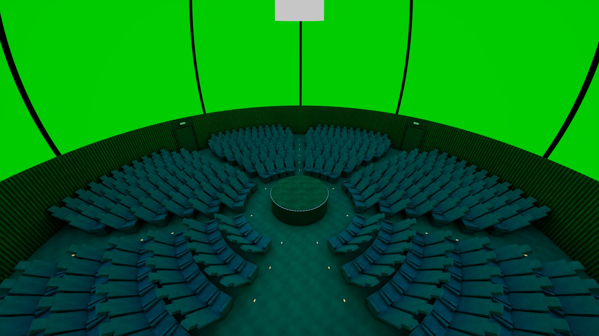
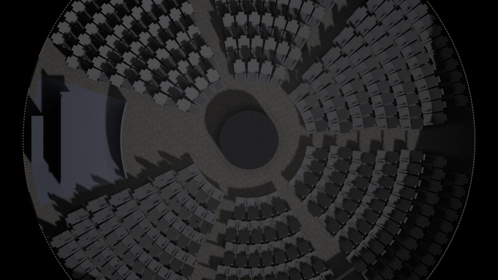
- Modelo → Unreal.
importar_sala.pyimporta el FBX, crea los materiales y arma el nivel. La cúpula (SM_Domo) lleva las normales hacia adentro y un UV con U = azimut y V = elevación: la textura que reciba se lee como lienzo equirectangular sin ninguna corrección del lado de Unreal. El material de la cúpula es Unlit y emisivo; con Lumen, esa emisión ilumina butacas y muro. Detalle en 02_Sala_Unreal.md.
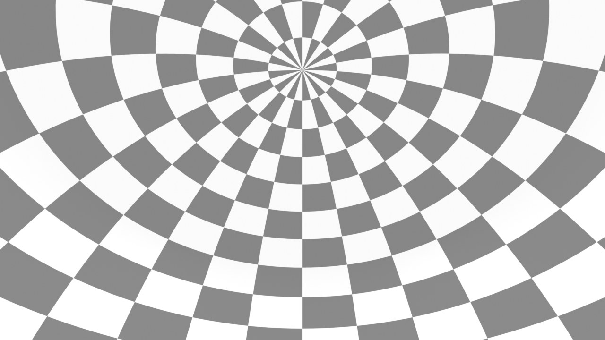
- TouchDesigner manda por Spout. El sistema
DOMOproduce el lienzo equirectangular común y lo publica con el senderTD_Domo_Lab. En Unreal,ASpoutDomeReceiverlo recibe cada tick y lo pone en el parámetroSpoutTexturedeMI_Domo. Detalle en 03_Puente_Spout.md.
- Verificación con patrón.
shaders/patron.fragpinta el lienzo con franjas de color, meridianos, un cuadro blanco al frente y una marca en el cénit. Se mira en el domemaster y en la sala VR y se corrigenYaw,Pitchy el modelo de sala hasta que el frente, el cénit y la costura caen donde deben. Con ese patrón se midieron todas las orientaciones de la sección 3.9.
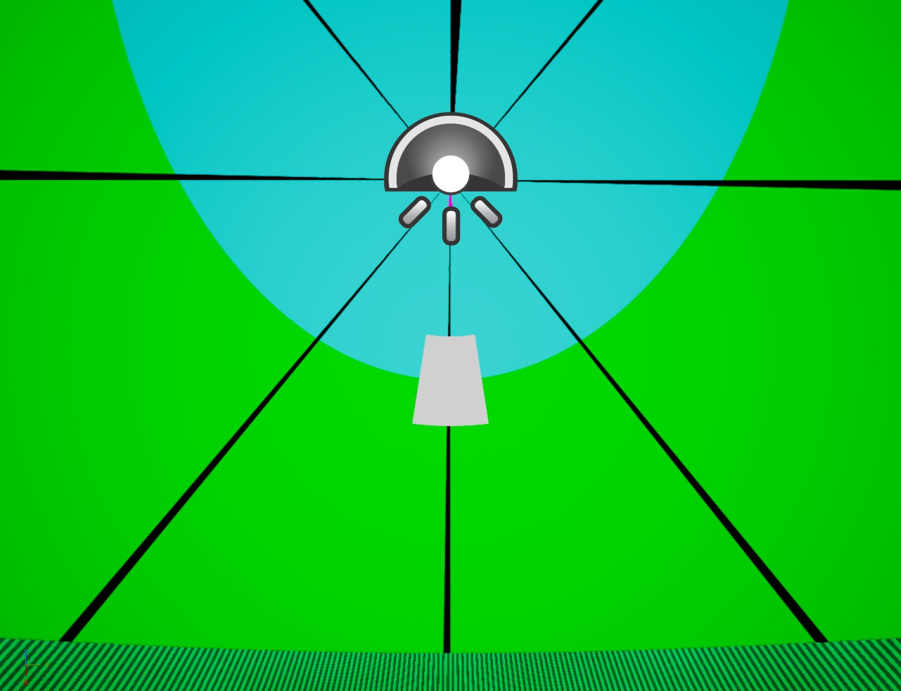
#3. La matemática
Todo lo que sigue está implementado en 00_TouchDesigner/build_domo.py, 00_TouchDesigner/shaders/*.frag y 00_TouchDesigner/video_dome/dome_map.frag. Los ángulos van en radianes dentro de los shaders y en grados en los parámetros; las fórmulas se escriben tal como las calcula el código.
#3.1 Coordenadas del domo
Una dirección en la cúpula se describe con dos ángulos: el azimut a, medido alrededor del cénit con a = 0 en el frente de la sala, y la elevación e, con e = 0 en el horizonte (la springline, donde arranca la cúpula) y e = 90° en el cénit. La base es (derecha, frente, cénit), y la dirección unitaria es:
\vec P(a, e) = (\sin a \cos e,\; \cos a \cos e,\; \sin e)Al revés, de una dirección a los ángulos: a = \operatorname{atan2}(P_x, P_y) y e = \arcsin P_z. Esta es la función dirFrom del shader y es la única convención de dirección que usa todo el sistema.
El ángulo cenital \theta (medido desde el cénit hacia abajo) es el complemento: \theta = 90° - e. Un domo de 180° cubre 0 \le \theta \le 90°.
#3.2 Equirectangular ↔ dirección
El lienzo equirectangular es un rectángulo 2:1 donde las dos coordenadas son los dos ángulos, lineales. Con la convención del sistema (u = 0.5 frente, v = 0.5 horizonte, v = 1 cénit):
u = \tfrac12 + \frac{a}{360°}, \qquad v = \tfrac12 + \frac{e}{180°}y por tanto a = (u - \tfrac12)\cdot 360°, e = (v - \tfrac12)\cdot 180°. La mitad superior del lienzo (v > 0.5) es la cúpula; la inferior queda bajo el horizonte y en un domo de 180° no se ve. El lienzo se cierra sobre sí mismo en u = 0 y u = 1, que es el azimut 180°, detrás del público.
Dos consecuencias prácticas salen de esa linealidad:
- Un corrimiento horizontal del lienzo es un giro puro en azimut. Por eso el
Yawse aplica comoTransform TOPcontx = Yaw / 360y extensiónrepeat, no como rotación delProjection TOP. - Un rectángulo dibujado en el lienzo no es un rectángulo en la cúpula: su ancho en grados de azimut se comprime por
\cos eal subir. Esta es la razón por la que las pantallas de video plano no se dibujan sobre el lienzo, sino por dirección (sección 3.5).
#3.3 El domemaster: fisheye azimutal equidistante
El domemaster es una imagen cuadrada con un círculo adentro. El estándar fulldome es la proyección azimutal equidistante (angular fisheye): el radio en la imagen es lineal con el ángulo cenital. Con coordenadas normalizadas nc \in [-1, 1]^2 del cuadro:
r = |nc|, \qquad \theta = r \cdot \frac{FOV}{2}, \qquad \varphi = \operatorname{atan2}(nc_x, -nc_y)y la dirección en la cúpula:
\vec P = (\sin\theta \sin\varphi,\; \sin\theta \cos\varphi,\; \cos\theta)Con FOV = 180° la mitad del radio son exactamente 45°, el centro del círculo es el cénit, el borde es el horizonte y fuera del círculo (r > 1) va negro puro. El signo de -nc_y pone el frente del domo abajo del cuadro, que es la convención de entrega. Al revés, de una dirección al domemaster:
r = \frac{\theta}{FOV/2}, \qquad nc = r\,(\sin\varphi,\; -\cos\varphi)Esta inversa es la que usa el editor con el mouse: como el radio es el ángulo, pasar de un clic en el panel a azimut y elevación no necesita ninguna proyección rara.
El "modelo de sala" del sistema es sencillamente este FOV: 180° para media esfera, 90° y 45° para casquetes, o un valor propio. Un domemaster de 210° (como el de la SATosphere de Montreal) es la misma fórmula con otro divisor. Los fisheye fotográficos (equisolid, estereográfico, ortográfico) tienen otra relación entre r y \theta y hay que remapearlos; la clasificación completa está en Paul Bourke, paulbourke.net/dome/fisheyetypes/.
#3.4 Por qué el mapeo se hace por píxel y no por geometría
El antecedente de este sistema (documentado en el repositorio Domo_TouchDesigner, 04_Docs/Material_360_y_16-9.md) lo resolvía con geometría: una esfera con el video pegado por dentro, una cámara en el centro, un Render TOP y un Projection TOP hacia el simulador. Se dejó por tres cosas medidas el 17 de septiembre de 2026:
- Los modos
fisheye180ydualparaboloiddelRender TOPdeforman en el vértice, no en el píxel. Con poca teselación las rectas se ven rectas cuando deberían curvarse, y el dual paraboloid deja grietas negras radiales en la costura entre los dos paraboloides. - La ruta correcta con geometría,
cubemap→Projection TOP(cubemap → fisheye, FOV 180), sí resuelve por píxel, pero cuesta seis caras de render por cuadro para mostrar un video que ya venía equirectangular. - Una pantalla curva para el 16:9 exigía un
Script SOPcon malla teselada y una segunda esfera de fondo, todo dentro de la misma escena.
El sistema actual no tiene geometría ni cámara. Un 360 ya está en el formato del lienzo; un domemaster se convierte con un Projection TOP; y el video plano se resuelve al revés que un render: el shader recorre cada píxel del domemaster, calcula su dirección \vec P con la fórmula de 3.3 y pregunta qué pantalla la cubre. No hay teselado que pueda romperse porque no hay vértices.
#3.5 Las pantallas de video plano
Cada pantalla se define por dónde apunta (yaw, pitch, roll), cuánto abarca (hfov, vfov) y su forma (mode). Su centro y sus ejes son:
\vec C = \vec P(\text{yaw}, \text{pitch}), \quad
\vec R = (\cos\text{yaw},\; -\sin\text{yaw},\; 0), \quad
\vec U = (-\sin\text{yaw}\sin\text{pitch},\; -\cos\text{yaw}\sin\text{pitch},\; \cos\text{pitch})y con roll los ejes giran: \vec R' = \vec R\cos\rho + \vec U\sin\rho, \vec U' = \vec U\cos\rho - \vec R\sin\rho. Para cada píxel del domemaster se proyecta su dirección sobre esa base: x = \vec P\cdot\vec R, y = \vec P\cdot\vec U, z = \vec P\cdot\vec C, y se descarta si z \le 0.001 (la dirección mira al lado contrario de la pantalla).
Plana (gnomónica). Es una pantalla de cine de verdad: las rectas del video siguen rectas en el espacio.
u = \tfrac12 + \frac{x/z}{2\tan(hfov/2)}, \qquad v = \tfrac12 + \frac{y/z}{2\tan(vfov/2)}Hasta unos 100° de ancho es la que no se ve deformada; más allá estira las esquinas.
Curva (ángulos iguales). Cada píxel ocupa los mismos grados de cúpula:
u = \tfrac12 + \frac{\operatorname{atan2}(x, z)}{hfov}, \qquad v = \tfrac12 + \frac{\arcsin y}{vfov}Banda. Un rectángulo directo en azimut y elevación, sin marco propio, con \Delta a = a - \text{yaw} envuelto a [-\pi, \pi]:
u = \tfrac12 + \frac{\Delta a}{hfov}, \qquad v = \tfrac12 + \frac{e - \text{pitch}}{vfov}Es la única que puede dar la vuelta entera (hfov = 360) sin deformarse en los costados.
Túnel. Coordenadas polares alrededor del centro de la pantalla:
q = \left(\frac{\operatorname{atan2}(x, z)}{hfov/2},\; \frac{\arcsin y}{vfov/2}\right), \quad
u = \frac{\operatorname{atan2}(q_y, q_x)}{2\pi} + \tfrac12, \quad
v = \operatorname{fract}\big((1 - |q|)\cdot \text{tile} - \text{travel}\big)con |q| \le 1. El video se enrosca hacia el centro y con tile arma anillos que se alejan. Con material figurativo se lee como un remolino: es para material abstracto.
En todas, la pantalla acepta el píxel solo si 0 \le u, v \le 1; después se aplica el espejo, el recorte (cropx, cropy, cropw, croph) y la opacidad.
#3.6 El cilindro
El video en una pared cilíndrica alrededor del público, no pegado a la cúpula. Un rayo que sale del centro con elevación e golpea una pared de radio 1 a altura \tan e, así que:
h = \tan e, \qquad h_0 = \tan(\text{pitch}), \qquad h_1 = \tan(\text{pitch} + vfov)u = \tfrac12 + \frac{\Delta a}{hfov}, \qquad v = \frac{h - h_0}{h_1 - h_0} - \text{travel}Solo existe sobre el horizonte (e > 0) y dentro de |\Delta a| \le hfov/2. La tangente comprime la imagen sola hacia el cénit: esa es la fuga, lo que hace sentir que la ciudad sigue para arriba. Cerca del cénit \tan e se va al infinito, por eso el shader corta en e = 89{,}1° (EL_MAX = 1.5551); más arriba aparecían artefactos de precisión justo en el centro del domemaster. Regla práctica: si la textura tiene horizonte o rectas, cilindro; el túnel es para lo abstracto.
#3.7 El anillo y la costura normalizada
Una sola pantalla al frente sirve a quien mira hacia ahí. En un planetario el público está repartido y no hay un frente, así que una fila de la tabla puede repetirse en anillo: rep copias sobre un arco repspan. El giro que recibe la copia k de n es:
\delta_k =
\begin{cases}
k \cdot \dfrac{span}{n} & \text{si } span \ge 359° \text{ (vuelta completa)}\\[2ex]
\left(k - \dfrac{n-1}{2}\right)\cdot \dfrac{span}{n-1} & \text{si es un abanico parcial}
\end{cases}Con la vuelta entera la copia 0 se queda donde el usuario puso la pantalla; con un arco parcial las copias se centran sobre esa dirección.
Pegadas una al lado de la otra las copias se leen como un collage; la costura (blend, en grados) las une. Cada copia se ensancha esos grados y el borde suave ocupa exactamente el solape:
hfov_c = hfov + blend, \qquad feather = \frac{blend}{hfov_c}El peso de un píxel dentro del marco es un producto de smoothstep en los bordes que se degradan (edges: los cuatro, solo los costados, o solo arriba y abajo). Lo decisivo es cómo se mezclan las copias de una misma fila: se suman los aportes y se dividen por el peso total,
\text{col} = \frac{\sum_k w_k\, T(uv_k)}{\sum_k w_k}, \qquad
\alpha = \min\Big(\sum_k w_k,\, 1\Big)\cdot \text{opacity}Con la mezcla secuencial que había antes, dos bordes suaves encimados sumaban 0,75 de cobertura y dejaban una banda oscura en cada costura. Las filas distintas sí se apilan una sobre otra en el orden de la tabla (la última queda arriba), que es lo que uno espera al poner un túnel debajo de una pantalla.
La cuenta de si el anillo cierra: el paso entre copias es repspan / rep y cada copia cubre hfov + blend. Si cubre menos que el paso queda hueco; si cubre bastante más, la imagen se repite encima de sí misma.
#3.8 La costura de un video 360
Un 360 mal cosido deja una línea vertical donde el borde izquierdo se encuentra con el derecho, o en cualquier azimut si la costura del stitching quedó dentro del cuadro. shaders/costura.frag funde una franja alrededor de esa columna. Con s la posición de la costura en u y w el ancho de la franja:
d = u - s - \lfloor u - s + \tfrac12 \rfloor \in [-\tfrac12, \tfrac12), \qquad
m = 1 - \operatorname{smoothstep}(0, w, |d|)d es la distancia a la costura con vuelta, así funciona igual en u = 0. Dentro de la franja (m > 0) se desenfoca en horizontal con un núcleo triangular de 33 muestras:
\text{blur}(p) = \frac{\sum_{i=-16}^{16} (1 - |t_i|)\; T\big(p + (t_i\, \rho\, m,\; 0)\big)}{\sum_i (1 - |t_i|)}, \qquad t_i = \frac{i}{16}con \rho el radio del desenfoque, y el resultado se mezcla con el original por m. Si además el lado derecho de la costura quedó desplazado o más oscuro que el izquierdo, hay dos correcciones que actúan solo sobre ese lado, con un peso lado = \operatorname{step}(0, d)\,(1 - \operatorname{smoothstep}(0, 3w, |d|)): un corrimiento vertical v' = v + \Delta y \cdot lado antes de muestrear, y una ganancia rgb \cdot \operatorname{mix}(1, g, lado). Una guía pinta la costura en rojo (|d| < 0.0006) para encontrarla; luego se apaga.
#3.9 Las mediciones de orientación con el patrón
El Projection TOP de TouchDesigner tiene un orden de rotaciones que no conviene deducir de memoria. Con el patrón (shaders/patron.frag: verde y cian en la cúpula, rojo y amarillo bajo el horizonte, meridianos negros cada 45°, columna gruesa en u = 0, cuadro blanco en u = 0.5, v = 0.75, marca magenta en v = 0.97) se midió el 17 de septiembre de 2026:
| Operación | Ajuste medido | Qué hace |
|---|---|---|
| equirectangular → fisheye, sin rotar | — | deja el centro del fisheye en el horizonte del frente |
rx = 90 | sube el cénit al centro del círculo | la marca magenta queda en el centro |
ry = 90 | gira el domemaster | el frente (cuadro blanco) queda abajo, la costura arriba |
rx = 90 - Pitch | inclina el contenido | Pitch positivo lleva el frente hacia el cénit |
fisheye → equirectangular, rx = -90 | reconstruye el lienzo | el cénit vuelve a v = 1 |
Transform TOP tx = -0.25 | deshace el ry = 90 | el cuadro blanco vuelve a (0.5, 0.75); sin esto el frente queda a 90° |

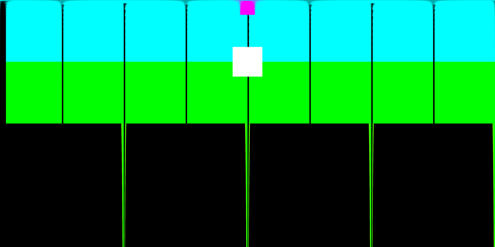
En la sala VR se verificó con las mismas capturas que la cúpula lee solo la mitad superior del lienzo (verde abajo, cian arriba, nada de rojo ni amarillo), que el frente u = 0.5 cae en +X del nivel y que la costura va a parar detrás del público.
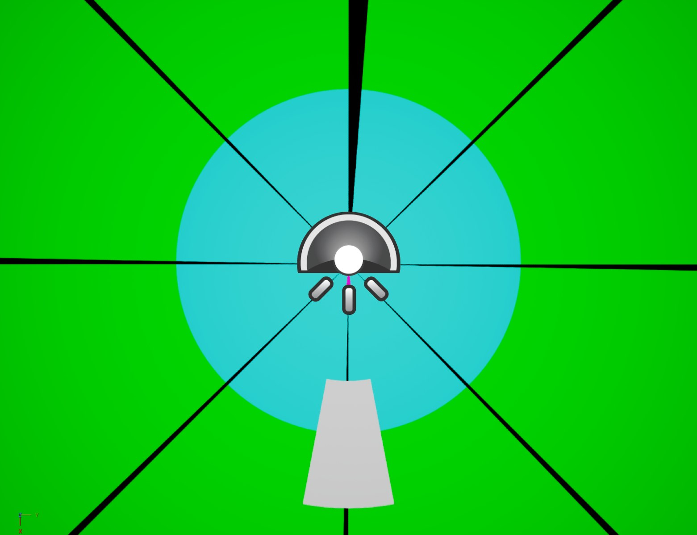
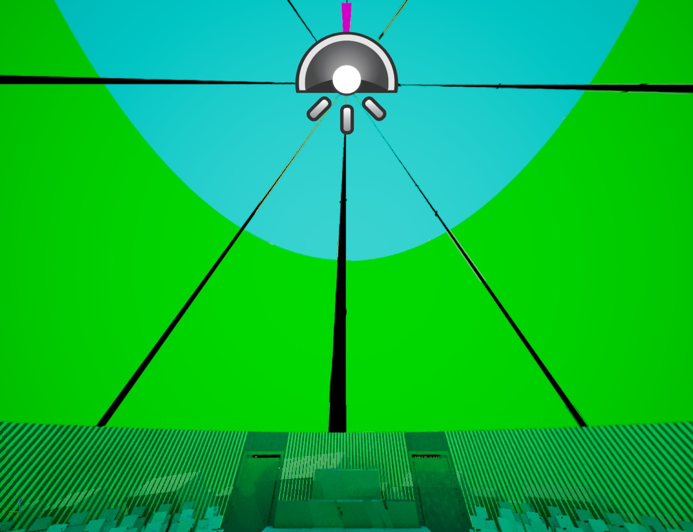
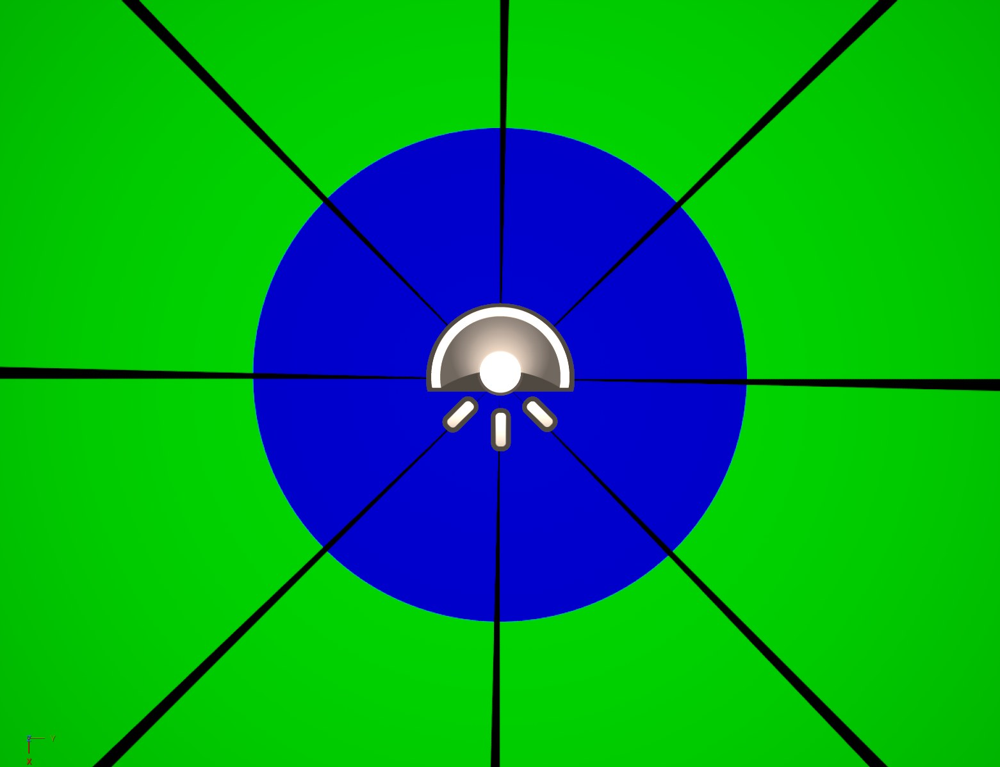
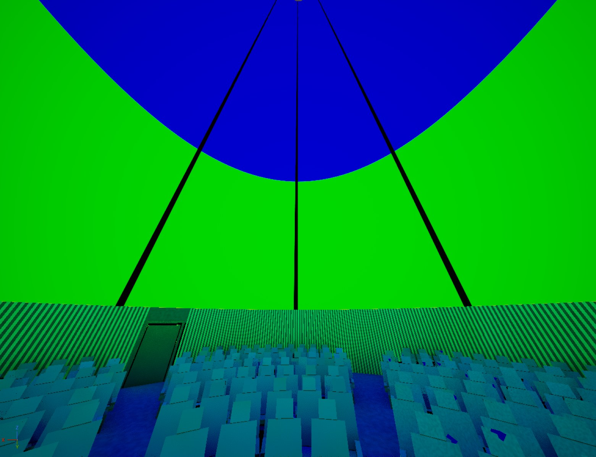
El procedimiento paso a paso para calibrar una sala nueva está en 04_Senal_TouchDesigner.md, sección 7.
#4. Notas de las referencias
Lo que sigue es paráfrasis con atribución de las notas del vault de conocimiento, que a su vez resumen Fulldome 101 (Meisam Nemati, Interactive & Immersive HQ, mayo de 2021) y el archivo de Paul Bourke (paulbourke.net/dome/), más la experiencia directa en el Planetario de Bogotá.
#4.1 Anatomía del domo
- Azimut siempre 360°; FOV vertical 180° es lo normal. Hay excepciones: la SATosphere de Montreal tiene 210° y la pantalla baja por debajo del horizonte. Renderizar a 180° en una sala de 210° deja pantalla sobrante; al revés se pierde el borde. Preguntar el FOV antes de renderizar.
- Inclinación. Muchos planetarios tienen la cúpula inclinada, típicamente 45°, para que el público sentado mire cómodo. En un domo inclinado el sweet spot se desplaza. Bourke documenta cómo inclinar y rotar un fisheye para compensarlo (
/dome/fishtilt/). - Orientación. El domo tiene frente y espalda; la entrada suele estar en el lado Back, así que el público entra por atrás y mira al Front. Esa convención es la que pone el frente abajo en el domemaster.
- Postura del público. Acostado es lo normal en fulldome y permite usar el cénit; de pie cabe más gente pero el cénit se pierde como zona útil. No lo decide el artista, lo decide la sala. La sala de este repositorio tiene las butacas reclinadas 40° hacia atrás, con el espectador casi acostado.
- El iDome es la versión pequeña, vertical e individual: el espectador mira al centro de la pantalla, no hacia arriba (
/dome/iDome/). - Sistemas de proyección. Un solo proyector (lente fisheye, espejo esférico o doble fisheye) es simple pero corto de resolución; varios proyectores con solape y blending dan más resolución a cambio de calibración constante. El espejo esférico (mirrordome) lo desarrolló Bourke en 2003 y sigue siendo la vía barata para un domo propio (
/dome/faq/).
#4.2 Zonas del domo
La cúpula tiene 360° pero la atención no. Sweet spot: abajo, hacia el frente, donde el público está orientado; en el domemaster cae en el tercio inferior del círculo y ahí va la idea principal. Cénit: segunda prioridad, funciona si el público está acostado. Atrás: mínima prioridad, no se deja vacío porque sostiene la envolvente, pero ahí no va información que haya que leer. El error típico es importar un HDRI con el interés en el medio: en la cúpula queda sobre la cabeza. Los dos arreglos son desplazar el contenido hacia abajo o rotar la cámara unos 45°. Para una obra interactiva la consecuencia es directa: toda respuesta perceptible cae en el sweet spot o cerca del cénit, porque lo que aparece atrás el público no lo atribuye a lo que hizo.
#4.3 Dome master
- Formato de entrega estándar: imagen circular dentro de un cuadro, azimutal equidistante. Centro = cénit; borde = springline; tercio inferior = frente; esquinas no se proyectan y ahí van los créditos (título y copyright abajo-izquierda, timecode arriba-izquierda).
- Si el material viene de cámara, la lente tiene que ser fisheye circular (180° en horizontal, vertical y diagonal), no diagonal. Bourke publicó las pruebas del círculo de imagen de la Lumix GH5 con la Sigma 4.5 (
/dome/gh5_sigma/). - Tamaños: secuencia de imágenes cuadradas sin pérdida (PNG o TGA con RLE). Pre-renderizado: 2048², 3200², 3600², 4096² o mayor. Tiempo real e interactivo: 2048² salvo que la máquina sea muy holgada. La interactividad se paga en resolución.
- Antes de entregar: exportar el nodo anterior al simulador de cúpula, no su salida; timeline con el número exacto de cuadros a 30 o 60 fps; negro puro fuera del círculo. Bourke publicó un patrón de prueba fulldome para medir la resolución real de una sala (
/dome/testpattern/). - Dentro de TouchDesigner,
Render TOPen Fish-Eye,Projection TOPcon salida fisheye ySphere SOPcon textura equiazimuth usan el mismo mapeo. ElProjection TOPtiene cuatro parámetros y nada más: entrada, salida, FOV y rotación; el FOV es lo que permite salir a 210° cuando la sala lo pide.
#4.4 Lo aprendido en cúpula con público real
Experiencia directa en el Planetario de Bogotá, recogida el 12 de septiembre de 2026. No está en ninguna fuente publicada.
- Sí entra señal en vivo, por NDI, desde TouchDesigner o Resolume según el contenido. Eso convierte la interactividad en producción, no en investigación.
- La restricción es el ancho de banda. La red es de 1 Gb y con cuatro o cinco fuentes NDI simultáneas se satura. Queda pendiente evaluar el salto a 2,5 GbE y volver a medir.
- Seguridad de la red. Un canal de entrada abierto al público es también una superficie de ataque, aunque nadie tenga mala intención: la gente mandó mensajes que no se controlaban y se conectaron desde fuera de la sala hasta saturar el servidor. Red aislada, límite de clientes y moderación de lo que entra, desde el diseño.
- Videos de respaldo. Dejar videos corriendo en segundo plano: si la parte interactiva se cae o el servidor se satura, la sala nunca queda en negro.
- Reglas de un verbo. No hay obra que se enseñe sola, pero las reglas funcionan si son muy simples: mueve, toca, grita, gira. Una instrucción, un verbo, un resultado.
- Otras cosas probadas: biométrica con electrónica propia (EEG, EMG, ECG), que obliga a cumplir el régimen de datos personales antes de capturar nada; Unity con cámara equirectangular pasada a cubemap; Leap Motion, que depende de la luz de la sala; OSC desde tableta para el operador. Lo que falla en montaje: saturación del servidor (a veces toca reiniciar en mitad del montaje), calibración constante en multiproyector, luces que afectan toda visión por cámara, y latencia que se nota más en cúpula que en pantalla.
#4.5 La sala de destino
La ficha del Planetario de Bogotá que hay en el vault viene de prensa, no de una ficha técnica: 23 m de diámetro, 375 personas, pantalla Nanoseam de 420 paneles, proyección digital 4K con dos proyectores. Lo que decide el render sigue sin confirmar en sala: FOV vertical, inclinación, resolución real del domemaster que acepta el servidor y formato exigido. Los datos estructurados y sus pendientes están en ../06_Modelos/Domos_de_Colombia.md.
#5. Decisiones y trampas medidas
- 17 sep 2026 · Mapeo por píxel, no por geometría. Se abandonó la esfera con cubemap y los modos
fisheye180/dualparaboloiddelRender TOP(deforman en el vértice, grietas radiales). Ver 3.4. - 17 sep 2026 ·
Yawcomo corrimiento del lienzo.ryorzsobre un fisheye producen cosas distintas segúnrx; elTransform TOPcontx = Yaw/360es un giro puro. Ver 3.9. - 17 sep 2026 ·
rx = 90,ry = 90,tx = -0.25. Los tres números de la orientación se midieron con el patrón, no se dedujeron. Ver 3.9. - 17 sep 2026 · Domemaster a 2048 por defecto. Con todas las capas de
VIDEO_DOMEencendidas a 4096² × 16 bit se llena la memoria de video y TouchDesigner se cae. SubirRessolo para grabar. - 17 sep 2026 ·
convert_scene_unit = Trueen el importador FBX de Unreal. Sin esa bandera la sala entraba como una maqueta de 23 cm y se veía negra por el plano de recorte. Se corrigió del lado de Unreal, no en Blender, porque el mismo FBX produce el glTF. - 17 sep 2026 · Nanite apagado. La sala son unos 43 000 triángulos; Nanite no aporta y su indicador de uso en los materiales dio avisos.
USAR_NANITEes la única constante que hay que voltear si entra fotogrametría. - 17 sep 2026 · Spout en vez de NDI hacia Unreal. Obliga a un módulo C++ mínimo, pero el receptor en C++ evita crear una Dynamic Material Instance por cuadro (el pin
OutMatdeSpoutReceiverva por referencia). Ver 03_Puente_Spout.md. - 17 sep 2026 · El receptor Spout de Unreal solo lee texturas de 8 bits. Con 16-bit float (lo que sale de
VIDEO_DOMEy de toda la cadena que lo hereda)SpoutReceiverdevuelve falso y la cúpula se queda con el último cuadro que pudo leer, sin avisar en pantalla: parece congelada. Se destapó mandando unConstant TOProjo de 8 bits, que sí llegaba.alfa_unreal(unReorder TOPcon formatorgba8fixed) fija el formato antes del sender. - 17 sep 2026 · Annotate COMP que se autodestruye en TD 2025.32460 si se crea con nombre o con el flag
utility. Se crea sin nombre y se renombra al final. - 17 sep 2026 · Dos TouchDesigner abiertos no pueden compartir nombre de sender, ni Spout ni NDI. El de la sala VR se llama
TD_Domo_Lab. - 18 sep 2026 · Por qué Unreal leía la mitad superior del equirectangular aunque el generador escribía
V = elevación / 90. La cúpula se creaba conprimitive_uv_sphere_add, que ya traía una capaUVMap(canal 0) conU = azimut/360 + 0,5yV = 0,5 + elevación/180; el script escribía su fórmula en una segunda capa (UVMap.001, canal 1), y Unreal muestrea el canal 0. Ahora la cúpula se construye a mano con una sola capa y esa misma fórmula (V = 0,5 + elevación/180) en los tres modelos de sala (180, 90 y 45), sin normalizar al casquete. Ver 05_Modelos_de_sala.md, sección 3. - Sector de control: 7 m de arco. La constante
ANCHO_CONTROLvale 7,0 m (unos 35° con radio 11,5 m), pero la cabecera del script de Blender y el documento antiguoUnreal_sala_domo.mdtodavía hablan de 5 m y 25°. Manda la constante; las butacas se reparten el arco que sobra por programa. - Costura normalizada en el anillo (medido en
Domo_Pantallas, sin fecha en la fuente). La mezcla secuencial dejaba 0,75 de cobertura y una banda oscura en cada costura. Ver 3.7. DAT to CHOPde la tabla de pantallas. NecesitaOutput = chanpercolyFirst Column = values; unTrueen la celdaonse lee como 0 y la pantalla desaparece sin avisar. El orden de columnas es el ordenx, y, z, wde cada array del shader.- Cilindro cortado en 89,1° (
EL_MAX). Ver 3.6. Bgzoommínimo 1,78 (el aspecto del archivo) en el fondo lavado, o aparecen bandas rectas de borde estirado.
#6. Qué falta y cómo contribuir
#Pendientes conocidos
- Confirmar en sala el FOV vertical, la inclinación y la resolución real del domemaster del Planetario de Bogotá; sin eso el modelo
domo180es un supuesto razonable, no un dato. - El sentido del azimut en el lienzo (si
u > 0.5queda a la derecha o a la izquierda del espectador) no se midió con el patrón, que es simétrico. Hace falta una marca asimétrica para cerrarlo. - La altura y posición del
PlayerStarten Unreal (70 cm, a 4 m del centro) son aproximaciones de trabajo, no cotas medidas sobre las butacas. - Subir la red a 2,5 GbE y volver a medir con cuatro o cinco fuentes NDI.
- Tipografía en cúpula: tamaño mínimo legible y en qué zona.
- Videos distintos por pantalla: hoy todas las pantallas leen el mismo archivo en el mismo instante; fragmentos distintos sí, tiempos distintos no.
- La mayoría de las salas de Colombia tienen
nullen inclinación y FOV.
#Cómo contribuir
- Datos de una sala. Edita
06_Modelos/domos_colombia.json(es la fuente de verdad, la tabla del Markdown se ajusta a él), un PR por sala, todo número con URL de fuente o nota explícita de medida en sitio, y valida conpython -m json.tool 06_Modelos/domos_colombia.json. Las reglas completas están al final de ../06_Modelos/Domos_de_Colombia.md. - Un modelo de sala nuevo. Copia
01_Blender/generar_sala_domo.py, cambia las constantes de la cabecera (radio, altura del ecuador, aforo, sector de control, puertas) y deja el resto por programa; el FBX resultante entra porimportar_sala.pysin tocarlo mientras se respeten los nombresSM_*del contrato de 02_Sala_Unreal.md. Si la cúpula es inclinada o de más de 180°, el UV deSM_Domo(U = azimut, V = elevación) y el FOV del modelo enDOMOtienen que cambiar juntos. - Un módulo de TouchDesigner. Cada módulo de entrada es un COMP con su parámetro
Activoque entrega el mismo lienzo equirectangular 2:1 y se conecta amezcla. El procedimiento está en 04_Senal_TouchDesigner.md, sección 9. Si el módulo trae un shader, ponlo en00_TouchDesigner/shaders/con un comentario de cabecera que explique sus uniforms, como los que ya están. - Mediciones. Cualquier número nuevo de orientación, resolución o red vale más con el patrón o la captura que lo respalda: déjala en
05_Preview/pruebas/y cítala en el documento que corresponda, con fecha.
04_Docs/04_Senal_TouchDesigner.md
La senal en TouchDesigner
Como se arma la red que manda video 360, domemaster o pantallas planas a la cupula
Este documento describe /project1/DOMO, el sistema de señal que construye 00_TouchDesigner/build_domo.py: recibe video 360, video 180 (domemaster o VR180) o video plano, lo lleva a un lienzo equirectangular común, lo convierte al domemaster del modelo de sala y lo entrega por Spout, NDI o grabación. La sala de realidad virtual que lo recibe está en 02_Sala_Unreal.md y el puente entre los dos programas en 03_Puente_Spout.md. Todo lo que se afirma aquí sobre orientaciones y ángulos se midió el 17 de septiembre de 2026 en TouchDesigner 2025.32460 con el patrón de prueba de la sección 3.
#1. Qué es y cómo se abre
El sistema no se arma a mano: lo escribe un script de Python que corre dentro de TouchDesigner. El repositorio trae el constructor, los shaders y el módulo de pantallas; el archivo .toe es el resultado de correrlo y de guardar.
00_TouchDesigner/build_domo.py el constructor de DOMO
00_TouchDesigner/shaders/costura.frag fundido de la costura de un 360
00_TouchDesigner/shaders/orientar.frag giro esférico del lienzo (Yaw, Pitch, Roll) antes del domemaster
00_TouchDesigner/shaders/patron.frag el patrón de prueba del lienzo
00_TouchDesigner/shaders/pantalla169.frag una pantalla plana sobre el lienzo (disponible, ya no está en la red)
00_TouchDesigner/video_dome/ el sistema de pantallas (VIDEO_DOME), ver sección 5.3
05_Preview/pruebas/ capturas del patrón en TouchDesigner y en UnrealPara construirlo, en el Textport, en un Execute DAT o por MCP:
BUILD_DIR = r'C:/ruta/al/repo/00_TouchDesigner'
exec(open(BUILD_DIR + '/build_domo.py', encoding='utf-8').read())BUILD_DIR es la carpeta donde viven el script y sus shaders; si no se define, el constructor usa project.folder + '/00_TouchDesigner'. Al terminar imprime [DOMO] construido: /project1/DOMO, N operadores.
El constructor es idempotente. Si /project1/DOMO ya existe, guarda el valor de todos los parámetros personalizados (rutas de video, ángulos, nombres de sender), destruye el COMP, lo vuelve a crear y reescribe esos valores al final. El montaje de VIDEO_DOME (sus parámetros y las tablas screens y moments) se conserva por la misma vía. Por eso se puede editar build_domo.py y volver a correrlo sin perder la configuración de la sesión.
La otra forma de abrirlo es la obvia: un .toe guardado después de correr el constructor ya trae /project1/DOMO armado y no necesita el script para funcionar. El script solo hace falta para reconstruirlo o cambiarlo.
#2. Estructura
DOMO COMP raíz, atajo parent.DOMO, páginas Domo, 360, 180, 16:9, Mapping y Salidas
IN_360 video 360 equirectangular (+ costura opcional, + giro esférico)
IN_180 domemaster fisheye, VR180 mono o VR180 lado a lado (+ giro esférico)
IN_169 video plano sobre pantallas en la cúpula (VIDEO_DOME adentro, + Pitch y Roll)
AUDIO sigue a la fuente al aire (solo suena ese video), o un archivo, o la entrada
patron el patrón de prueba, cuarta entrada de la mezcla
mezcla -> equi la fuente elegida, como lienzo equirectangular 2:1
giro Yaw, como corrimiento horizontal del lienzo
domo -> mapping -> out_domo el domemaster fisheye; mapping mueve el cénit, escala y rota
spout_domo / ndi_domo salidas del domemaster
grabar Movie File Out del domemaster (HAP)
para_unreal -> giro_unreal -> alfa_unreal -> spout_unreal el equirectangular que espera la sala VRCada módulo de entrada es un Base COMP con su parámetro Activo, su out1 y una caja de comentario (Annotate COMP) que explica qué hace. Solo el módulo elegido en DOMO.Fuente llega a la salida: mezcla es un Switch TOP y un Switch solo cocina la entrada que usa, así que los demás módulos no gastan GPU aunque estén activos.
#3. El lienzo equirectangular común
Todos los módulos entregan lo mismo: un lienzo equirectangular 2:1 de Ancho × Ancho/2 píxeles (4096 × 2048 por defecto) con esta convención:
u = 0.5es el frente de la sala;u = 0yu = 1son la parte de atrás, donde el lienzo se cierra sobre sí mismo.v = 0.5es el horizonte yv = 1el cénit.- La mitad superior del lienzo ES la cúpula. La mitad inferior queda bajo el horizonte y no se ve en un domo de 180 grados.
Es el mismo formato que espera la cúpula de la sala VR en Unreal, que lo lee tal cual, sin corrección de su lado: el frente u = 0.5 cae en +X del nivel.
El patrón de prueba (shaders/patron.frag, entrada patron de la mezcla) pinta esa convención para poder verla en cualquier pantalla:
| Color | Dónde | Qué marca |
|---|---|---|
| verde | v > 0.5 | la cúpula, del horizonte al cénit |
| rojo | v < 0.5 | bajo el horizonte; no debería verse en un domo 180 |
| negro | columna en u < 0.02 | la costura del lienzo, azimut 180, detrás del público |
| blanco | cuadro en u 0.5, v 0.75 | el frente, a 45 grados de elevación |
| azul | marca en u 0.5, v 0.97 | casi el cénit |
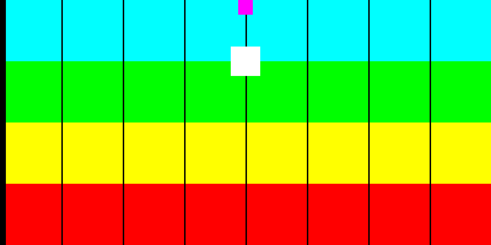
El mismo patrón convertido a domemaster muestra la convención de salida: el cénit (azul) en el centro del círculo, el frente (cuadro blanco) abajo y la costura (negro) arriba.
#4. Por qué ya no se hace con una esfera
El antecedente de este sistema, documentado en Domo_TouchDesigner/04_Docs/Material_360_y_16-9.md (otro repositorio), resolvía lo mismo con geometría: una esfera con el video pegado por dentro (Texture Coordinates = equirectangularin), una cámara en el centro, un Render TOP en modo cubemap y un Projection TOP cubemap → fisheye con FOV 180. El material plano iba sobre una malla de pantalla curva generada por un Script SOP, con una segunda esfera de fondo desenfocado.
Funcionaba, pero cada cosa costaba un render: seis caras de cubemap por cuadro para mostrar un video que ya venía equirectangular, una malla que había que teselar para que la pantalla no se rompiera en el vértice, y modos de render (fisheye180, dualparaboloid) que deforman en el vértice y dejan grietas en la costura. Además la escena 3D y el banco de pantallas convivían en la misma red con un solo Switch al final.
Aquí no hay geometría ni cámara. Todo son TOPs 2D sobre un lienzo equirectangular: un 360 ya está en ese formato, un domemaster se convierte con un Projection TOP, y el video plano se resuelve por píxel con un shader que recorre el domemaster y pregunta qué pantalla cubre cada dirección (sección 5.3). El paso intermedio entre las dos épocas, shaders/pantalla169.frag, ponía una sola pantalla plana o curva directamente sobre el lienzo equirectangular; se conserva como shader disponible pero la red ya no lo usa, porque el sistema de pantallas hace eso mismo con N pantallas, templates y editor.
#5. Los módulos de entrada
#5.1 IN_360: video 360 equirectangular
El archivo ya viene en el formato del lienzo (2:1, el frente en el centro), así que solo se ajusta al tamaño con un Fit TOP. Antes de eso pasa, si se enciende Costura, por el GLSL TOP costura con shaders/costura.frag, que funde una franja vertical alrededor de una columna del lienzo: desenfoca en horizontal con un núcleo triangular y, si hace falta, corrige un salto vertical y de brillo entre los dos lados. Sirve para la línea que deja un stitching imperfecto, esté en u = 0 o en cualquier otro azimut.
Para encontrarla: encender Costura y Costuraguia, mover Costurapos hasta que la línea roja caiga sobre la costura del video, ajustar ancho y desenfoque, y apagar la guía.
Sacar la costura de la cúpula. Fundirla no siempre alcanza, y la otra salida es no mostrarla. La costura de un 360 es la columna u = 0 del lienzo, es decir, un meridiano que va del nadir al cénit por detrás. Un corrimiento en u (el Yaw de siempre) solo la cambia de azimut: sigue subiendo hasta el cénit y en un domo de 180 grados se ve siempre, desde el borde hasta el centro del domemaster. Para sacarla hay que girar la esfera entera. Eso hace el GLSL TOP orientar (shaders/orientar.frag), justo antes de negro_y_salida: cada píxel de salida calcula su dirección, la devuelve con la rotación inversa y lee el lienzo de entrada en esa dirección. Es un remapeo equirectangular → equirectangular, no un corrimiento. Yaw gira alrededor del eje vertical, Pitch alrededor del eje izquierda-derecha (positivo lleva el frente hacia el cénit, igual que el Pitch de la página Domo) y Roll alrededor del eje del frente; el orden es Roll, luego Pitch, luego Yaw. Con los tres en cero, el Switch orientado deja pasar el lienzo sin tocarlo y el GLSL no cocina. Lee con textureLod en el nivel 0, porque con mipmaps el salto de u de 1 a 0 dejaría una línea gris de un píxel.
Medido el 18 de septiembre de 2026 con el patrón como video del 360 (Patron encendido) y Vercostura pintando la costura en rojo, contando los píxeles de costura que llegan al domemaster de 2048 × 2048:
| Orientación | Píxeles de costura en la cúpula |
|---|---|
| sin girar | 40 669 |
Yaw 90 | 40 669 (solo cambia de azimut) |
Pitch 45, Yaw 180 | 13 218 |
Pitch 60 | 6 362 |
Pitch 90 | 0 |
Roll 90, Pitch 30 | 0 |
Con Pitch 90 el frente del video sube al cénit y la costura queda entera bajo el horizonte, del horizonte de atrás al de adelante pasando por el nadir. Con Roll 90 y Pitch 30 los polos del video quedan a los lados, sobre el horizonte, y la costura cuelga por detrás, bajo la cúpula. Las dos opciones cambian lo que es "arriba" en el video; sirven sobre todo para material sin horizonte marcado (pintura, abstracto, partículas). Para una grabación con horizonte, lo que se puede hacer es llevarla lo más atrás posible con Yaw y, si hace falta, fundirla con Costura.
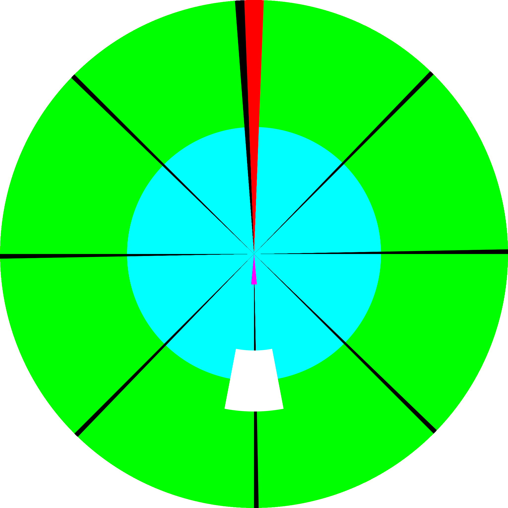
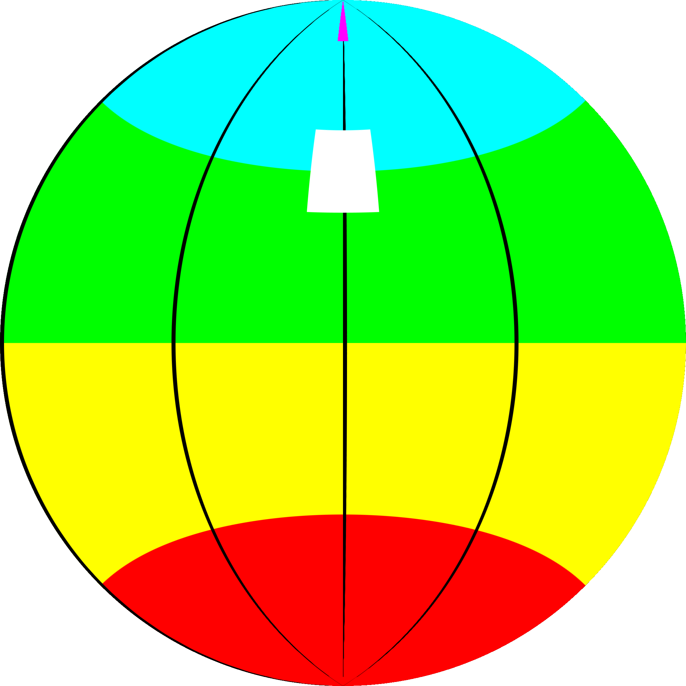
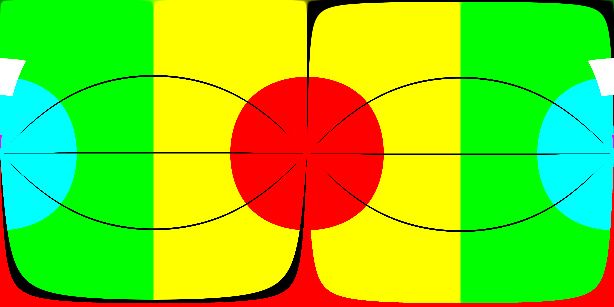
| Parámetro (página Video360) | Qué hace |
|---|---|
Activo | apagado, el módulo entrega negro y no cocina |
Archivo | archivo 360 equirectangular (2:1) |
Play, Velocidad | reproducir y velocidad (0 a 4) |
Costura | enciende el fundido de la costura |
Costurapos | posición de la costura en u (0 a 1) |
Costuraancho | ancho de la franja fundida (fracción del ancho, hasta 0.2) |
Costurablur | radio del desenfoque horizontal (hasta 0.1) |
Costuraoffsety | corrimiento vertical del lado derecho (±0.05) |
Costuraganancia | ganancia del lado derecho (0.5 a 1.5) |
Costuraguia | pinta la costura en rojo para ubicarla (dentro del fundido) |
Yaw, Pitch, Roll | página Orientacion: giro esférico del lienzo, en grados |
Patron | reemplaza el video por el patrón de prueba de DOMO, para apuntar sin video |
Vercostura | pinta de rojo la costura del archivo (Costurapos) donde cae después de girar |
Todo esto se maneja desde la página 360 de la raíz (ver la sección 6); los parámetros del módulo quedan en modo Bind contra ella.
#5.2 IN_180: domemaster o VR180
Tres formatos de archivo, elegidos con Formato:
- domemaster (fisheye 180, cuadrado): el Projection TOP
domemaster_a_equilo convierte a equirectangular confisheye → equirectangular, fov 180 yrx = -90, que deja el cénit arriba, en la mitad superior del lienzo. - vr180 (media equirectangular, cuadrado): el Fit TOP
al_centrolo centra en el lienzo con bandas negras a los lados. Ocupa el frente, del horizonte al cénit y hacia abajo; para llevarlo a la cúpula se subePitchen DOMO. - vr180sbs (VR180 lado a lado): el Crop TOP
ojo_izquierdose queda con la mitad izquierda del cuadro y sigue el camino del vr180 mono.
| Parámetro (página Video180) | Qué hace |
|---|---|
Activo | apagado, entrega negro y no cocina |
Archivo | archivo 180 (domemaster o VR180) |
Play, Velocidad | reproducir y velocidad |
Formato | domemaster, vr180, vr180sbs |
Yaw, Pitch, Roll | página Orientacion: el mismo giro esférico que el 360, con su propio orientar |
Se maneja desde la página 180 de la raíz. Para llevar un VR180 a la cúpula, Mpitch en esa página lo inclina solo a él, mientras que el Pitch de la página Domo mueve todas las fuentes.
#5.3 IN_169: video plano sobre pantallas en la cúpula (VIDEO_DOME)
El video plano no va sobre una sola pantalla. Adentro de IN_169 se construye VIDEO_DOME, el sistema de pantallas del proyecto Domo_Pantallas, con su propio constructor video_dome/build_video_dome.py (recibe TEMPLATE_TARGET, VIDEO_DOME_DIR y RESET_DEFAULTS = True desde build_domo.py). Su documentación completa está en Domo_Pantallas/04_Docs/Video_en_domo.md (otro repositorio); esto es lo esencial.
El mapeo va al revés que un render. video_dome/dome_map.frag recorre los píxeles del domemaster, calcula la dirección de cada uno en la cúpula (azimut y elevación, con el frente abajo del cuadro) y pregunta qué pantalla la cubre. Sin geometría, sin cámara, sin teselado.
Las pantallas viven en una tabla. screens, una fila por pantalla, se convierte a CHOP y el shader la lee como seis arrays de vec4. Las columnas, en el orden que espera el shader (video_dome/screens_module.py, COLS): yaw pitch roll mode, hfov vfov mirror opacity, cropx cropy cropw croph, on feather tile blend, rep repspan repmir repofs, travel spin edges spare y name. Cambiar ese orden sin tocar el shader rompe el mapeo en silencio, y toda celda que no sea name tiene que ser un número.
Las formas (mode): plana (gnomónica, las rectas siguen rectas, hasta unos 100 grados de ancho), curva (ángulos iguales, para pantallas muy anchas), banda (rectángulo en azimut y elevación, la única que cierra los 360), túnel (polares alrededor del centro; el video se enrosca y tile hace anillos) y cilindro (una pared alrededor del público; la imagen se comprime sola hacia el cénit y con travel la pared se lleva hacia arriba).
Una fila puede repetirse en anillo: rep = 4 pone la misma pantalla enfrente de cada cuarto de la sala y todas se mueven como una. blend es la costura entre copias: los grados de solape, que el shader reparte entre las dos para que no quede una banda oscura. repmir espeja las copias alternas, repofs corre el recorte en cada copia (cada sector ve un pedazo distinto del cuadro) y edges decide qué bordes se degradan (los cuatro, solo los costados, o solo arriba y abajo).
Los templates viven en screens_module.py como texto plano: cine, grande, bajo, cenital (un punto de vista); sala_2, sala_4, sala_6, sala_4_espejo, sala_6_mosaico, sala_corona (anillo de seis cosido más una cenital, el que mejor funciona), sala_corona_panorama (sala llena); tres, espejo, anillo, anillo_doble, tunel, tunel_con_sala, cilindro, cilindro_doble, cilindro_con_sala, fragmentos (composición). La página Montaje los aplica con Template y el pulse Applytemplate, que pisa la tabla entera. Las versiones con nombre (video_dome/versiones/*.json: corona_cosida, planetario_tres, sala_cuatro) guardan todos los parámetros más la tabla. Los momentos (página Momentos) atan un punto de la película a un montaje y funden entre ellos mientras corre.
Se maneja desde la página 16:9 de DOMO. Lo que importa del video plano está en la raíz, al mismo nivel que los selectores de 360 y 180, y no hace falta entrar a IN_169/VIDEO_DOME para el trabajo de todos los días. La página tiene seis bloques:
| Bloque | Parámetros de DOMO | Van a |
|---|---|---|
| Fuente | Vactivo, Vfuente (archivo / ndi / spout), Vmoviefile, Vndinombre, Vspoutnombre, Vplay | IN_169.Activo y Fuente, Moviefile, Ndinombre, Spoutnombre, Play de VIDEO_DOME |
| Montaje | Vtemplate | Template |
| Domo interno | Vyawglobal, Vdpitch, Vdroll, Vdomefov, Vflipx | Yawglobal, IN_169.Pitch y IN_169.Roll, Domefov, Flipx |
| Pantalla elegida | Vscreen, Vsmode (forma: plana, curva, banda, túnel, cilindro), Vsyaw, Vspitch, Vshfov, Vsautovfov, Vsvfov, Vsrep, Vsrepspan, Vsblend | Screen, Smode, Syaw, Spitch, Shfov, Sautovfov, Svfov, Srep, Srepspan, Sblend |
| Fondo | Vbg, Vbgblur, Vbgbright, Vbgsat, Vbgzoom, Vbgtile, Vbgyaw, Vbgfollow | Bg, Bgblur, Bgbright, Bgsat, Bgzoom, Bgtile, Bgyaw, Bgfollow |
| Guías | Vguides, Vguidealpha, Vviewfov, Vviewpitch, Vviewyaw, Vviews, Vpreview | Guides, Guidealpha, Viewfov, Viewpitch, Viewyaw, Views, Preview |
El domo interno, desde afuera. VIDEO_DOME dibuja su propio domemaster, con su propia orientación, y esa vista ahora se sigue y se ajusta desde la página 16:9 sin entrar al COMP. Vyawglobal gira todo el montaje en azimut (el shader dome_map lo recibe en uView.w, y el fondo lo sigue con Vbgfollow). Vdpitch y Vdroll inclinan y ruedan el domo interno entero: dome_map no tiene inclinación propia, así que se aplican en IN_169 con el mismo orientar del 360, sobre el lienzo que sale de VIDEO_DOME y antes de domo. Vdomefov es el FOV con el que VIDEO_DOME dibuja (180 es media esfera); con Fovauto apagado y Fovcontenido en 230 en la página Mapping, subirlo a 230 hace que las pantallas bajo el horizonte también lleguen. orientar corta a negro lo que queda por debajo de 90 − Domefov/2 de elevación, porque ahí el Projection TOP estiraba el borde del círculo en rayas. Vguides pinta sobre la salida la rejilla de VIDEO_DOME: anillos de elevación, radios de azimut, el contorno de cada pantalla y los círculos de mirada del público (Vviewfov es el campo de una mirada, Vviewpitch su elevación, Vviewyaw su azimut y Vviews cuántos puntos de vista se reparten en la vuelta). Como la rejilla va dentro del domemaster de VIDEO_DOME, gira y se inclina con él: es la manera de ver dónde quedó el domo interno respecto de la sala. Probado el 18 de septiembre de 2026: con Vdpitch 20 y la rejilla encendida, el círculo del domo interno se ve inclinado en out_domo; mover Viewpitch dentro de VIDEO_DOME actualiza Vviewpitch arriba, y los valores sobreviven a una reconstrucción.
Los parámetros de abajo están en modo Bind contra los de arriba (parent.DOMO.par.Vtemplate, etc.), y el bind funciona en los dos sentidos: mover un valor en la página 16:9 lo mueve en VIDEO_DOME, y cuando VIDEO_DOME escribe sus propios parámetros (al aplicar un template o al elegir otra fila con Vscreen) la página 16:9 se pone al día sola. El watcher de VIDEO_DOME ve el cambio de Template aunque llegue por el bind, así que elegir un template en Vtemplate lo aplica de inmediato, sin el pulse Applytemplate. Hay que tenerlo presente: un template pisa la tabla screens entera, y las ediciones de pantalla que no se hayan guardado como versión se pierden.
Los parámetros de pantalla editan una sola fila, la que dice Vscreen. En un template de varias filas (por ejemplo sala_corona: la corona de seis copias y la cenital) se elige la fila y se ajustan su azimut, su elevación, su ancho, su forma, cuántas copias hace en anillo y el arco que ocupan, que es lo que controla la separación entre copias. Lo fino (recortes, espejo, opacidad, animación, momentos, versiones, el editor con el mouse, las guías) sigue en las páginas de VIDEO_DOME. La caja nota_169 en la red de DOMO resume todo esto.
Reconstruir DOMO conserva la página 16:9 y el montaje. El constructor restaura primero VIDEO_DOME, copia sus valores hacia arriba y solo entonces pone los binds, para que al enlazar no cambie nada. Como el watcher de VIDEO_DOME reacciona unos frames después de un cambio, restaurar Template alcanzaba a reaplicar el template sobre la tabla recién restaurada y se perdían las ediciones de pantalla; por eso el constructor vuelve a escribir la tabla screens con un run() diferido (15 frames) y relee la fila elegida. Probado el 18 de septiembre de 2026: una elevación editada a mano sobrevive a dos reconstrucciones seguidas, y después Vtemplate sigue aplicando templates. Las capturas 05_Preview/pruebas/td_169_sala_corona.png y td_169_anillo_doble.png son out_domo con cada template elegido desde la página 16:9 y una imagen de prueba 16:9 como archivo.
video_dome/web/estudio_pantallas.html es un estudio en WebGL2, un solo archivo sin dependencias, que dibuja el domemaster con el mismo mapeo del shader: se mueven las pantallas con el mouse, se comparan montajes y se copia la tabla lista para pegar en screens. Sirve para diseñar un montaje sin abrir TouchDesigner.
La fuente. El parámetro Fuente de VIDEO_DOME (página Video, o Vfuente en la página 16:9 de DOMO) elige entre un archivo (Moviefile), una fuente NDI de la red (Ndinombre) o un sender Spout de la misma máquina (Spoutnombre). Así el video plano puede venir de otro programa, de otro equipo o de un archivo.
De vuelta al lienzo. VIDEO_DOME entrega en out_dome un domemaster con el frente ABAJO, la misma convención que domo. IN_169 lo lee con un Select TOP y lo pasa al lienzo equirectangular con la misma receta que para_unreal: Projection TOP fisheye → equirectangular con rx = -90 y el fov que diga VIDEO_DOME.Domefov, seguido de un Transform TOP con tx = -0.25 y extensión repeat para deshacer el giro de 90 grados del domemaster. Ese lienzo pasa luego por domo como cualquier otra fuente.
| Parámetro (página Video169) | Qué hace |
|---|---|
Activo | apagado, entrega negro y no cocina; en modo Bind contra DOMO.Vactivo |
Donde | solo lectura: recuerda que lo principal se edita en la página 16:9 de DOMO y el resto en IN_169/VIDEO_DOME |
Páginas de VIDEO_DOME, con sus parámetros tal como los crea build_video_dome.py (los que aparecen en la página 16:9 de DOMO quedan en modo Bind):
| Página | Parámetros |
|---|---|
| Video | Moviefile, Fuente (archivo / ndi / spout), Ndinombre, Spoutnombre, Play, Cue, Speed, Loopvideo, Audio, Volume |
| Montaje | Template, Applytemplate, Yawglobal, Domefov, Res, Flipx |
| Pantalla | Screen (la fila), Sname, Son, Smode, Syaw, Spitch, Sroll, Shfov, Svfov, Sautovfov, Smirror, Sopacity, Sfeather, Stile, Scropx, Scropy, Scropw, Scroph, Sblend, Sedges, Stravel, Sspin, Srep, Srepspan, Srepmir, Srepofs; pulses Addscreen, Dupscreen, Delscreen, Readscreen |
| Espacio | Viewfov, Viewpitch, Viewyaw, Views, Animtravel, Animspin |
| Editor | Openeditor, Edit, Editwhat (mover / tamaño / girar), Editsnap, Editstep |
| Fondo | Bg (off / wash / wrap / custom), Bgblur, Bgbright, Bgsat, Bgzoom, Bgtile, Bgyaw, Bgfollow |
| Look | Opacity, Vignette, K1 |
| Guias | Guides, Guidealpha, Guidewidth, Guidering, Guideray, Preview |
| Versiones | Versionname, Saveversion, Version, Loadversion, Refreshversions |
| Momentos | Moments, Momentname, Momentfade, Addmoment, Moment, Gotomoment, Delmoment, Refreshmoments, Fade |
| Grabar | Recfile, Record, Recres |
El Preview de la página Guias enciende un simulador de domo que es un .tox externo (theinfranet/TouchDesigner-Fulldome-Simulator) y no viene en el repositorio; si no está, la red se construye sin él.
#5.4 AUDIO: la cadena de sonido
Por defecto (Fuente = video) el sonido sigue a la fuente al aire y solo suena el video que está en DOMO.Fuente. Hay un Audio Movie CHOP por módulo, atado a su Movie File In para que el audio vaya sincronizado con ese video aunque cambie la velocidad: de_360 (IN_360/video), de_180 (IN_180/video) y de_169, que es un Select CHOP de VIDEO_DOME/audio_gain (el Audio Movie de movie1 por Volume y Audio de VIDEO_DOME). El Switch CHOP al_aire elige uno de los tres o silencio (un Constant CHOP en cero); como un Switch solo cocina la entrada que usa, los módulos que no están al aire no decodifican audio. Da silencio con el patrón al aire, con el módulo al aire apagado (Activo) o con el 16:9 recibiendo por NDI o Spout, porque en ese caso movie1 no es lo que se ve.
Antes sonaban dos cosas a la vez: AUDIO y el audio_out propio de VIDEO_DOME, que tocaba la película del 16:9 aunque la fuente al aire fuera el patrón o el 360. El constructor ahora deja ese audio_out apagado (su active en constante False); audio_movie y audio_gain siguen vivos para alimentar a de_169. Probado el 18 de septiembre de 2026 recorriendo las cuatro fuentes: solo el CHOP del módulo al aire cocina en cada cuadro, salida solo tiene señal con el 16:9 al aire (el 360 de prueba no traía audio), y con el patrón es silencio.
La otra opción de Fuente sigue igual: un archivo aparte (Audio File In) o la entrada de audio del equipo (Audio Device In). Luego ganancia (Math CHOP), EQ paramétrico de tres bandas (100 Hz, 1 kHz, 8 kHz), retardo en milisegundos para cuadrar con la imagen y un limitador (Audio Dynamics con umbral -1 dB, sin compresor). Sale por el dispositivo de audio por defecto y por out1, que es lo que graban grabar y ndi_domo.
| Parámetro (página Audio) | Qué hace |
|---|---|
Activo | apaga la salida al dispositivo y las fuentes de archivo y entrada |
Fuente | video (sigue a la fuente al aire), archivo, entrada |
Archivo | archivo de audio |
Ganancia | 0 a 4 |
Graves, Medios, Agudos | ±12 dB en 100 Hz, 1 kHz y 8 kHz |
Retardo | 0 a 2000 ms |
Limitador | limitador de picos |
#6. Mezcla, modelo de sala y salidas
mezcla (Switch TOP) elige entre IN_360, IN_180, IN_169 y patron según DOMO.Fuente; equi es el lienzo común. De ahí:
giro(Transform TOP,tx = Yaw / 360, unidades en fracción, extensiónrepeat) aplica el Yaw como corrimiento horizontal del lienzo. Es un giro puro en azimut, independiente del orden de rotaciones del Projection TOP. Por eso el Yaw NO va en el Projection TOP.domo(Projection TOPequirectangular → fisheye) hace el domemaster. Sin rotación, ese modo deja el centro del fisheye en el horizonte del frente;rx = 90sube el cénit al centro,ry = 90gira el domemaster para que el frente quede ABAJO del cuadro (la convención domemaster), y el Pitch se aplica comorx = 90 - Pitch: un Pitch positivo inclina el contenido del frente hacia el cénit. El fov es el del contenido: conFovautoencendido (por defecto) es el del modelo de sala, 180 paradomo180(media esfera, planetario) y también 180 paradomo90ydomo45, que son pantallas de media esfera inclinadas, yFovcustomparacustom; conFovautoapagado esFovcontenido. La resolución es la deRes, cuadrada.mapping(Transform TOP, unidades en fracción, extensiónzero) es el ajuste que en una sala real se hace en vivo sobre el servidor del domo:CentroxyCentroymueven el cénit,Escalaagranda o encoge el domemaster yRotarlo gira. Lo que queda fuera del cuadro es negro.out_domoes el domemaster terminado y el visor del COMP.
El truco del FOV. domo usa el FOV del contenido, pero para_unreal (y el servidor de un domo real, que solo recibe) leen el domemaster con el FOV de la sala. Con Fovauto apagado y Fovcontenido = 230, el domemaster mete 230 grados de contenido en el mismo círculo, y la cúpula de 180 muestra también lo que estaba hasta 25 grados bajo el horizonte: más espacio para lo que se creó. Es lo mismo que pasa con un servidor de domo en vivo: el domo recibe y desde TouchDesigner se mueve, se gira y se ajusta. Verificado el 18 de septiembre de 2026 con el patrón: la banda amarilla (v 0.25–0.5, bajo el horizonte) aparece sobre la línea de arranque de la cúpula.
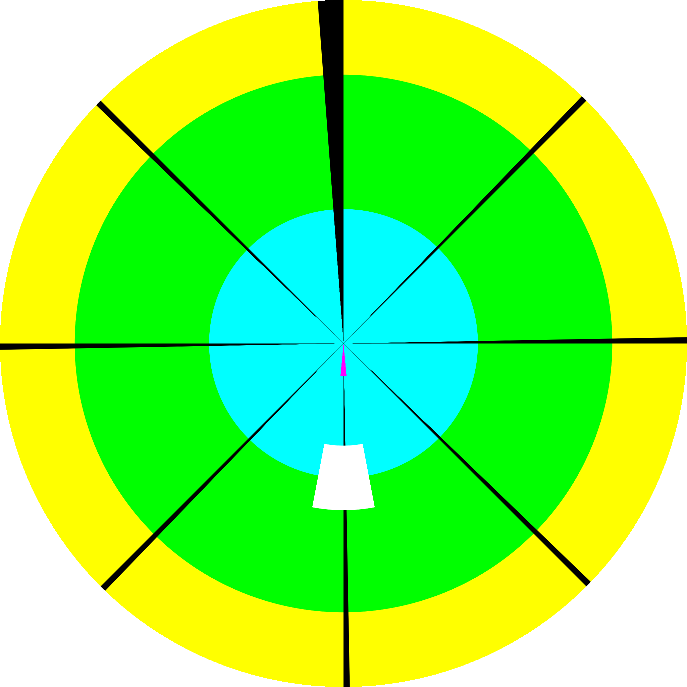
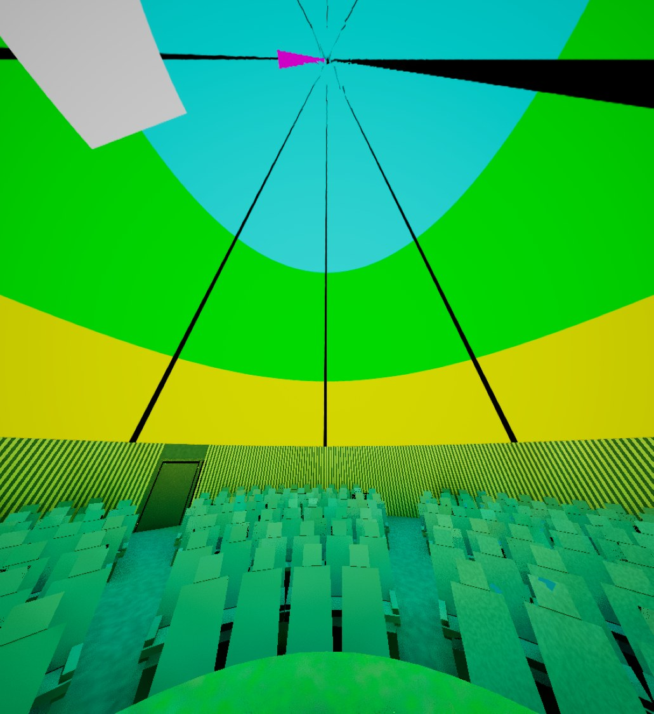
Del domemaster salen spout_domo (Syphon Spout Out), ndi_domo (NDI Out, con el audio de AUDIO/out1) y grabar (Movie File Out en HAP, con sufijo único, a Grabarcarpeta/domemaster.mov, también con el audio). Los tres están apagados por defecto salvo lo que diga la página Salidas.
La sala VR no quiere el domemaster sino el lienzo equirectangular con la cúpula en la mitad superior, ya con Yaw, Pitch y el FOV del modelo aplicados. Se reconstruye desde el domemaster: para_unreal (Projection TOP fisheye → equirectangular, rx = -90, fov el del modelo de sala, no el del contenido), giro_unreal (Transform TOP, tx = -0.25, repeat) que deshace el ry = 90 del domemaster, alfa_unreal (Reorder TOP, alfa en uno y formato fijado a rgba8fixed, porque el receptor de Unreal solo lee 8 bits por canal; ver la sección 8) y spout_unreal, que lo manda con el nombre que lee el SpoutDomeReceiver del nivel de Unreal. Medido con el patrón: el cuadro blanco del frente vuelve a u 0.5, v 0.75. La mitad inferior del lienzo queda sin imagen, que es lo que corresponde a un domo de 180.
Parámetros del COMP raíz:
| Página Domo | Qué hace |
|---|---|
Fuente | v360, v180, v169, patron |
Modelo | domo180 (planetario), domo90 (sala de pie con barandas, pantalla de 180 inclinada 45°), domo45 (tipo Maloka, pantalla de 180 inclinada 27°), custom; los tres primeros usan FOV 180 |
Fovcustom | FOV en grados si el modelo es custom (10 a 360) |
Yaw | girar el contenido en azimut (±180) |
Pitch | inclinar el contenido hacia el cénit (±90) |
Res | lado del domemaster: r1024 (ensayo), r2048 (tiempo real, por defecto), r4096 (grabar) |
Ancho | ancho del lienzo equirectangular (4096 por defecto; el alto es la mitad) |
Version | solo lectura, la versión del constructor (1.2, 18 sep 2026) |
| Página 360 | Van a (modo Bind en IN_360) |
|---|---|
Ractivo, Rarchivo, Rplay, Rvelocidad | Activo, Archivo, Play, Velocidad |
Ryaw, Rpitch, Rroll | Yaw, Pitch, Roll: el giro esférico del lienzo (sección 5.1) |
Rpatron, Rvercostura, Rcosturapos, Rcostura | Patron, Vercostura, Costurapos, Costura |
| Página 180 | Van a (modo Bind en IN_180) |
|---|---|
Mactivo, Marchivo, Mplay, Mformato | Activo, Archivo, Play, Formato |
Myaw, Mpitch, Mroll | Yaw, Pitch, Roll |
La página 16:9 está en la sección 5.3. El Yaw y el Pitch de la página Domo siguen existiendo y se aplican después, a todas las fuentes por igual.
| Página Mapping | Qué hace |
|---|---|
Fovauto | encendido por defecto: el FOV del contenido es el del modelo de sala |
Fovcontenido | FOV del contenido en grados (230 por defecto); se usa con Fovauto apagado |
Centrox, Centroy | mover el cénit, en fracción del domemaster (−0.5 a 0.5) |
Escala | escala del domemaster (0.5 a 2) |
Rotar | rotar el domemaster en grados (±180) |
| Página Salidas | Qué hace |
|---|---|
Spoutunreal | Spout del equirectangular a la sala VR (encendido por defecto) |
Spoutunrealnombre | nombre del sender: TD_Domo_Lab |
Spoutdomo | Spout del domemaster (apagado) |
Spoutdomonombre | TD_Domemaster |
Ndi | NDI del domemaster (apagado) |
Ndinombre | TD_Domemaster |
Grabar | grabar el domemaster en HAP |
Grabarcarpeta | carpeta de grabación, 05_Media por defecto |
#7. Cómo calibrar una sala nueva con el patrón
El patrón existe para que la orientación no se discuta de memoria. Con una sala nueva, sea física o virtual:
- Poner
Fuente = patrony elegir elModeloque corresponda a la cúpula (media esfera o casquete). Si es un casquete de otro ángulo,customyFovcustom. - Mirar el domemaster en
out_domo(o en el proyector): la marca azul tiene que estar en el centro, el cuadro blanco abajo, la columna negra arriba. Si el frente de la sala no coincide con el cuadro blanco, corregir conYawhasta que quede enfrente del público; con eso la costura negra cae detrás. - Si el contenido tiene que subir o bajar (una sala en la que el público mira más alto), tocar
Pitch: positivo lleva el frente hacia el cénit. - Si aparece rojo en la cúpula, la sala está leyendo bajo el horizonte: el modelo tiene más FOV del que la cúpula cubre, o el lienzo que llega no es el de la mitad superior.
- Si la cúpula real corta la imagen o le sobra borde, ajustar
Centrox,Centroy,EscalayRotar(página Mapping) mirando el patrón, hasta que el círculo del domemaster coincida con la cúpula. Si se quiere que entre más contenido del que cubre la sala, apagarFovautoy subirFovcontenido(230 sobre 180 está verificado). - En la sala VR, con
Spoutunrealencendido, comprobar las tres vistas: el frente (cuadro blanco y, arriba, la marca azul del cénit), el cénit y la parte de atrás con la columna negra de la costura.
Lo que se verificó con estas capturas: en la sala VR solo se ve el verde (la cúpula lee la mitad superior del lienzo), el frente u 0.5 cae en +X, el cénit queda en el centro del domemaster y la costura del lienzo va a parar detrás.
#8. Trampas medidas
- Yaw en el Projection TOP no es un giro en azimut. El orden de rotaciones del Projection TOP hace que
ryorzsobre un fisheye produzcan cosas distintas según lo que haya enrx. Un corrimiento horizontal del lienzo equirectangular (Transform TOP,tx = Yaw/360,repeat) es un giro puro y no depende de nada más. Por eso el Yaw vive antes dedomo, engiro. equirectangular → fisheyesin rotación mira al horizonte. Hay que ponerrx = 90para que el cénit quede en el centro, yry = 90para que el frente quede abajo. Pitch resta derx.- Reconstruir el equirectangular desde un domemaster requiere las dos operaciones inversas:
fisheye → equirectangularconrx = -90y el fov del modelo, más un corrimiento detx = -0.25para deshacer elry = 90. Sin el corrimiento el frente queda a 90 grados. La receta es la misma enpara_unrealy enIN_169. - El modelo de sala es el FOV del fisheye.
domo180es media esfera;domo90ydomo45también son pantallas de media esfera (180°), solo que inclinadas 45° y 27°; la inclinación está en la geometría de la sala, así que los tres usan FOV 180 y no hace falta tocarPitch(ver05_Modelos_de_sala.md). Concustom, lo que pase deFovcustomno entra en el círculo.para_unrealusa siempre el fov de la sala, así que la sala VR recibe exactamente lo que cubre el modelo; sidomotrabaja con más grados (Fovautoapagado), ese contenido extra entra en la cúpula por el borde. - Annotate COMP que se autodestruye. En TD 2025.32460, si el Annotate COMP se crea con nombre (
create(annotateCOMP, 'x')) o se le enciende el flagutility, desaparece unos frames después. La funcióncaja()lo crea sin nombre, lo configura y lo renombra al final. El aviso "Invalid path for node .../annotate/annotation" en subackinterno lo trae de fábrica y no afecta. - Dos TouchDesigner abiertos no pueden compartir nombre de sender. Ni de Spout ni de NDI: el segundo no publica o pisa al primero. Si hay dos instancias (por ejemplo el proyecto viejo y este), cambiar
Spoutunrealnombre,SpoutdomonombreoNdinombreen una de ellas, y ajustar el receptor de Unreal al nombre que corresponda. - El sender de la sala VR se llama
TD_Domo_Lab. ElSpoutDomeReceiverdel nivel tiene que leer ese nombre; si se cambia en la página Salidas hay que cambiarlo también en el actor (ver 03_Puente_Spout.md). - El receptor de Unreal no lee 16-bit float.
ASpoutDomeReceiversolo acepta texturas de 8 bits por canal.VIDEO_DOME, y cualquier cadena que herede de él, entrega 16-bit float; con ese formatoSpoutReceiverdevuelve falso y la cúpula se queda congelada en el último frame que pudo leer, sin aviso en pantalla (solo "no disponible todavia" cada ~5 s en el log de Unreal). Por esoalfa_unrealfija el formato argba8fixedjusto antes despout_unreal. Lo destapó unconstantrojo de 8 bits, que sí llegaba mientras la cadena completa no (medido el 17 de septiembre de 2026). - VIDEO_DOME termina en un Null, no en un Out TOP.
IN_169lo lee con un Select TOP apuntado aVIDEO_DOME/out_dome; no está cableado por conector. - VIDEO_DOME no conserva solo su montaje cuando corre
build_domo.py, porque DOMO entero se destruye antes; esbuild_domo.pyel que copia sus parámetros y sus tablas y los reescribe al final. La tablascreensse escribe dos veces: en el momento y de nuevo unos frames después, porque el watcher reaplica el template restaurado con retraso (ver 5.3). - Los Annotate COMP de VIDEO_DOME se perdían.
build_video_dome.pylos creaba con nombre y conutilityencendido, y desaparecían solos. Ahora se crean sin nombre, sinutility, y se renombran al final, como encaja(). - La costura de un 360 no se saca con Yaw. Es un meridiano de polo a polo: en azimut solo se mueve, y siempre llega al cénit. Hace falta un giro esférico (
Rpitch,Rroll; sección 5.1). - VIDEO_DOME tenía su propia salida de audio. Su
audio_outsonaba siempre, esté o no el 16:9 al aire. Dentro de DOMO queda apagado y el único sonido sale deAUDIO/salida(sección 5.4). - Qué lado manda al reconstruir. Un parámetro en modo Bind no se guarda como constante, así que el módulo renace con su valor por defecto. Para los de VIDEO_DOME manda abajo (el constructor guarda y restaura VIDEO_DOME aparte); para los de IN_360, IN_180 e IN_169 manda la página de la raíz, y solo la primera vez se sube el valor del módulo. Los parámetros de solo lectura (
Version,Donde) ya no se restauran, para que muestren la versión del constructor que corrió. - Resolución. El domemaster viene en 2048 porque 4096 con todas las capas de VIDEO_DOME encendidas llena la memoria de la GPU. Subir
Ressolo para grabar.
#9. Cómo agregar un módulo nuevo
Un módulo es un Base COMP hijo de DOMO que entrega el lienzo equirectangular por out1. El patrón que siguen los tres existentes:
- Crear el COMP con
D.create(baseCOMP, 'IN_NUEVO'), ubicarlo connodeXynodeY(los módulos van en la columnax = -600) y darle una página personalizada con al menos el toggleActivo. Las utilidadesmenu(),flotante(),toggle()ytexto()crean parámetros con valor y valor por defecto;appendFilepara rutas. - Construir la cadena que produce el lienzo. Lo último que entregue debe estar en la convención común (
u 0.5frente,v 0.5horizonte, cúpula arriba) y a la resolución del lienzo: llamar alienzo(op)sobre el TOP que fija la resolución, que la ata por expresión aparent.DOMO.par.Ancho. Si la fuente entrega un domemaster con el frente abajo, la receta de vuelta es la de IN_169: Projection TOPfisheye → equirectangularconrx = -90y su fov, más un Transform TOP contx = -0.25yrepeat. - Cerrarlo con
negro_y_salida(comp, resultado, x): crea un Constant TOP negro a la resolución del lienzo, un Switch TOPactivogobernado porint(parent().par.Activo)y el Out TOPout1. Apagado, el módulo entrega negro y deja de cocinar. - Ponerle su
caja(comp, 'nota', titulo, cuerpo, nodos, color): el Annotate COMP que encierra los nodos y explica el módulo. Pasarle la lista de nodos que debe abarcar, incluidosnegro,activoyout1. - Conectarlo a la mezcla: una entrada más en
mezcla(wire(D.op('IN_NUEVO'), mez, n)) y una opción más en el menúFuentede la página Domo, en el mismo índice. Si el módulo trae audio de un video, sumarle un Audio Movie CHOP enAUDIO, conectarlo aal_aireen ese índice (el silencio va último) y agregar el caso a la expresión deal_aire.index. - Agregar el nuevo COMP a la lista de la caja
nota_modulosy volver a correr el constructor: la configuración de los módulos existentes se conserva sola.
04_Docs/02_Sala_Unreal.md
La sala en Unreal
La sala VR en Unreal Engine 5.8: geometria, materiales, VR y como regenerarla
Este documento describe el proyecto 03_Unreal/DomoVR: una sala de planetario (cúpula, muro cilíndrico, 360 butacas) que se recorre en realidad virtual y cuya cúpula muestra en vivo lo que TouchDesigner envía por Spout. Aquí está la geometría, el contrato de unidades, cómo regenerar todo desde cero, los materiales, la iluminación, el post proceso y la ruta de VR. El puente con TouchDesigner tiene su propio documento: 03_Puente_Spout.md. La bitácora cronológica completa, con los callejones sin salida, está en Unreal_sala_domo.md.
#1. Qué es
Un proyecto de Unreal 5.8 con Lumen, DX12 y OpenXR que carga un solo nivel, /Game/Maps/DomoVR, con la sala entera. Toda la sala (mallas, materiales, nivel, luces, post proceso, punto de partida) se construye por script; nada se arma a mano en el editor. La lógica en tiempo de ejecución es mínima: un único actor en C++ (ASpoutDomeReceiver) que recibe la señal de Spout y la aplica a la cúpula. El resto del proyecto no tiene código propio.
#2. Dónde vive cada cosa
01_Blender/generar_sala_domo.py genera la sala en Blender y exporta FBX, glTF y texturas
02_Export/sala_domo.fbx la geometría que consume Unreal
02_Export/texturas/ mapas PBR horneados (BaseColor, Roughness, Normal; 2048x2048)
03_Unreal/importar_sala.py importa el FBX, crea materiales y arma el nivel
03_Unreal/conectar_spout.py coloca el receptor de Spout (ver 03_Puente_Spout.md)
03_Unreal/abrir_proyecto.ps1 abre el editor gráfico
03_Unreal/importar_sala.ps1 corre importar_sala.py sin interfaz (headless)
03_Unreal/DomoVR/ el proyecto de Unreal (uproject, Config, Source, Plugins, Content)Dentro del proyecto, el contenido queda en Content/Sala/ (mallas, y las subcarpetas Materials/ y Textures/) y el nivel en Content/Maps/DomoVR.umap. Binaries/, Intermediate/, Saved/ y DerivedDataCache/ los regenera el editor y están fuera del control de versiones.
#3. Geometría y contrato de unidades
La sala es un cilindro cerrado de 11,5 m de radio con piso plano (sin grada), muro de 3 m de alto y una cúpula hemisférica que arranca a esa altura. No hay ningún volumen exterior: el puesto de control es un sector dentro del mismo cilindro. Todo se genera desde las constantes de 01_Blender/generar_sala_domo.py.
| Parámetro | Valor | Nota |
|---|---|---|
| Radio del domo y del muro | 11,5 m | escala del Planetario de Bogotá |
| Altura del ecuador de la cúpula | 3 m | el muro cilíndrico va del piso a esa altura |
| Teselado de la cúpula | 128 × 64 | segmentos de azimut × elevación (media esfera) |
| Tarima central | 3 m de diámetro × 1 m de alto | en el origen; el PlayerStart no puede caer ahí |
| Sector de control | 7 m de arco sobre el muro, desde 6,5 m de radio | lado −X, sin butacas; consola y marca en el piso |
| Butacas | 360 = 6 cuñas × 60 | reclinadas 40° hacia atrás; espectador casi acostado |
| Filas por cuña | 7, radios de 3,2 a 10,4 m | paso radial 1,2 m; paso entre butacas 0,6 m; se calculan, no se escriben |
| Puertas | 4, de 1,4 × 2,3 m | dos flanquean el control, dos simétricas en el lado opuesto |
| Listones de madera | ancho 7 cm, paso 14 cm | revestimiento vertical del muro, material M_Madera |
Mallas que trae el FBX y material que recibe cada una:
| Malla | Material | Comentario |
|---|---|---|
SM_Domo | MI_Domo (instancia de M_Domo) | normales hacia adentro; UV con U = azimut, V = elevación |
SM_Muro, SM_Piso, SM_Tarima | M_Muro, M_Piso, M_Tarima | PBR horneado |
SM_Listones | M_Madera | PBR horneado |
SM_Control | M_Control | color plano; no se hornea textura |
SM_Butacas_01 … SM_Butacas_06 | M_Butaca | una malla por cuña, 60 butacas fusionadas |
SM_Puerta_01 … SM_Puerta_04 | M_Puerta | con hueco real en el muro |
En total son unos 43 000 triángulos. Por eso Nanite queda apagado (USAR_NANITE = False en importar_sala.py): a ese conteo no aporta nada y su indicador de uso en los materiales fue fuente de avisos. Si algún día entra un escaneo por fotogrametría, esa constante es lo único que hay que voltear.
#Unidades: Blender → FBX → Unreal
Blender trabaja en metros y Unreal en centímetros. El FBX declara su unidad, y la conversión la hace el importador de Unreal: importar_sala.py fija convert_scene_unit = True en FbxStaticMeshImportData, cuyo valor de fábrica es False. Sin esa bandera la sala entraba como una maqueta de 23 cm de diámetro (el domo medía ±11,5 uu) y se veía negra porque todo quedaba dentro del plano de recorte cercano de la cámara. Se corrigió del lado de Unreal, no en el export de Blender, porque el mismo FBX también produce el .glb y cambiar la escala de origen afectaría a todos sus consumidores.
Cotas verificadas en el nivel después de la corrección (get_actor_bounds):
| Actor | Mínimo (uu) | Máximo (uu) |
|---|---|---|
Domo_Actor | (−1150, −1150, 300) | (1150, 1150, 1450) |
Muro_Actor | (−1150, −1150, 0) | (1150, 1150, 300) |
Piso_Actor | (−1150, −1150, 0) | (1150, 1150, 0) |
Tarima_Actor | (−150, −150, 0) | (150, 150, 100) |
Un detalle del importador: cuando el nodo de origen no tiene nombre único, los Static Mesh llegan con el nombre del archivo antepuesto (sala_domo_SM_Domo). El script resuelve los nombres por sufijo, así que acepta ambas formas.
#4. Cómo regenerar la sala
La cadena completa, en orden:
- Blender (sin interfaz):
blender.exe --background --python 01_Blender/generar_sala_domo.py. Borra la escena, la reconstruye desde las constantes, hornea las texturas PBR con Cycles, exporta02_Export/sala_domo.fbxy.glb, y renderiza vistas de comprobación en05_Preview/. - Importar en Unreal:
03_Unreal/importar_sala.ps1(headless, escribe03_Unreal/Saved_Logs/importar_sala.log) o, si el editor ya está abierto, pegarimportar_sala.pyen su consola de Python. Nunca las dos cosas a la vez: dos procesos de Unreal sobre el mismo.uprojectse pelean porSaved/,Intermediate/y el.umap. - Conectar Spout:
conectar_spout.py, después del anterior, porque reimportar reconstruye el nivel desde cero y borra el receptor.
importar_sala.py hace, en este orden: importa el FBX a /Game/Sala/ con combine_meshes = False (una malla por objeto); busca e importa las texturas de 02_Export/texturas/ (BaseColor como color sRGB, Roughness como TC_Masks sin sRGB, Normal como TC_Normalmap sin sRGB); crea los materiales; carga o crea el nivel y lo vacía de actores; coloca un StaticMeshActor por malla; crea el PostProcessVolume, el SkyLight_Domo y el PlayerStart; guarda todo e imprime un resumen. Los mensajes salen como Warning con prefijo [importar_sala] porque en modo -run=pythonscript los Display no siempre llegan al log.
Es idempotente: cada material, textura e instancia se borra y se recrea; el nivel se conserva pero se limpia. Ningún None sigue de largo: si un asset no se crea o una malla no se coloca, el script para con una excepción que nombra el asset. Si el FBX no existe todavía, no falla: construye el resto del nivel y lo deja anotado. Las mallas se colocan con spawn_actor_from_class más set_static_mesh, no con spawn_actor_from_object: esa última depende de un viewport de editor vivo y en headless devuelve None en silencio.
#5. Materiales y por qué la cúpula ilumina la sala
La única fuente de luz de la sala es la propia cúpula. importar_sala.py quita del nivel cualquier DirectionalLight, ExponentialHeightFog o SkyAtmosphere, y arma la cadena así:
| Pieza | Configuración | Para qué |
|---|---|---|
M_Domo | shading model Unlit, two_sided, is_sky | mostrar solo su emisión; verse desde adentro sin depender de las normales; contar como cielo |
Grafo de M_Domo | SpoutTexture (TextureSampleParameter2D) × EmissiveIntensity (escalar) → Emissive Color | la textura la sustituye Spout en vivo; la intensidad se ajusta sin recompilar |
EmissiveIntensity | parámetro escalar de M_Domo, valor inicial 1,0 (importar_sala.py, línea 185); expuesto en MI_Domo | multiplica el frame de Spout antes del pin Emissive Color; se ajusta en vivo desde MI_Domo sin recompilar. El valor que se ve bien no está confirmado visualmente |
| Textura de arranque | /Engine/EngineResources/DefaultTexture | marcador de posición sRGB; con la grilla lineal el material no compilaba y el domo salía negro |
MI_Domo | instancia de M_Domo | es la que lleva la malla y de la que el receptor crea su instancia dinámica |
SkyLight_Domo | en (0, 0, 400), movable, real_time_capture, lower_hemisphere_is_black, intensidad 2 | captura la cúpula cada frame y la reparte como luz sobre butacas, piso y listones |
El punto clave es is_sky más el SkyLight con captura en tiempo real. Lumen por sí solo casi no recoge la emisión de una malla enorme y delgada como la cúpula: sin esas dos piezas la sala queda negra aunque la cúpula se vea encendida. Marcada como cielo, el SkyLight_Domo la lee cada frame y con ella tiñe la sala con los colores de lo que se proyecta.
Los demás materiales son Default Lit con los mapas horneados (BaseColor → Base Color, Roughness canal R → Roughness, Normal → Normal), metálico fijo en 0. Si falta un mapa, el material cae a un color plano oscuro y mate con parámetros Color y Roughness expuestos. M_Control siempre cae al color plano porque no se hornea.
#6. Post proceso
Un PostProcessVolume sin límites (Unbound), etiquetado PPV_ExposicionFija. La exposición es manual y fija: con exposición automática la cámara reaccionaría a la propia imagen proyectada y arruinaría la lectura del contenido.
| Ajuste | Valor |
|---|---|
| Método de exposición | Manual |
| Exposición física de cámara | apagada (con ella la emisión del domo quedaba hundida en negro) |
| Exposure bias | −0,5 |
| Brillo mínimo y máximo | 1,0 / 1,0 |
| Indirect lighting intensity | 8 |
| Lumen scene lighting quality | 2 |
| Bloom intensity | 0,15 |
En Config/DefaultEngine.ini acompañan: Lumen para GI y reflejos (r.DynamicGlobalIlluminationMethod=1, r.ReflectionMethod=1), campos de distancia activos, exposición automática apagada por defecto, DX12 como RHI (DefaultGraphicsRHI_DX12, SM6), sin iluminación estática y con EditorStartupMap/GameDefaultMap apuntando a /Game/Maps/DomoVR.
#7. VR (OpenXR)
En Unreal 5.8 no existe un plugin aparte de SteamVR: SteamVR actúa como runtime OpenXR del sistema y el motor habla con él por el plugin OpenXR estándar. El proyecto lleva bStartInVR=True y vr.InstancedStereo=1.
- Encender el visor y conectarlo al PC con Virtual Desktop Streamer (por red).
- Arrancar SteamVR y confirmar que su runtime OpenXR es el activo del sistema.
- Abrir el proyecto y el mapa
/Game/Maps/DomoVR. - Play → VR Preview (no el Play normal en el viewport).
En cada arranque el log muestra xrCreateInstance called with invalid API version 1.1. Max supported version is 1.0, impreso por el loader de OpenXR. No impide cargar el editor; si la sesión de VR no arranca, lo primero es revisar que SteamVR esté corriendo y sea el runtime activo, antes de tocar el proyecto.
El PlayerStart_Butaca queda a 400 cm del centro hacia +X (fuera de la tarima, lado opuesto al control) y a 70 cm de altura, mirando al centro. Es una aproximación de la altura de ojo de alguien casi acostado, no un dato medido.
#8. Cómo abrir
- El proyecto tiene un módulo C++ (
Source/DomoVR/) y un plugin con código, así que la primera vez, o después de tocar código, hay que compilar con el editor cerrado:UnrealBuildTool.exe DomoVREditor Win64 Development -Project="<ruta>\DomoVR.uproject" -WaitMutex(Visual Studio 2022). Salen dos avisosC4996deRHIUpdateTexture2Den el plugin de Spout; son esperables. 03_Unreal/abrir_proyecto.ps1abre el editor (-culture=en). La primera apertura compila shaders y puede tardar varios minutos con la GPU al 100 %.- Al abrir arranca solo un servidor MCP en
http://127.0.0.1:8090/mcp(pluginsModelContextProtocolyEditorToolset, sin autenticación, solo localhost). El puerto se fija enConfig/DefaultEditorPerProjectUserSettings.iniporque el 8000 de fábrica cae en un rango que Windows reserva en esta máquina. - Unreal en segundo plano se frena a unos 3 fps. Para que siga a velocidad completa mientras se trabaja en TouchDesigner se apagó
bThrottleCPUWhenNotForegrounden la configuración del editor del usuario (%LOCALAPPDATA%\UnrealEngine\5.8\Saved\Config\WindowsEditor\EditorSettings.ini), que no viaja con el repositorio.
#9. Cómo verificar
- El editor abre directo en
/Game/Maps/DomoVRcon la sala visible (no en un nivelUntitled). - El Outliner tiene
Domo_Actor,Muro_Actor,Piso_Actor,Listones_Actor,Tarima_Actor,Control_Actor, seisButacas_XX_Actor, cuatroPuerta_XX_Actor,PPV_ExposicionFija,SkyLight_Domo,PlayerStart_ButacaySpoutDomeReceiver. - El viewport está en modo Lit y en Realtime (
Ctrl+R). En modo Unlit los materiales sin iluminación se dibujan como un gris plano y la cúpula parece muerta; en un viewport pausado no tickea ningún actor. - La cúpula muestra la imagen de TouchDesigner y las butacas cambian de tono con ella. Eso confirma que la luz de la sala viene del domo.
Saved/Logs/DomoVR.logsin errores deLogSpoutPlugin. Los bloquesLogAutomationTest: Error: Condition failedconUnifiedErrorTestson pruebas internas del plugin MCP, no fallos del proyecto.
#10. Pendiente de confirmar
- Rango V de la UV de la cúpula: resuelto en la práctica. Verificado el 17 de septiembre de 2026 con un patrón de bandas enviado por Spout (capturas en
05_Preview/pruebas/unreal_bandas_lateral.pngyunreal_bandas_cenit.png): la cúpula muestra solo la mitad superior del equirectangular. V = 0,5 cae en el horizonte (la línea de arranque de la cúpula sobre los listones), V = 0,75 en 45° de elevación y V = 1 en el cénit. U = 0,5 cae en +X (el frente del público, opuesto a la zona de control en −X), y los meridianos dibujados cada 45° salieron equiespaciados. Lo que sigue sin explicación es el código:crear_domo()en01_Blender/generar_sala_domo.pyescribíav = elevación / 90°y no se veía dónde se remapeaba a la mitad superior. Resuelto también en el código (misma noche):primitive_uv_sphere_addya traía una capaUVMapy el script escribía en una segunda capa (UVMap.001); Unreal leía el canal 0, la UV por defecto de la esfera (U = azimut/360 + 0,5,V = 0,5 + elevación/180). Ahora la cúpula se construye a mano con una sola capa y esa fórmula explícita, igual para los tres modelos de sala. Detalle en 05_Modelos_de_sala.md, sección 3. EmissiveIntensity. Documentado en la sección 5: valor inicial 1,0 (importar_sala.py, línea 185), expuesto enMI_Domo. El valor que de verdad se ve bien no quedó confirmado a ojo.- Ancho del sector de control: cerrado. Son 7 m:
ANCHO_CONTROL = 7.0enimportar_sala.py(línea 32) y en el script de Blender. - Altura del PlayerStart (70 cm): aproximación pendiente de ajustar con las coordenadas reales de las butacas.
04_Docs/03_Puente_Spout.md
El puente Spout
Como TouchDesigner le manda la senal a la cupula de Unreal por Spout
Cómo llega en vivo la imagen de TouchDesigner a la cúpula de la sala descrita en 02_Sala_Unreal.md: el plugin, la clase que recibe la señal, el script que la deja montada, el formato que debe mandar TouchDesigner, el crash que hubo que arreglar y cómo comprobar que la señal llega. Todo corre en el mismo equipo Windows; Spout comparte texturas por GPU, no por red. El receptor del plugin tiene dos caminos (SpoutReceiver.cpp:457-466): el principal toma la textura compartida de DirectX directamente en la GPU, y el de respaldo copia los píxeles por CPU. Cuál se usa lo decide lo que devuelva la librería de Spout en cada recepción, no una opción del proyecto.
#1. Por qué Spout y no NDI
Unreal 5.8 trae de fábrica un plugin NDIMedia de Epic, ya compilado, que no exige C++. Se evaluó primero, pero la decisión fue ir por Spout: TouchDesigner y Unreal están en la misma máquina y Spout comparte la textura directamente en la GPU, sin codificar ni pasar por la red. El costo es que un plugin con código obliga a que DomoVR tenga su propio módulo C++ (Source/DomoVR/) y a compilar antes de abrir el editor. NDI no quedó habilitado ni deja rastro; sigue disponible en el motor si algún día se prefiere la ruta sin compilar, igual que el kit comercial de Off World Live (Fab), con binarios para Spout y NDI.
#2. El plugin
| Dato | Valor |
|---|---|
| Repositorio | https://github.com/kessoning/Spout-UE5, fork del original de zuyi53 |
| Rama y commit | 5.8_fix, commit ac7f9fb ("Added 5.8 support"); no la rama main |
| Versión | 0.0.5 según CHANGELOG.md: corrige la firma de FSlateRenderer::OnBackBufferReadyToPresent que cambió en 5.8 |
| Ubicación en el repo | 03_Unreal/DomoVR/Plugins/SpoutPlugin/ (vendorizado, con ThirdParty/Spout/ y Spout.dll) |
| Requisito | RHI D3D12 (el plugin usa interoperabilidad D3D11 sobre DX12); solo Win64 |
| Licencia | el README.md dice "MIT License. See the LICENSE file", pero la rama clonada no trae archivo LICENSE |
Sobre la licencia: la única evidencia hoy es esa frase del README, no un archivo versionado. Antes de usar esto en trabajo de cliente conviene confirmarlo con el autor o revisar otra rama o tag.
El plugin vendorizado no es idéntico al del repositorio: trae el arreglo de la sección 7 en Source/SpoutPlugin/Public/SpoutModule.h, Private/SpoutModule.cpp y Private/SpoutD3DContext.cpp. Si se actualiza el plugin desde el origen hay que volver a aplicar ese cambio.
La compilación (comando de UnrealBuildTool con el editor cerrado) está en 02_Sala_Unreal.md, sección 8. Genera UnrealEditor-SpoutPlugin.dll y copia Spout.dll a Plugins/SpoutPlugin/Binaries/Win64/. Los dos avisos C4996 por RHIUpdateTexture2D (obsoleto en 5.8, todavía funcional) salen de SpoutReceiver.cpp del plugin, no de DomoVR.
#3. La clase ASpoutDomeReceiver
Vive en 03_Unreal/DomoVR/Source/DomoVR/SpoutDomeReceiver.{h,cpp} y es la única clase de juego del módulo. Se resolvió en C++ y no en Blueprint por una razón técnica, además de que nadie quería cablear nodos a mano: la función del plugin USpoutBPFunctionLibrary::SpoutReceiver recibe el material dinámico (OutMat) por referencia y solo crea uno nuevo si llega nulo. Desde Blueprint ese pin no tiene memoria entre llamadas y, sin promoverlo a variable y pasarlo de vuelta, se crea una Dynamic Material Instance nueva por frame. En C++ se guarda en un UPROPERTY() y se reutiliza. (El parámetro OptionalOutputRenderTarget sí se usa en la implementación aunque el comentario del plugin diga "reserved for future"; esta clase no lo necesita.)
Propiedades editables en el panel de detalles, sin recompilar:
| Propiedad | Valor por defecto | Qué es |
|---|---|---|
Spout Sender Name | TD_Domo_Lab (constante de conectar_spout.py, línea 60, y valor en el nivel) | nombre exacto del sender de TouchDesigner. Los nombres anteriores fueron TD_Domo_Final (Pantallas) y TDSyphonSpoutOut (dosis.45, sigue como valor por defecto en el código C++). Se lee en cada Tick, así que se cambia en vivo |
Target Material | MI_Domo | material del que se crea la instancia dinámica |
Texture Parameter Name | SpoutTexture | parámetro de textura de M_Domo que recibe el frame |
Target Mesh Component | el StaticMeshComponent de Domo_Actor | malla a la que se aplica el material |
Target Material Slot | 0 | ranura de material de esa malla |
Comportamiento:
Tick()llama aSpoutReceivercon el material y la textura guardados y aplica el material a la malla solo la primera vez que cambia de puntero, no cada frame. LeeSpoutSenderNameen cada Tick, así que el nombre del sender se cambia en vivo desde el panel de detalles.- Tickea también en el editor sin darle a Play: sobreescribe
ShouldTickIfViewportsOnly()para devolvertrue, que es el mecanismo real del motor para eso. - Si el sender no existe todavía (TouchDesigner cerrado), no hace nada salvo un aviso en el log cada 5 segundos como máximo.
- Si
Spout.dllno cargó, se apaga solo (SetActorTickEnabled(false)) y lo dice una vez. Ver la sección 7.
#4. conectar_spout.py
Se corre igual que importar_sala.py (headless con el editor cerrado, o pegado en la consola de Python del editor abierto), siempre después de importar_sala.py, porque la reimportación reconstruye el nivel y borra el receptor. Pasos:
- Confirma que
SpoutPlugincargó (unreal.SpoutBPFunctionLibraryexiste). - Borra el Blueprint antiguo
BP_SpoutDomoReceiversi quedaba alguno. - Asegura que
Domo_ActorlleveMI_Domoen su ranura 0. - Coloca una instancia de
ASpoutDomeReceiver(borrando las previas) conSPOUT_SENDER_NAME = "TD_Domo_Lab",MI_Domo,SpoutTexturey la malla deDomo_Actor. - Vuelve a pasar el indicador de uso Nanite sobre los materiales de la sala.
- Guarda el nivel y los assets, y genera
.mcp.json(sección 9).
#5. Lo que debe mandar TouchDesigner
| Dato | Valor |
|---|---|
| Nombre del sender | TD_Domo_Lab (actual, conectar_spout.py línea 60). Nombres anteriores: TD_Domo_Final (proyecto Pantallas) y TDSyphonSpoutOut (proyecto dosis.45). El receptor lee el nombre en cada Tick: se cambia en vivo desde el panel de detalles |
| Formato | equirectangular 2:1 completo, 4096 × 2048 |
| Contenido útil | la mitad superior: horizonte en V = 0,5, 45° de elevación en V = 0,75, cénit en V = 1,0; la mitad inferior no se ve en la cúpula (verificado el 17 de septiembre de 2026, ver sección 10) |
| Origen | fisheye 180 (domemaster) convertido a equirectangular con un Projection TOP, fov 180, rx = −90 |
| Girar el azimut | con rz, no con ry |
La cúpula tiene UV con U = azimut (vuelta completa) y V = elevación, así que un equirectangular se envuelve sobre ella sin corrección del lado de Unreal. Si el sender cambia de nombre, basta con editar Spout Sender Name en el actor SpoutDomeReceiver del nivel (o la constante de conectar_spout.py).
#6. Espacio de color
La textura transitoria que crea el receptor no toca la bandera SRGB, así que queda en el valor por defecto de cualquier textura nueva de Unreal: SRGB = true. Es lo correcto: TouchDesigner emite gráficos convencionales codificados en gamma sRGB (el propio README del plugin recomienda RTF RGBA8 sRGB como formato más confiable), y con esa bandera la GPU los decodifica a lineal al muestrear, que es lo que espera el pin de Emissive Color. No hay que configurar nada. Si la cúpula se ve lavada o apagada, el lugar a revisar es la cadena de TouchDesigner (formato de salida del Syphon Spout Out), no el sRGB de Unreal.
El receptor solo lee texturas de 8 bits por canal (medido el 17 de septiembre de 2026). Si TouchDesigner manda una textura de 16-bit float, que es lo que sale del sistema de pantallas VIDEO_DOME y de cualquier cadena que lo herede, SpoutReceiver devuelve falso y ASpoutDomeReceiver se queda mostrando el último frame que pudo leer, sin avisar en pantalla: solo aparece el aviso "no disponible todavia" cada unos 5 segundos en el log. El síntoma es una cúpula que parece congelada en un cuadro viejo aunque TouchDesigner muestre otra cosa. El arreglo va del lado de TouchDesigner: un Reorder TOP (o cualquier TOP) con formato rgba8fixed justo antes del Syphon Spout Out; en build_domo.py ese nodo es alfa_unreal. La prueba que lo destapó fue un constant rojo de 8 bits, que sí llegaba mientras la cadena completa no.
#7. El crash ERROR_MOD_NOT_FOUND (0xC06D007E) y su arreglo
Es un fallo del plugin original en la rama 5.8_fix, no de este proyecto.
Síntoma: el editor se cerraba solo, de forma repetible, con volcados en Saved/Crashes/ y esta pila en Saved/Logs/DomoVR.log:
Unhandled Exception: 0xc06d007e
UnrealEditor-SpoutPlugin.dll!__delayLoadHelper2() [delayhlp.cpp:346]
UnrealEditor-SpoutPlugin.dll!FSpoutD3DContext::Initialize() [SpoutD3DContext.cpp:90]
UnrealEditor-SpoutPlugin.dll!FSpoutReceiver::Receive() [SpoutReceiver.cpp:405]
UnrealEditor-DomoVR.dll!ASpoutDomeReceiver::Tick() [SpoutDomeReceiver.cpp:81]Causa: 0xC06D007E es ERROR_MOD_NOT_FOUND envuelto por el ayudante de carga diferida del CRT. El plugin declara Spout.dll como PublicDelayLoadDLLs y la copia a Plugins/SpoutPlugin/Binaries/Win64/, pero su StartupModule() solo comprobaba que el archivo existiera; nunca lo cargaba. La primera llamada a la DLL dispara la carga diferida, que busca Spout.dll por nombre pelado con el orden de búsqueda de Windows, que no incluye la carpeta del plugin. Falla como excepción estructurada, que un catch(...) no detiene, y tumba el proceso.
Arreglo, en el plugin vendorizado:
FSpoutModule::StartupModule()cargaSpout.dllexplícitamente conFPlatformProcess::GetDllHandle()desde su ruta absoluta y libera el handle enShutdownModule(). Con el módulo ya cargado bajo ese nombre, la carga diferida lo resuelve sin buscar.- Blindaje en tres capas:
FSpoutModule::IsSpoutRuntimeAvailable()queda enfalsesi la carga falla (un error en el log, una sola vez);FSpoutD3DContext::Initialize()lo comprueba antes de tocar la biblioteca; yASpoutDomeReceiver::Tick()lo comprueba antes de llamar aSpoutReceivery se apaga solo si no está. Cúpula sin señal en vez de editor caído.
Verificado: con Spout.dll renombrada, una llamada headless a spout_receiver ya no crashea (el log dice Spout.dll no esta disponible en este proceso, código de salida 0); con la DLL repuesta, el editor quedó estable con y sin TouchDesigner, sin volcados nuevos.
#8. Cómo comprobar que llega señal
- TouchDesigner abierto con el
Syphon Spout Outactivo y el nombre de sender que espera el receptor (TD_Domo_Lab). - Abrir el proyecto; el mapa
/Game/Maps/DomoVRya traeSpoutDomeReceiver. - Viewport en Realtime (
Ctrl+R) o en Play. Un viewport pausado, que es el estado al abrir el editor o al lanzarlo sin foco, no tickea ningún actor. - Viewport en modo Lit: en Unlit los materiales sin iluminación se dibujan como un gris plano uniforme, con cualquier intensidad.
- La cúpula muestra la imagen en vivo y las butacas cambian de tono con ella. Si se ve la textura de marcador de posición, revisar en
Saved/Logs/DomoVR.loglos avisos deASpoutDomeReceiver(LogTemp) yLogSpoutPlugin. Si la cúpula muestra un cuadro viejo que no cambia aunque TouchDesigner sí cambie, y el log repite "no disponible todavia" cada ~5 s, el sender está mandando 16-bit float: el receptor solo lee 8 bits por canal (sección 6). Confirmar que el TOP anterior alSyphon Spout Out(alfa_unreal) tenga formatorgba8fixed; unconstantrojo de 8 bits sirve como prueba de que el camino funciona. - Sin depender del render: por MCP,
CaptureAssetImagesobre la textura del parámetroSpoutTexturede la instancia dinámica (MID_MI_Domo_0) muestra el frame real de TouchDesigner. Así se confirmó que la señal llega al material.
#9. Control por MCP
Unreal 5.8 trae de fábrica un servidor MCP. Están habilitados ModelContextProtocol (el servidor) y EditorToolset (actores, propiedades y assets); otros toolsets (UMG, Sequencer) no se prendieron porque el proyecto no los usa.
- Escucha en
http://127.0.0.1:8090/mcp, sin autenticación, solo localhost. El puerto se fija enConfig/DefaultEditorPerProjectUserSettings.ini(bAutoStartServer=True,ServerPortNumber=8090,ServerUrlPath=/mcp). El 8000 de fábrica no liga en esta máquina porque Windows reserva el rango 7929–8028 (NAT de Hyper-V). En otra máquina puede volver a 8000 si está libre. - Arranca solo al abrir el editor. A mano, desde la consola del editor:
ModelContextProtocol.StartServer 8090yModelContextProtocol.StopServer. - La configuración del cliente la genera
ModelContextProtocol.GenerateClientConfig ClaudeCode(lo disparaconectar_spout.py) y queda en03_Unreal/DomoVR/.mcp.jsoncon la URL de arriba. - Con el editor en segundo plano, Unreal baja a unos 3 fps y el receptor tickea a esa velocidad. Se apagó
bThrottleCPUWhenNotForegrounden la configuración del editor del usuario (%LOCALAPPDATA%\UnrealEngine\5.8\Saved\Config\WindowsEditor\EditorSettings.ini), que no está en el repositorio. - Las herramientas de
EditorToolsetpiden parámetros que su esquema marca como opcionales (CaptureViewportexigecaptureTransformyannotations: []); conviene mandar el objeto completo con valores vacíos.
#10. Pendiente de confirmar
- Mitad superior del equirectangular: resuelto en la práctica. Verificado el 17 de septiembre de 2026 con un patrón de bandas enviado por Spout (capturas en
05_Preview/pruebas/unreal_bandas_lateral.pngyunreal_bandas_cenit.png): la cúpula muestra solo la mitad superior del equirectangular. V = 0,5 cae en el horizonte (la línea de arranque de la cúpula sobre los listones), V = 0,75 en 45° de elevación y V = 1 en el cénit. U = 0,5 cae en +X (el frente del público, opuesto a la zona de control en −X), y los meridianos dibujados cada 45° salieron equiespaciados. Es decir, TouchDesigner debe seguir mandando el equirectangular 2:1 completo con el horizonte en V = 0,5, tal como hace hoy. Resuelto también en el código (18 de septiembre de 2026): la cúpula se creaba conprimitive_uv_sphere_add, que ya traía una capaUVMap(canal 0) conU = azimut/360 + 0,5yV = 0,5 + elevación/180; el script de01_Blender/generar_sala_domo.pyescribía su fórmulaV = elevación / 90en una segunda capa (UVMap.001, canal 1), y Unreal muestrea el canal 0. Por eso la cúpula leía la mitad superior. Ahora la cúpula se construye a mano con una sola capa y esa misma fórmula (V = 0,5 + elevación/180) en los tres modelos de sala (180, 90 y 45), sin normalizar al casquete. Detalle en 05_Modelos_de_sala.md, sección 3. - Verificación visual final. Con datos duros quedó demostrado que el frame de Spout llega hasta la instancia dinámica de
MI_Domo. Las notas del 17 de septiembre de 2026 indican que conis_skyySkyLight_Domola sala deja de quedar negra, pero no hay captura archivada en el repositorio que lo muestre. RHIUpdateTexture2Dobsoleto en el plugin (compila en 5.8, puede romper en 5.9) y licencia sin archivoLICENSEen la rama usada.
04_Docs/05_Modelos_de_sala.md
Otros modelos de sala
Domo de 90 y 45 grados
La sala VR existe en tres variantes. Cada una tiene su FBX en 02_Export/ y su nivel en 03_Unreal/DomoVR/Content/Maps/. Las tres salen del mismo generador (01_Blender/generar_sala_domo.py) y del mismo importador (03_Unreal/importar_sala.py), y se eligen con --fov en Blender y con -Fov en el .ps1 de Unreal. La geometría de base del planetario está en 02_Sala_Unreal.md y la señal que llega a la cúpula en 04_Senal_TouchDesigner.md.
#1. Qué es cada modelo
| Modelo | Tipo de sala | Pantalla | Público | Referencia |
|---|---|---|---|---|
| 180 | planetario clásico | media esfera horizontal de 23 m | 360 butacas muy reclinadas en 6 cuñas concéntricas, mirando al cénit | Planetario de Bogotá |
| 45 | cine domo inclinado | media esfera de 22 m inclinada 27° hacia el frente | 314 butacas reclinadas en gradería tipo estadio, mirando al frente | Cine Domo de Maloka (Bogotá), formato IMAX Dome |
| 90 | domo frontal de pie | media esfera de 20 m inclinada 45° hacia el frente | de pie, en 5 plataformas escalonadas con barandas, mirando al frente | domos de museo y de parque temático |
Los números 45 y 90 ya no son el FOV. Hasta el 18 de septiembre de 2026, --fov 45 y --fov 90 generaban casquetes horizontales (la misma sala del planetario con una cúpula recortada que cubría de 67,5° o de 45° de elevación al cénit). Desde esa fecha generan dos salas frontales rediseñadas, y los números se conservan como claves del modelo para no renombrar niveles, carpetas y archivos (DomoVR_45, /Game/Sala/Domo_90, sala_domo_45.fbx). Las dos pantallas frontales son medias esferas de 180°. Cualquier otro --fov (por ejemplo 120) sigue generando el casquete horizontal de antes.
En las tres, el frente del público es +X.
#2. Sala 45: cine domo tipo Maloka
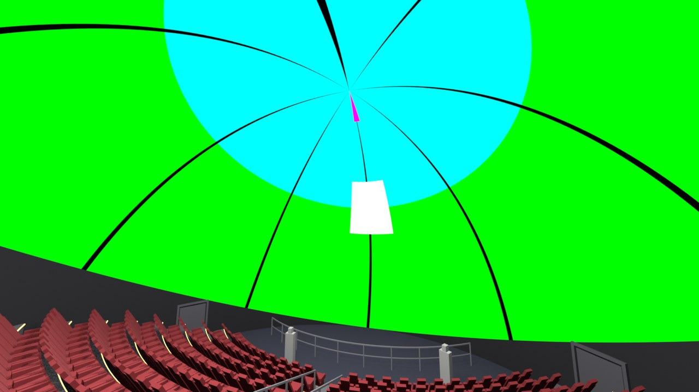
El Cine Domo de Maloka es una pantalla curva semiesférica de 180°, de 22 m de diámetro y 16 m de alto, con 314 butacas (06_Modelos/domos_colombia.json). Fue el primer teatro de formato gigante de Suramérica (tecnología Iwerks), y responde al esquema de los IMAX Dome (antes Omnimax): la cúpula no es horizontal como en un planetario, sino que está echada hacia adelante, y el público se sienta en una gradería empinada, toda mirando en la misma dirección, con la pantalla llenando el campo visual por delante y por encima.
Pantalla. Media esfera de 11 m de radio, inclinada hacia +X. El catálogo no trae la inclinación de Maloka (está en la lista de pendientes), así que se deduce de sus dos medidas: si el borde delantero de la pantalla toca el piso y lo más alto de la cúpula queda a 16 m, entonces 11 · (1 + sin θ) = 16, de donde θ = 27,0°. Es un valor típico de las salas IMAX Dome (entre 25° y 30°) y coincide con los 27° del Planetario de Medellín.
| Medida | Valor |
|---|---|
| Radio / diámetro de la pantalla | 11,00 m / 22,00 m |
| Inclinación | 27,0° hacia el frente (+X) |
| Centro de la esfera | (0, 0, 5,00 m) |
| Borde delantero de la pantalla | a nivel del piso, en x = +9,80 m |
| Borde trasero de la pantalla | a 10,00 m de altura, en x = −9,80 m |
| Punto más alto | 16,00 m |
| Planta (proyección del borde) | elipse de 19,60 m (frente-fondo) × 22,00 m |
| Butacas | 314, en 12 filas curvas con pasillo central de 1,2 m |
| Paso entre filas / contrahuella | 1,05 m / 0,42 m (grada tipo estadio) |
| Primera fila / última fila | x = +3,20 m a nivel 0 / x = −8,35 m a 4,62 m de altura |
| Butaca | 0,56 m de ancho, respaldo 0,85 m echado 30°, asiento 8° |
| Ojo de la cámara | fila 7, primera butaca a la derecha del pasillo, 1,20 m sobre el piso de la grada |
| Triángulos | 54 012 |
| Fila | x (m) | Piso (m) | Butacas |
|---|---|---|---|
| 1 | 3,20 | 0,00 | 24 |
| 2 | 2,15 | 0,42 | 26 |
| 3 | 1,10 | 0,84 | 28 |
| 4 | 0,05 | 1,26 | 30 |
| 5 | −1,00 | 1,68 | 32 |
| 6 | −2,05 | 2,10 | 32 |
| 7 | −3,10 | 2,52 | 32 |
| 8 | −4,15 | 2,94 | 30 |
| 9 | −5,20 | 3,36 | 28 |
| 10 | −6,25 | 3,78 | 26 |
| 11 | −7,30 | 4,20 | 20 |
| 12 | −8,35 | 4,62 | 6 |
Las filas son arcos con centro 16 m delante del centro del domo, así que se curvan suavemente hacia la pantalla. El número de butacas por fila no está escrito a mano: el generador llena cada arco con butacas de 0,60 m de paso hasta el muro (dejando 1 m de pasillo lateral) y agrega filas hacia atrás hasta llegar exactamente a 314. La última fila, contra la pared de fondo, queda con 6.
Además de las butacas: medio escalón por fila en el pasillo central (se sube de grada en dos pasos), pasamanos a 0,90 m a ambos lados del pasillo, una baranda de 1,05 m que separa el pasillo delantero de la pantalla, tiras LED ámbar en la nariz de cada grada y dos puertas en los costados, a la altura del pasillo delantero.
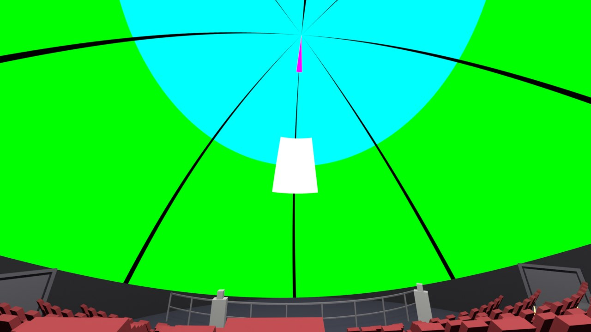
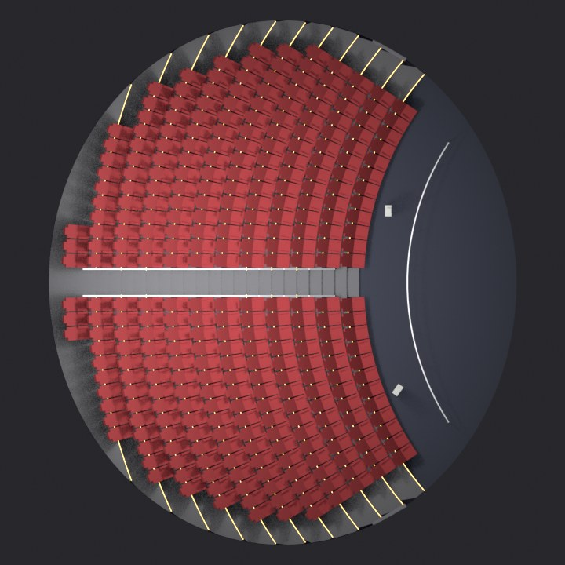
#3. Sala 90: domo frontal de pie
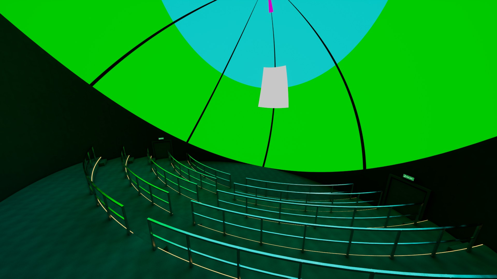
Es el esquema de los domos de museo y de parque temático en los que el público no se sienta: entra, se para frente a la pantalla y mira de frente, apoyado en una baranda. La pantalla está mucho más echada que en un cine domo (45°), de modo que su centro queda delante del público y no sobre su cabeza, y el piso se organiza en plataformas escalonadas para que las filas de atrás vean por encima de las de adelante.
| Medida | Valor |
|---|---|
| Radio / diámetro de la pantalla | 10,00 m / 20,00 m |
| Inclinación | 45° hacia el frente (+X) |
| Centro de la esfera | (0, 0, 7,07 m) |
| Borde delantero de la pantalla | a nivel del piso, en x = +7,07 m |
| Borde trasero de la pantalla | a 14,14 m de altura, en x = −7,07 m |
| Punto más alto | 17,07 m |
| Planta | elipse de 14,14 m (frente-fondo) × 20,00 m |
| Plataformas | 5, de 1,50 m de fondo (dos filas de gente de pie), contrahuella 0,45 m |
| Barandas | en el borde delantero de cada plataforma: pasamanos a 1,05 m, riel medio a 0,55 m, postes cada ~1,5 m |
| Ojo de la cámara | plataforma 3, 0,5 m detrás de su baranda, 1,60 m sobre el piso de la plataforma |
| Aforo de pie | unas 370 personas (estimado a 0,5 m² por persona, holgado) |
| Triángulos | 27 424 |
| Plataforma | Borde delantero x (m) | Piso (m) | Largo del borde (m) |
|---|---|---|---|
| 1 | 2,50 | 0,20 | 15,8 |
| 2 | 1,00 | 0,65 | 17,9 |
| 3 | −0,50 | 1,10 | 19,8 |
| 4 | −2,00 | 1,55 | 21,0 |
| 5 | −3,50 | 2,00 | 21,1 (llega hasta la pared de fondo) |
Cada baranda tiene tres aberturas: una central de 1,2 m y una contra cada muro de 0,9 m, con un medio escalón en cada una para subir de plataforma. Las tiras LED van en la nariz de cada plataforma. Delante de la primera plataforma queda una franja de piso libre, a nivel 0, a la que dan las dos puertas.
Desde el ojo de pie, el cuadro blanco del frente del patrón queda unos 20° por encima de la horizontal: la pantalla se mira de frente, sin levantar la cabeza.
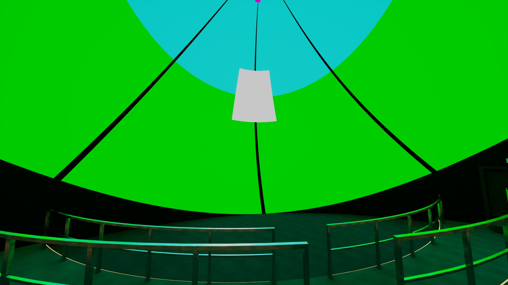
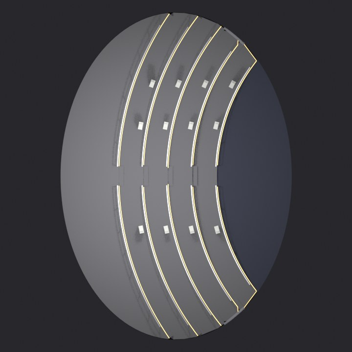
#4. Cómo se construye una sala frontal
Todo se deriva de tres números por sala (radio, inclinación y altura del borde delantero), definidos en SALAS_FRONTALES dentro del generador:
- La pantalla se construye como la media esfera del planetario, en su propio marco (polo en +Z, frente en +X) y con su UV, y después se inclina alrededor del eje Y para que el polo se eche hacia +X. El centro de la esfera queda a
z_borde_frente + radio · sin(inclinación), de modo que el punto más bajo del borde (el delantero) toca el piso. - La planta es la proyección del borde de la pantalla sobre el piso: una elipse de semiejes
radio · cos(inclinación)en X yradioen Y. - El muro (
SM_Muro) baja vertical desde cada punto del borde hasta el piso. Comparte los 128 vértices del borde con la pantalla, así que la sala cierra sin rendijas. En el frente mide casi cero; atrás es la pared alta donde iría la cabina de proyección (10 m en la sala 45, 14 m en la 90). - Gradas y plataformas son franjas en arco, con centro de curvatura delante de la pantalla, recortadas contra la elipse. Son sólidos cerrados desde el piso, así que no quedan huecos debajo.
Mallas del FBX (todas con nombres SM_*, una capa UV):
| Malla | Sala 45 | Sala 90 | Material |
|---|---|---|---|
SM_Domo | sí | sí | MI_Domo (compartido, el que alimenta Spout) |
SM_Muro, SM_Piso | sí | sí | M_Muro, M_Piso |
SM_Graderia / SM_Plataformas | gradería | plataformas | M_Grada |
SM_Butacas_01, SM_Butacas_02 | a cada lado del pasillo | no | M_Butaca |
SM_Barandas | pasamanos y baranda frontal | barandas de plataforma | M_Baranda |
SM_LucesPaso | sí | sí | M_LedPaso (emisivo) |
SM_Puerta_01, SM_Puerta_02 | sí | sí | M_Puerta |
Los materiales de las salas frontales son colores de trabajo pensados para que cada pieza se distinga en Unreal aunque la única luz sea la de la cúpula: piso oscuro azulado, grada gris medio, barandas de metal claro, butacas rojo tela, muro casi negro (como la pared de un domo real, que no debe reflejar la proyección) y LED ámbar emisivo. No llevan texturas horneadas.
En los renders aparecen también unos maniquíes de 1,75 m (objeto REF_Personas) para leer la escala. Están en el .blend pero no se exportan al FBX.
El generador escribe junto al FBX un JSON (02_Export/sala_domo_45.json, sala_domo_90.json) con las medidas de la pantalla, la lista de mallas, el material de cada una, los colores, la posición del ojo, la tabla de filas o plataformas y el resultado de la verificación del FBX. El importador de Unreal arma el nivel a partir de ese archivo.
#5. La UV de la cúpula
TouchDesigner manda por Spout (TD_Domo_Lab) un lienzo equirectangular 2:1 con la cúpula en la mitad superior: u = 0,5 es el frente, u = 0/1 la parte de atrás, v = 0,5 el horizonte y v = 1 el cénit. La cúpula de los tres modelos lleva una sola capa UV (canal 0) con esta fórmula, escrita a mano en uv_equirectangular():
U = azimut / 360 + 0,5 (módulo 1; costura detrás, en −X)
V = 0,5 + elevación / 180 (elevación desde el centro de la esfera)En el domo 180 la elevación se mide desde el horizonte real. En las salas frontales se mide en el marco propio de la pantalla: la UV se escribe antes de inclinarla y viaja con la malla. El "horizonte" de la UV (v = 0,5) es el borde de la pantalla y el "cénit" (v = 1) es su polo, que en la sala 45 está 27° delante de la vertical y en la 90, 45°. Es exactamente lo que recibe un domo inclinado real: un domemaster de 180° con el cénit en el polo de la pantalla y el frente abajo. El frente (u = 0,5) sigue en +X.
Con el patrón de prueba de TouchDesigner (verde v 0,5–0,75, cian v 0,75–1, cuadro blanco en u 0,5, v 0,75, marca magenta cerca del cénit, meridianos negros cada 45°), los renders muestran en las dos salas frontales el verde abajo y a los lados, el cian arriba, centrado en el polo de la pantalla, y el cuadro blanco al frente: a 18° sobre la horizontal en la sala 45 y a la altura del centro de la esfera (7 m) en la 90. No aparece rojo ni amarillo.
verificar_export_frontal() relee el FBX exportado y comprueba, en cada corrida: una sola capa UV, V de 0,500 a 1,000, el borde delantero (u 0,5, v 0,5) en +X y a nivel del piso, y el cuadro blanco (u 0,5, v 0,75) en +X. Si algo falla, el script termina con error. Última medición:
| Sala 45 | Sala 90 | |
|---|---|---|
| Capas UV | UVMap (una) | UVMap (una) |
| V del canal 0 | 0,500 a 1,000 | 0,500 a 1,000 |
Borde delantero u 0,5 v 0,5 | (9,79; 0; 0,00) m | (7,07; 0; 0,01) m |
Cuadro blanco u 0,5 v 0,75 | (10,46; 0; 8,39) m | (9,99; 0; 7,08) m |
La historia de esta fórmula: hasta el 17 de septiembre de 2026 el generador escribía V = elevación / 90 en una segunda capa (UVMap.001) que Unreal no leía; Unreal muestreaba la capa por defecto de primitive_uv_sphere_add, que resultó ser exactamente la fórmula de arriba. Desde entonces la cúpula se construye a mano con bmesh, con una sola capa y la fórmula explícita. La cúpula del domo 180 que genera el código de hoy es idéntica, vértice a vértice y UV a UV, a la de sala_domo.blend.
En TouchDesigner, las dos salas frontales se alimentan con Modelo = domo180: la pantalla es de 180° y la inclinación ya está en la geometría, así que no hace falta Pitch. Las opciones domo45 y domo90 del COMP DOMO siguen existiendo, pero describen los casquetes de antes (fisheye de 45° y 90°) y no corresponden a estas salas.
#6. Cómo regenerar
Blender, sin interfaz (C:\Program Files\Blender Foundation\Blender 5.2\blender.exe):
blender.exe -b -P 01_Blender\generar_sala_domo.py # domo 180, hornea texturas (~10 min)
blender.exe -b -P 01_Blender\generar_sala_domo.py -- --fov 45 # sala 45 (~20 s)
blender.exe -b -P 01_Blender\generar_sala_domo.py -- --fov 90 # sala 90 (~20 s)Cada corrida de una sala frontal deja el .blend, el FBX, el GLB, el JSON y tres renders: vista_planta_cenital_N.png, vista_general_perspectiva_N.png y vista_desde_butaca_45.png o vista_de_pie_90.png. La cúpula de los renders lleva el patrón de prueba (una imagen generada en el script con las mismas reglas que 00_TouchDesigner/shaders/patron.frag), que se aplica después de exportar para que el FBX no arrastre la imagen.
Unreal, headless y con el editor cerrado:
03_Unreal\importar_sala.ps1 -Fov 45
03_Unreal\importar_sala.ps1 -Fov 45 -ScriptName conectar_spout.py
03_Unreal\importar_sala.ps1 -Fov 90
03_Unreal\importar_sala.ps1 -Fov 90 -ScriptName conectar_spout.pyCon DOMO_FOV = 45 o 90, el importador:
- Lee el JSON de la sala (si no existe, se detiene y pide correr Blender).
- Vacía
/Game/Sala/Domo_45(o_90), para que no queden las mallas del casquete anterior, e importa el FBX ahí, sin materiales y sin colisión convexa automática. A cada malla le pone colisión compleja (Use Complex Collision As Simple), para que se pueda caminar por gradas y plataformas sin quedar encerrado en el casco convexo de la cúpula. - Crea los materiales de la sala en
/Game/Sala/Domo_45/Materials(recreados en cada corrida desde el JSON) y le pone a la cúpula elMI_Domocompartido de/Game/Sala/Materials. - Limpia el nivel
/Game/Maps/DomoVR_45, coloca las mallas, el Post Process Volume, el SkyLight de captura (en estas salas sin negro en el hemisferio inferior, porque la pantalla baja hasta el piso), un PlayerStart y una CameraActorCamara_Ojoen el ojo del espectador, mirando al frente. El PlayerStart sigue la convención del 180: su ubicación es la altura de ojo. - Guarda solo la carpeta del modelo y su propio mapa.
DomoVR.umapno se toca.
El paso de coordenadas de Blender a Unreal invierte el eje Y (Unreal es de mano izquierda). El importador no lo supone: lo mide con la puerta 1, que en Blender está en +Y, y lo registra en el log. Medido el 18 de septiembre de 2026: signo −1. Con eso, el ojo quedó en (−363, −92, 372) cm en la sala 45 y en (−93, −145, 270) cm en la 90.
conectar_spout.py vuelve a correr la importación completa (importa el módulo importar_sala) y después coloca el SpoutDomeReceiver del nivel apuntando a MI_Domo y a Domo_Actor. Cada pasada de las dos salas tardó unos pocos minutos con el editor cerrado, y el commandlet terminó con código 0.
#7. Cómo agregar una sala nueva
Una sala frontal nueva es una entrada más en SALAS_FRONTALES (radio, inclinación o altura de pantalla, tipo butacas o de_pie, parámetros de gradería o plataformas, fila o plataforma del ojo) y su clave numérica en la comprobación ES_SALA_FRONTAL del importador. Para un domo real del catálogo 06_Modelos/domos_colombia.json:
diametro_m / 2es el radio.inclinacion_deg, si el catálogo la trae (Medellín, 27°), va directo; si no, se puede deducir de la altura de la pantalla como se hizo con Maloka.aforoestotal_butacas. El generador se detiene con un mensaje claro si la gradería llega a la pared del fondo sin completar el aforo; en ese caso hay que bajar el paso entre filas, estrechar el pasillo o subir el radio.
Para un casquete horizontal de otro ángulo sigue valiendo --fov N, que genera la sala del planetario con la cúpula recortada.
#8. Qué falta
- Verificación visual en Unreal de los niveles
DomoVR_45yDomoVR_90con TouchDesigner endomo180y el patrón. La geometría, la UV y la posición del ojo están verificadas en el FBX y en el log de importación, y los renders de Blender muestran el patrón bien orientado; falta abrir el editor y mirar. - Datos de Maloka sin confirmar: la inclinación (27° es deducida), el tipo de butaca, el paso entre filas y la posición de la cabina. La gradería es la típica de una sala IMAX Dome, no un levantamiento de la sala real.
- Cabina de proyección: la pared de fondo de las dos salas está lista para recibirla, pero no se modeló.
- Menú de TouchDesigner:
domo45ydomo90siguen describiendo los casquetes viejos. Habría que renombrarlos o agregar una nota en el COMP para que no se usen con estas salas. - Radio y aforo del domo 180 siguen siendo constantes del generador (ver la sección anterior para las salas frontales).
06_Modelos/Domos_de_Colombia.md
Domos de Colombia
Fichas de planetarios y cines domo reales, con sus datos y fuentes
Investigación web de partida sobre las salas de domo (planetarios y cines domo) que existen o están en construcción en Colombia, hecha para alimentar el proyecto Domo_VR_Unreal. Los datos numéricos que no tienen fuente confiable quedan como null en el JSON y están listados en el campo pendiente de cada sala. Nada de esto reemplaza una medición en sitio.
Fuente de datos completa (estructurada, para código/scripts): domos_colombia.json.
Fecha de esta investigación: 17 de septiembre de 2026.
#Tabla resumen
| Sala | Ciudad | Operador | Diámetro (m) | Inclinación (°) | FOV vertical (°) | Aforo | Proyección | Año | Señal en vivo |
|---|---|---|---|---|---|---|---|---|---|
| Planetario de Bogotá | Bogotá | Idartes | 23 | ? | ? | 375 | Digistar 7 + 2× Christie Griffyn 4K32-RGB, 4K | 1969 / renov. 2021 | Sí (Domo Vivo) |
| Planetario de Medellín "Jesús Emilio Ramírez" | Medellín | Parque Explora | 15 | 27 | 160 | 110 | Sky-Skan Definiti (Uniview), 4K | 1984 / renov. 2004-2012 | ? |
| Cine Domo de Maloka | Bogotá | Corporación Maloka | 22 | ? | 180 | 314 | 5 proyectores 4K, 30.000 lúmenes | fin. de los 90 / renov. 2017-2024 | ? |
| Planetario Combarranquilla | Barranquilla | Combarranquilla | ? | ? | ? | ? | Digitarium Zeta (sin confirmar en cuál sala) | 1995 | ? |
| MIMAS (domo móvil Combarranquilla) | Barranquilla (itinerante) | Combarranquilla | 5 | ? | ? | ? | digital, marca sin confirmar | 2025 | ? |
| Planetario del Centro de Ciencia, Arte y Tecnología (San Fernando) | Cali | U. Antonio José Camacho | 15 | ? | ? | 120 | 5 proyectores láser 4K | 2024/2025 | ? |
| Planetario de EMAVI | Cali | EMAVI / FAC | 8 | ? | ? | 60 | proyector óptico-mecánico Zeiss (1967) | 1967/1972 | ? |
| Planetario y Observatorio UTP | Pereira | Universidad Tecnológica de Pereira | ? | ? | ? | 76 | fulldome, marca sin confirmar | ~1988 (sin confirmar) | ? |
| Planetario del Centro de Ciencias U. de Nariño | Pasto | Universidad de Nariño | ? | ? | ? | ? | sin definir | EN CONSTRUCCIÓN | ? |
| Planetario Móvil OAM (Samoga) | Manizales | U. Nacional sede Manizales | 4,8 | ? | ? | 25 | video, marca sin confirmar | ? | ? |
? en la tabla significa dato sin fuente confiable (null en el JSON); ver el campo pendiente de cada sala para el detalle exacto de qué falta.
#Fichas por sala
#Planetario de Bogotá
- Cúpula de 23 m, aforo reportado de 375 personas (una fuente dice 376).
- Sistema de proyección Digistar 7 (Evans & Sutherland) con dos proyectores láser Christie Griffyn 4K32-RGB de 34.000 lúmenes cada uno, resolución 4K nativa. Reemplazó en 2021 un proyector óptico-mecánico Zeiss de 52 años.
- Pantalla Nanoseam (sin costuras visibles) de 420 paneles.
- Tiene un programa "Domo Vivo" con conciertos y shows en vivo en formato fulldome 4K, lo que confirma capacidad de señal en vivo (protocolo exacto sin publicar).
- Desde 2025 Idartes anunció una transformación del domo para subir el aforo a 700 personas y dejar el esquema circular tradicional de butacas; hay que verificar en qué quedó esa obra.
- Fuentes: Historia — Planetario de Bogotá, Digital AV Magazine, renovación Christie 2021, Idartes, inauguración nuevo sistema, Idartes, transformación del domo, Pulzo, 2026.
#Planetario de Medellín "Jesús Emilio Ramírez" (Parque Explora)
- Cúpula de 15 m de diámetro, inclinada 27°, en paneles de aluminio microperforado.
- Aforo de 110 personas por función.
- Sistema Sky-Skan Definiti sobre software Uniview, 4K, sonido 7.1.
- Abrió en 1984; las fuentes no coinciden si la renovación digital fue en 2004 o en 2012.
- Tiene además un domo móvil itinerante (unidad separada, sin sala fija) para experiencias fuera de sede.
- Fuentes: Wikipedia, Planetario de Medellín, sitio oficial, domo planetario, El Colombiano, domo móvil.
#Cine Domo de Maloka
- Cúpula/pantalla de 22 m de diámetro, 16 m de altura, pantalla curva de 180° (fov vertical confirmado).
- Aforo de 314 personas (una fuente de 2017 dice 309; se usó 314 por ser el dato más reciente, de la reapertura de junio de 2024).
- 5 proyectores de alta definición, 30.000 lúmenes, resolución reportada como 4K en 2024, aunque una renovación de 2017 hablaba de proyectores Christie Mirage 304K y 8K; no se pudo resolver la contradicción con fuentes abiertas.
- Es el primer teatro de formato gigante de Suramérica (tecnología Iwerks original).
- Fuentes: Cine Domo — Maloka, Regresa el Cine Domo, 2024, AVI Latinoamérica, renovación 8K 2017, El Tiempo, reinauguración.
#Planetario Combarranquilla
- Abrió el 25 de mayo de 1995 (primera función pública el 7 de junio de ese año), con ampliación de sala museográfica interactiva en 2014.
- No se encontraron especificaciones técnicas públicas confiables del domo fijo (diámetro, aforo, inclinación, pantalla). Se menciona un proyector estelar digital Digitarium Zeta, pero no queda claro si corresponde a la sala principal o a otra sala.
- Cuenta con un domo móvil inflable propio llamado MIMAS (ficha separada abajo).
- Fuentes: Tu Guía Combarranquilla, 30 años, Combarranquilla, Ciencia y Cultura.
#MIMAS (domo móvil de Combarranquilla)
- Domo inflable portátil de 5 m de diámetro, itinerante por la región Caribe, lanzado en 2025.
- No es sala fija; no se encontraron datos de aforo ni de marca de proyección.
- Fuentes: Rueda la Economía, 2025, Tu Guía Combarranquilla, MIMAS.
#Planetario del Centro de Ciencia, Arte y Tecnología (Parque Tecnológico de Innovación San Fernando, Cali)
- Domo de 15 m, aforo de 120 personas, 5 proyectores láser 4K con sonido envolvente (marca sin confirmar).
- Abrió para colegios en octubre de 2024 y al público general en abril de 2025.
- Operado inicialmente por la Universidad Antonio José Camacho, con planes de pasar a un ente mixto público-privado.
- Es un proyecto distinto y mucho más nuevo que el histórico Planetario de EMAVI (ver siguiente ficha); ambos están en Cali pero no son la misma sala.
- Fuentes: El País, fotos del centro, Alcaldía de Cali, llegada del domo, Alcaldía de Cali, Petronio bajo el planetario.
#Planetario de EMAVI (Escuela Militar de Aviación "Marco Fidel Suárez", Cali)
- Considerado el primer planetario de Colombia: proyector óptico-mecánico Carl Zeiss adquirido en 1967, abierto al público general en octubre de 1972.
- Cúpula de 8 m de diámetro, aforo máximo de 60 personas por función.
- Declarado Bien de Interés Cultural por el Concejo de Cali.
- Al estar dentro de una instalación militar, no quedó claro en fuentes abiertas si sigue programando funciones públicas regulares; se recomienda confirmar directamente con EMAVI.
- Fuentes: EMAVI, patrimonio arquitectónico, Fuerza Aeroespacial Colombiana, Colombia.com.
#Planetario y Observatorio Astronómico UTP (Pereira)
- Aforo de 76 personas; diámetro de cúpula, inclinación y marca de proyección sin confirmar en fuentes públicas.
- Ofrece experiencias fulldome (ej. "Colombia Tierra de Gigantes") y visita al observatorio del grupo Alfa Orión.
- Una fuente de 2008 dice que el planetario llevaba entonces 20 años, lo que ubicaría la apertura hacia 1988, sin confirmar.
- Fuentes: Comunicaciones UTP, agosto, Gonzalo Duque, 2008, Planetario UTP, Parque de Ciencia.
#Planetario del Centro de Ciencias de la Universidad de Nariño (Pasto)
- Todavía no está abierto al público. Es un planetario digital dentro del Centro de Ciencias de la Universidad de Nariño (6.403 m², junto a un telescopio de 1 m de apertura), en construcción.
- Según fuentes de 2025, se esperaba terminar el edificio en año y medio, con 2027 como el año en que empezaría el equipamiento tecnológico y la curaduría de contenidos (donde entraría el domo).
- No tiene todavía diámetro, aforo ni sistema de proyección definidos en fuentes públicas.
- Fuentes: Impacto TIC, Diario del Sur, Universidad de Nariño.
#Planetario Móvil OAM (Observatorio Astronómico de Manizales / Museo Samoga, Universidad Nacional sede Manizales)
- Domo hemisférico portátil e inflable, oscuro, de 3,2 m de alto por 4,8 m de diámetro, aforo de 25 personas.
- No es sala fija: según las fuentes consultadas, Manizales no tiene un planetario de domo fijo construido; un planetario fijo en Samoga aparece solo mencionado como proyecto, sin evidencia de haberse ejecutado.
- Requiere un espacio cubierto de 3,5 m de alto por 6 m por 7 m para instalarse.
- Fuentes: OAM, planetario móvil, Museo Samoga.
#Salas descartadas o sin confirmar como reales
- "Planetario de Cali" genérico: el nombre puede confundirse con dos salas distintas y reales que sí se documentaron aquí: el histórico Planetario de EMAVI (1967/1972, dentro de la Escuela Militar de Aviación) y el nuevo planetario del Centro de Ciencia, Arte y Tecnología en el Parque Tecnológico San Fernando (2024/2025). No hay una tercera sala separada con ese nombre genérico confirmada.
- Domo Digital del Museo de Ciencias de la Universidad Nacional (sede Bogotá): no se encontró evidencia de que exista una sala de domo fija con ese nombre en la sede Bogotá de la Universidad Nacional; toda la evidencia encontrada sobre "domo" y "Universidad Nacional" apunta al planetario móvil OAM de la sede Manizales (incluido arriba). Queda como no confirmado; si existe, falta encontrar la fuente.
- Planetario de Manizales (sala fija): no se encontró evidencia de que exista, más allá del planetario móvil OAM y de una mención a un planetario fijo "proyectado" para el Museo Samoga que no se pudo confirmar como construido.
#Cómo corregir o agregar una sala
Este documento y el archivo domos_colombia.json están pensados para corregirse por pull request, con estas reglas simples:
- Edita el JSON, no solo esta tabla. La tabla y las fichas de este Markdown deben quedar consistentes con
domos_colombia.json, que es la fuente de verdad para cualquier script o modelo 3D que consuma estos datos. - Un PR por sala. Si vas a corregir o agregar datos de una sala, hazlo en un pull request separado del resto, para que sea fácil de revisar.
- Todo dato numérico necesita fuente o una nota explícita de medida en sala. Si agregas o cambias un campo como
diametro_m,inclinacion_deg,fov_vertical_degoaforo: - agrega la URL de la fuente en la listafuentesde esa sala, o - si lo mediste tú mismo en el sitio, dilo explícitamente ennotas(por ejemplo: "diámetro medido en sitio el 2026-10-01 con cinta métrica, no hay fuente pública") y marcaverificado_en_sala: true. - Nunca dejes un número sin fuente ni nota: si no tienes ninguna de las dos, dejá el campo ennully agrégalo a la listapendiente. - Quita el campo de
pendientecuando ya tenga fuente o verificación en sala. - Valida el JSON antes de mandar el PR: ``
bash python -m json.tool 06_Modelos/domos_colombia.json`` Si este comando falla, el PR no se puede aceptar. - Si una sala cerró, cambió de operador, o descubres que una sala listada aquí en realidad no existe (como pasó con "Planetario de Cali" genérico), dilo en
notasen vez de borrar la entrada sin explicación, para que quede el rastro de la corrección.
04_Docs/Unreal_sala_domo.md
Bitacora: sala de domo en Unreal
El registro cronologico y completo de como se construyo la sala (bitacora larga)
Este documento explica cómo está armado el proyecto de Unreal que visualiza en realidad virtual la sala de domo tipo planetario, qué hace cada script, cómo se corre la importación de la geometría que genera el otro agente en Blender, cómo se entra en VR desde este equipo, y cómo quedó armado (y qué falta a mano) el puente en vivo con TouchDesigner por Spout.
#0. Aviso operativo importante
El editor de DomoVR puede estar abierto con interfaz gráfica en este mismo equipo. Mientras el editor esté abierto, no correr importar_sala.ps1 (ni UnrealEditor-Cmd.exe a mano) contra el mismo .uproject: dos procesos de Unreal sobre el mismo proyecto se pelean por los mismos archivos de Saved//Intermediate/ y por el .umap. Con el editor abierto, la importación se corre desde dentro de él (por ejemplo desde la consola de Python del editor, pegando el contenido de importar_sala.py, o con un botón que la llame). El script está escrito para poder correrse así sin cambios: no depende de nada que solo exista en modo headless.
#1. Dónde está todo
Domo_VR_Unreal/
01_Blender/ <- del otro agente, no se toca desde aquí
02_Export/ <- del otro agente; aquí llegan sala_domo.fbx y texturas/
texturas/ <- mapas PBR horneados (color, rugosidad, normal)
03_Unreal/
DomoVR/
DomoVR.uproject
Config/
DefaultEngine.ini
DefaultGame.ini
Source/ <- modulo C++ minimo, vacio, solo para compilar plugins
DomoVR.Target.cs
DomoVREditor.Target.cs
DomoVR/
DomoVR.Build.cs, DomoVR.h, DomoVR.cpp
Plugins/
SpoutPlugin/ <- github.com/kessoning/Spout-UE5, rama 5.8_fix
Content/
Sala/
Materials/ <- M_Domo, MI_Domo, M_Muro, M_Piso, M_Butaca,
M_Tarima, M_Control, M_Puerta
Textures/ <- texturas horneadas ya importadas (T_<material>_<tipo>)
BP_SpoutDomoReceiver <- recibe Spout y alimenta MI_Domo (ver seccion 8)
Maps/
DomoVR.umap
DomoVR_backup_preCpp/ <- copia de seguridad de antes de agregar C++/Spout
importar_sala.py <- script de Python de Unreal (geometria, materiales, nivel)
conectar_spout.py <- script hermano: puente Spout -> MI_Domo (ver seccion 8)
abrir_proyecto.ps1 <- abre el editor grafico
importar_sala.ps1 <- corre la importacion headless
04_Docs/
Unreal_sala_domo.md <- este archivo
05_Preview/ <- del otro agente, no se toca desde aquí#2. El proyecto (DomoVR.uproject)
El proyecto empezó solo Blueprint (sin módulos de código C++ propios). Sigue siéndolo en cuanto a lógica de juego — toda la sala, sus materiales y su nivel se arman por Python/datos, no por código — pero desde que se agregó el puente de Spout (sección 8) sí tiene un módulo C++ mínimo (Source/DomoVR/), con una sola clase propia (ASpoutDomeReceiver), y por lo tanto necesita compilarse con Visual Studio/UnrealBuildTool antes de poder abrirse — ya no alcanza con doble clic al .uproject la primera vez o después de tocar el código; ver sección 8.3 para el comando exacto de compilación.
Plugins habilitados en el .uproject:
- PythonScriptPlugin — para poder correr
importar_sala.pyyconectar_spout.py. - EditorScriptingUtilities — subsistemas de edición por script (
EditorActorSubsystem,LevelEditorSubsystem, etc.) que usan los scripts. - OpenXR — la ruta de VR. En Unreal 5.8 ya no existe un plugin aparte "SteamVR": SteamVR actúa como runtime OpenXR del sistema, y Unreal habla con él a través del plugin OpenXR estándar del motor. No hace falta ni existe ningún plugin adicional de terceros que instalar.
- SpoutPlugin — el puente con TouchDesigner; ver sección 8.
- ModelContextProtocol y EditorToolset — control del editor por MCP para Claude Code; ver sección 9.
EngineAssociation queda en "5.8". Como el motor está instalado en C:\Program Files\Epic Games\UE_5.8\ (misma convención que un install del Launcher), esto alcanza para que UnrealEditor(-Cmd).exe de esa carpeta abra el proyecto sin pedir conversión de versión.
#Config/DefaultEngine.ini
r.DynamicGlobalIlluminationMethod=1yr.ReflectionMethod=1— Lumen para iluminación global y para reflejos (los valores del enum de Project Settings;1es Lumen en ambos casos).r.GenerateMeshDistanceFields=True— campos de distancia disponibles para Lumen.r.Nanite.ProjectEnabled=True— deja Nanite disponible a nivel de proyecto (necesario para poder activarlo algún día por malla). Hoy ninguna malla lo usa: ver la constanteUSAR_NANITEenimportar_sala.pyy el porqué más abajo.r.DefaultFeature.AutoExposure=False— la exposición automática queda apagada como valor por defecto del proyecto, coherente con el Post Process Volume de exposición fija que armaimportar_sala.py.DefaultGraphicsRHI=DefaultGraphicsRHI_DX12bajo[/Script/WindowsTargetPlatform.WindowsTargetSettings]— DX12 como RHI por defecto, apto para Lumen con trazado por hardware en la RTX 3090.bStartInVR=TrueenGeneralProjectSettings— al lanzar el juego/PIE intenta arrancar directo en VR si hay un HMD disponible.vr.InstancedStereo=1en[ConsoleVariables]— estéreo instanciado (dibuja los dos ojos en menos passes), el ajuste estándar de rendimiento para HMDs binoculares como el Quest.
Al principio no se definió un mapa de inicio (EditorStartupMap/ GameDefaultMap) a propósito: así el proyecto abría limpio incluso antes de que existiera /Game/Maps/DomoVR, que es lo que hacía falta para verificar el proyecto antes de tener el FBX. Ahora que el nivel existe de verdad, se puso:
[/Script/EngineSettings.GameMapsSettings]
EditorStartupMap=/Game/Maps/DomoVR.DomoVR
GameDefaultMap=/Game/Maps/DomoVR.DomoVRSin esto, un editor recién abierto (sobre todo si viene de una serie de corridas headless, que no dejan "último nivel abierto" en el sentido en que lo hace la interfaz gráfica) cae en un nivel Untitled vacío en vez de mostrar la sala — se comprobó exactamente ese comportamiento antes de poner esta configuración.
#3. El contrato de geometría (versión final)
La sala es un cilindro cerrado de 11.5 m de radio, piso plano (sin grada), sin ningún volumen exterior — todo lo que hace falta vive dentro de ese cilindro:
SM_Domo— cúpula, normales hacia adentro, UV con U = azimut y V = elevación. Emisivo, sin textura horneada (la imagen la pone TouchDesigner en vivo).SM_Muro,SM_Piso— el cilindro y el piso.SM_Tarima— cilindro central de 3 m de diámetro x 1 m de alto, en el origen. ElPlayerStartno puede coincidir con este volumen.SM_Control— sector de 5 m de ancho contra el muro (lado −X), sin butacas: el piso marcado y el mobiliario (consola, mesa) de un puesto de operación dentro de la misma sala, flanqueado por dos de las cuatro puertas.SM_Butacas_01…SM_Butacas_06— 6 cuñas radiales (como porciones de pizza) alrededor de la tarima, 60 butacas reclinables cada una (360 en total), repartidas en unos 335° (no los 360° completos, por el sector de control). Los respaldos van muy reclinados: el espectador queda casi acostado mirando al cenit.SM_Puerta_01…SM_Puerta_04— cuatro puertas con hueco real en el muro cilíndrico.
Materiales: M_Domo, M_Muro, M_Piso, M_Butaca, M_Tarima, M_Control, M_Puerta. Escala: 1 m de Blender = 100 uu de Unreal (el FBX ya viene así).
Texturas PBR horneadas en 02_Export/texturas/ (color base, rugosidad y normal, 2048×2048) para M_Piso, M_Muro, M_Butaca, M_Tarima y M_Puerta. M_Domo y M_Control no llevan textura horneada — el domo porque es puramente emisivo/paramétrico para recibir la señal en vivo, y M_Control porque no vino en la lista de mapas que se van a hornear (queda con un color plano oscuro y mate, igual que antes).
#4. importar_sala.py: qué hace y por qué
Se corre así (con el editor cerrado; ver aviso de la sección 0 si está abierto):
UnrealEditor-Cmd.exe <ruta>\DomoVR.uproject -run=pythonscript -script=<ruta>\importar_sala.py -unattended -nosplash -nosound(el script importar_sala.ps1 arma ese comando con las rutas correctas; ver sección 5).
Pasos que ejecuta, en orden:
- Importa
02_Export/sala_domo.fbxa/Game/Sala/usando el importador clásico de FBX (unreal.FbxFactory+unreal.FbxImportUI, no el framework Interchange), concombine_meshes = Falsepara que cada objeto del FBX quede como su propio Static Mesh, conbuild_nanitecontrolado por la constanteUSAR_NANITE(hoy enFalse; ver el recuadro "Nanite: encendido o apagado" más abajo).
Si el archivo todavía no existe, el script no falla: registra un aviso y sigue con el resto (materiales, nivel, iluminación, punto de partida). Esto es justamente lo que permitió verificar el proyecto y el script antes de que el otro agente terminara de generar la geometría. Si el archivo sí existe pero la importación no devuelve ningún Static Mesh, eso ya no se trata como "archivo faltante": el script para con una excepción, porque es un fallo real de importación que hay que mirar en el log de FBXImport.
Nombres reales de los assets importados — atención: en una corrida real de prueba contra un sala_domo.fbx anterior, los Static Mesh quedaron nombrados sala_domo_SM_Domo, sala_domo_SM_Muro, etc. (con el nombre del archivo FBX antepuesto), no exactamente SM_Domo como dice el contrato al pie de la letra. Esto es un comportamiento del importador de FBX de Unreal cuando el nodo/objeto de origen no tiene un nombre único dentro de la escena; probablemente Blender está agrupando los objetos bajo un nodo o colección llamada sala_domo. Para no depender de que esto se corrija del lado de Blender, importar_sala.py resuelve los nombres por sufijo (_nombre_canonico_de_malla): acepta tanto SM_Domo como algo_SM_Domo. Lo mismo aplica a las variantes de butacas/puertas que no calcen con el patrón esperado: quedan registradas en los avisos en vez de perderse en silencio.
- Busca e importa las texturas PBR de
02_Export/texturas/paraM_Piso,M_Muro,M_Butaca,M_TarimayM_Puerta. Como todavía no se conoce la convención de nombres exacta que va a usar el otro agente, la búsqueda es flexible: para cada material, busca un archivo cuyo nombre contenga el nombre del material (sin el prefijoM_) y algún sinónimo del tipo de mapa (basecolor/albedo/diffuse/color,roughness/rough,normal/nrm). Si no encuentra alguno, ese material cae a un color plano de respaldo en vez de fallar. Al importar cada textura: - Base color: se deja con los valores por defecto (sRGB encendido): es una textura de color real. - Rugosidad:compression_settings = TC_Masksysrgb = False— es un mapa de datos, no de color; dejarle sRGB encendido es el error clásico que arruina los valores de rugosidad. - Normal:compression_settings = TC_Normalmapysrgb = False— así queda marcada como mapa de normales de verdad, no como una textura de color más.
- Crea los materiales en
/Game/Sala/Materials/: -M_Domo: shading model Unlit (no recibe ni reacciona a luces; solo muestra lo que se le ponga en el emisivo, que es exactamente lo que se necesita para una superficie de proyección). Tiene un nodoTextureSampleParameter2Dcon el parámetroSpoutTextureconectado a Emissive Color, con una textura de grilla del propio motor (/Engine/EngineMaterials/T_Default_Material_Grid_M) como marcador de posición — útil además para comprobar a ojo el mapeo UV azimut/elevación del domo apenas se vea en el visor. No usa ningún mapa horneado. Se crea tambiénMI_Domo, una Material Instance conM_Domocomo padre, que es la que de verdad se asigna a la malla del domo (ver sección 8, pendientes de Spout). -M_Muro,M_Piso,M_Butaca,M_Tarima,M_Puerta: Default Lit; si hay textura horneada la usan (color base → Base Color, rugosidad → Roughness por el canal R, normal → Normal), y si no, caen a un color plano oscuro y mate (parámetrosColor/Roughnessexpuestos, para poder variarlos por Material Instance sin duplicar el material). El metálico siempre queda en una constante 0: no hay mapas metálicos en el contrato. -M_Control: mismo esquema que los anteriores, pero como no vino en la lista de mapas a hornear, siempre cae al color plano de respaldo (gris oscuro neutro, algo menos mate que las paredes — es un puesto de trabajo, no la superficie de proyección).
- Arma el nivel
/Game/Maps/DomoVR: - Coloca un actor por cada malla reconocida usando la transformación que ya trae el FBX. - Quita cualquierSkyLight,DirectionalLight,ExponentialHeightFogoSkyAtmosphereque el nivel pudiera traer: la única fuente de luz relevante en la sala debe ser la emisión deM_Domo. - Crea unPostProcessVolumecon extensión infinita (Unbound) y exposición manual y fija: método de auto-exposición enManualcon los overrides de bias/brillo mínimo/máximo activados. Con exposición automática, la cámara reaccionaría a la propia imagen proyectada sobre la cúpula y arruinaría la lectura del contenido. Al serUnboundno depende del tamaño de la sala ni de que haya o no un volumen exterior. - Coloca unPlayerStarta 400 cm del centro (fuera del radio de 150 cm deSM_Tarima, hacia +X, es decir del lado opuesto al sector de control que está en −X) y a 70 cm de altura sobre el piso. Ambos números son una aproximación de trabajo, no datos medidos: con el piso plano y los respaldos casi acostado mirando al cenit, la altura de ojo es bastante más baja que la de alguien sentado erguido (~120 cm) o incluso que la de alguien apenas reclinado (~105 cm, la estimación de una versión anterior de este mismo script, de cuando los respaldos todavía no eran tan extremos). Hay que ajustar la posición y la altura con las coordenadas reales de las butacas apenas lleguen.
- Guarda todo: las texturas, los materiales, el contenido de
/Game/Sala/y el mapa.
- Imprime un resumen al final (mallas importadas, mallas que faltaron, texturas importadas, materiales creados, actores colocados, avisos). Los mensajes de progreso del script salen como
Warningen el log (con el prefijo[importar_sala]), no comoDisplay: en las corridas de prueba, los mensajesDisplayde la categoríaLogPythonno siempre llegaban a la consola en modo-run=pythonscript -unattended, mientras que losWarningsí, siempre. Por eso se usó ese nivel a propósito para garantizar que el resumen se vea.
#Idempotencia: se puede correr las veces que haga falta
El script es la fuente de verdad de sus propios assets. Cada material, textura e instancia de material se crea con un helper (crear_asset) que primero borra el asset si ya existía en esa ruta, y nunca sigue adelante con un None: si create_asset (o load_asset, o spawn_actor_from_class, etc.) devuelve algo vacío, el script para de inmediato con una excepción que dice qué asset y qué ruta fallaron. El nivel se trata distinto: si /Game/Maps/DomoVR ya existe, no se borra ni se recrea (es más delicado si el editor lo tiene abierto); se carga y se limpia de actores (destroy_actors sobre todo lo que haya) antes de reconstruirlo desde cero. La importación del FBX ya traía esto resuelto con replace_existing = True.
Esto se descubrió en la práctica, no en el papel: una corrida de prueba sobre materiales que ya existían hizo que create_asset devolviera None para M_Domo, y el script siguió una línea más abajo llamando material.set_editor_property(...) sobre ese None, reventando con un AttributeError en vez de un error claro. El punto exacto era _material_domo_emisivo() (hoy reescrito para usar crear_asset, que falla en el sitio correcto con el mensaje correcto).
#La colocación de la geometría en el nivel (y por qué falló una vez)
Una corrida headless real (con las 15 mallas y las texturas ya importadas correctamente) dejó el mapa /Game/Maps/DomoVR sin geometría: las 15 llamadas a colocar una malla devolvieron None, y el script las registró como aviso y siguió, terminando con código de salida 0 como si hubiera salido bien. Eso era justamente el problema — un import que no coloca nada no debería reportar éxito — y además había que entender la causa de raíz en vez de tantear a ciegas.
Causa, confirmada leyendo el motor (no adivinada): la función que se usaba, EditorActorSubsystem.spawn_actor_from_object(mesh, ...) (y su equivalente viejo EditorLevelLibrary.spawn_actor_from_object, que llama literalmente a la misma subrutina), resuelve qué actor crear a través del sistema de colocación de assets de la interfaz del editor (FLevelEditorViewportClient::TryPlacingActorFromObject → TryPlacingAssetObject, en Engine/Source/Editor/UnrealEd/Private/LevelEditorViewport.cpp). Ese sistema es el que usa el editor cuando arrastrás un asset del Content Browser a un viewport, y necesita un viewport de Level Editor activo para decidir dónde y cómo colocarlo. Un commandlet lanzado con -run=pythonscript no abre esa interfaz (no hay ventana, no hay viewport): la función interna llega a Actors.Num() == 0 y devuelve un array vacío con solo un Warning en el log ("No actor was spawned"), no una excepción — de ahí que Python reciba None en silencio, 15 veces seguidas, sin que nada "explote".
La prueba de que el diagnóstico es correcto está en la misma corrida: el PostProcessVolume y el PlayerStart sí se colocaron bien, y esos dos se crean con spawn_actor_from_class (instanciar una clase de actor), no con spawn_actor_from_object (colocar un asset). Instanciar una clase es un camino más simple, dentro de la misma subrutina interna, que no necesita resolver "qué factory de colocación le corresponde a este asset" — y esa resolución es justo la parte que depende del viewport.
Arreglo: colocar_geometria() ya no llama a spawn_actor_from_object. En su lugar, por cada malla:
- Crea un
AStaticMeshActorvacío conspawn_actor_from_class(el camino que ya se demostró que funciona headless). - Le asigna la malla a mano:
actor.static_mesh_component.set_static_mesh(mesh)(UStaticMeshComponent.SetStaticMeshes una función normal, sin ninguna dependencia de interfaz — solo cambia qué malla renderiza el componente).
Con esto el resultado final es el mismo (un AStaticMeshActor por cada pieza, en la posición que ya trae horneada el FBX), pero sin pasar por el sistema de colocación interactivo. Además, ahora colocar_geometria() junta cualquier malla que falle en cualquiera de esos dos pasos y, si la lista no queda vacía, para el script con una excepción que nombra las mallas afectadas — igual que se hizo con create_asset para los materiales: ya no hay forma de que "no se colocó nada" termine reportado como éxito.
Esto último no se pudo volver a correr contra el proyecto real (el editor gráfico estaba abierto — ver aviso de la sección 0 — y no se podía lanzar un commandlet headless encima sin pelearse con él). El diagnóstico y la firma de cada función (AStaticMeshActor.static_mesh_component, UStaticMeshComponent.set_static_mesh, y el propio código de TryPlacingActorFromObject) están confirmados leyendo C:\Program Files\Epic Games\UE_5.8\Engine\Source\ directamente, no supuestos; pero la corrida real que demuestra que el arreglo coloca las 15 mallas de verdad queda pendiente del próximo ciclo headless.
#Nanite: encendido o apagado (y el bug del indicador de uso)
El encargo original pedía cuidar que 360 butacas repetidas no queden como "una malla monolítica absurda". Se evaluó armar un esquema de InstancedStaticMeshComponent para las butacas, pero no aporta nada en este caso concreto: el contrato con Blender entrega 6 assets de malla para butacas (uno por cuña, cada uno ya con sus 60 butacas fusionadas). Ahí no hay 360 instancias que agrupar a nivel de actor: ya son solo 6 draw calls, tan barato como puede ser sin tocar la geometría — la palanca real para absorber densidad de geometría en Unreal 5 es Nanite, no el instanciado manual.
Se probó primero con Nanite encendido (build_nanite = True en la importación, para las 15 mallas de la sala). Eso trajo un problema real, encontrado en una corrida de "Verificación de mapa" del editor: 0 errores, pero 6 advertencias, una por cada material de la sala (M_Muro, M_Piso, M_Butaca, M_Tarima, M_Control, M_Puerta — M_Domo no, porque es Unlit y esa comprobación no aplica igual sobre materiales sin iluminación):
Al material /Game/Sala/Materials/M_Butaca.M_Butaca le faltaba el indicador de uso Nanite.
Si el recurso material no se vuelve a guardar, es posible que no se renderice correctamente
cuando se ejecuta fuera del editor.Causa: las mallas se importaban con Nanite activo, pero importar_sala.py creaba los materiales sin poner el indicador de uso correspondiente en el asset. El editor lo activa al vuelo en memoria (por eso se ve bien mientras se está trabajando ahí), pero como el .uasset del material nunca se vuelve a guardar con ese indicador puesto, una compilación empaquetada (donde no hay editor arreglando las cosas al vuelo) podía rendirizar mal esos materiales sobre las mallas Nanite.
La decisión final fue apagar Nanite (USAR_NANITE = False, una única constante en importar_sala.py), no arreglar el indicador y dejarlo prendido. Razón: la sala completa, hoy, son 43 294 triángulos en total. Nanite existe para absorber densidades de millones de triángulos; a este conteo no aporta nada — solo agrega costo (streaming de clusters, DDC más pesada, y el propio mantenimiento del indicador de uso que causó el bug de arriba). Apagarlo es lo proporcionado y correcto para la geometría de hoy.
Eso sí quedó dejado listo para el día que el usuario escanee el planetario real por fotogrametría con RealityCapture y entre geometría de verdad pesada (potencialmente millones de triángulos, ahí Nanite sí se justifica): USAR_NANITE es la única constante que hay que voltear a True. Tanto build_nanite en la importación del FBX como el indicador de uso en cada material (marcar_uso_nanite(), que llama a MaterialEditingLibrary.set_base_material_usage(material, unreal.MaterialUsage.MATUSAGE_NANITE, USAR_NANITE) — la función no deprecada; existe SetMaterialUsage pero el propio motor la marca DeprecatedFunction a favor de esta) se derivan de esa misma constante, así que no pueden volver a quedar desincronizados como la primera vez. Después de poner el indicador, el script también comprueba con has_material_usage() que haya quedado puesto de verdad, y deja un aviso en el log si no.
Si en el futuro el FBX llega con una malla de butaca por asiento en vez de por cuña (más instancias reales que agrupar), importar_sala.py ya deja una advertencia explícita en el log para retomar ahí la decisión de usar instanciado manual además de (o en vez de) Nanite.
#5. Los scripts de PowerShell
abrir_proyecto.ps1: abreDomoVR.uprojectconUnrealEditor.exe(interfaz gráfica completa). Rutas absolutas, corre desde cualquier directorio. La primera apertura compila shaders y deriva datos: puede tardar varios minutos con la GPU al 100%, es normal.
importar_sala.ps1: correimportar_sala.pyde forma headless conUnrealEditor-Cmd.exe -run=pythonscript, escribiendo un log en03_Unreal\Saved_Logs\importar_sala.log(crea la carpeta si hace falta) y devolviendo el código de salida real del proceso. No correr este script mientras el editor gráfico tenga el proyecto abierto (ver sección 0).
#6. Cómo se verificó que el proyecto abre limpio
Se corrió UnrealEditor-Cmd.exe DomoVR.uproject -run=pythonscript -script=<script mínimo> (imprime la versión del motor y sale) de forma headless. Resultado: Success - 0 error(s), 1 warning(s), código de salida 0. El único warning que se dejó pasar:
LogTemp: Warning: Existing value for UEditorPerformanceSettings::MaxViewportRenderingResolution will be overriden for OpenXR.Es el propio plugin OpenXR avisando que va a pisar un ajuste de resolución de viewport del editor para preparar el modo VR; no indica ningún problema de configuración del proyecto.
Después se corrió una versión anterior de importar_sala.py completa (con el FBX todavía sin llegar, apuntando a una ruta forzada a no existir para no tocar el archivo real mientras el otro agente lo regeneraba) y también terminó con Success - 0 error(s). Quedaron creados de verdad M_Domo, MI_Domo, M_Muro, M_Piso, M_Butaca y el mapa /Game/Maps/DomoVR (sin geometría, porque el FBX no estaba disponible en esa corrida). Esa misma sesión de pruebas también encontró y permitió corregir el problema de idempotencia de la sección anterior.
El contrato de geometría cambió varias veces después de esa última verificación (piso plano en vez de grada, cuñas radiales, tarima central, sector de control, puertas, texturas PBR) y el editor gráfico quedó abierto con el proyecto cargado para que se pudiera revisar en vivo. Por las dos razones a la vez — no pelearse con el editor abierto, y no dejar sin probar código nuevo que además tuvo que reescribirse por el hallazgo de idempotencia — la versión final de importar_sala.py (la que incluye SM_Tarima, SM_Control, SM_Puerta_01..04, las texturas PBR y los arreglos de idempotencia) no se volvió a correr contra el proyecto real. Cada pieza de API que usa (creación de texturas con TextureFactory + AssetImportTask, compression_settings/srgb, los nombres de canal de salida RGB/R/G/B/A de un TextureSampleParameter2D, los nombres de propiedad de PostProcessVolume/AutoExposure) se verificó leyendo el código fuente del motor en C:\Program Files\Epic Games\UE_5.8\Engine\Source\, no adivinando — pero recién se ejecuta de verdad la primera vez que alguien corra importar_sala.py (por consola de Python dentro del editor abierto, o con importar_sala.ps1 una vez que el editor se cierre). Si algo de eso truena, el mensaje de error va a decir exactamente qué asset y qué línea, gracias al propio trabajo de idempotencia — no debería hacer falta ir a ciegas.
Aparte de eso, en el log de arranque aparece esta línea, impresa por la propia librería de OpenXR (no por Unreal, por eso no tiene marca de tiempo de LogInit) y que no cuenta en el resumen de errores del motor:
Error [GENERAL | xrCreateInstance | OpenXR-Loader] : xrCreateInstance called with invalid API version 1.1. Max supported version is 1.0Ocurre en cada arranque en cuanto el plugin OpenXR intenta negociar una instancia con el runtime OpenXR activo del sistema, haya o no un visor conectado en ese momento. No impidió que el editor terminara de cargar ni que el script corriera (el proceso salió con código 0 en todas las corridas). Es un candidato claro a molestar cuando se intente entrar en VR de verdad: si al ponerse el visor la sesión de OpenXR no arranca, revisar primero que SteamVR esté corriendo y que su runtime OpenXR esté seleccionado como activo (vrmonitor → Configuración → Desarrollador → "Set SteamVR as OpenXR runtime"), antes de sospechar del proyecto.
#7. Cómo entrar en VR (OpenXR + SteamVR + Virtual Desktop)
- Encender el Quest y conectarlo por Virtual Desktop Streamer al PC (streaming por red, no por cable — la ruta que ya está probada en este equipo).
- Arrancar SteamVR en el PC. Confirmar en su configuración que el runtime OpenXR activo del sistema es el de SteamVR (es el que se instala por defecto al abrirlo, pero vale la pena confirmarlo si hay otro software de VR instalado que también se registre como runtime OpenXR, como el propio Oculus/Meta).
- Abrir el proyecto con
abrir_proyecto.ps1(o directamenteUnrealEditor.exe DomoVR.uproject) — o usar el editor que ya esté abierto. - Abrir el mapa
/Game/Maps/DomoVR(una vez que exista: hace falta haber corridoimportar_sala.pyprimero). - Play → VR Preview (no el Play normal en viewport). Unreal debe detectar el HMD a través de OpenXR y arrancar la sesión estéreo. Si no arranca, el primer sospechoso es la línea de
xrCreateInstancede la sección 6: revisar que SteamVR esté corriendo y con su runtime OpenXR activo antes de tocar nada del proyecto.
#8. El puente Spout con TouchDesigner
#8.1 Por qué Spout y no NDI (y por qué esto ya no es "solo Blueprint")
UE 5.8 trae de fábrica un plugin NDIMedia (Epic, con NDIMediaSource y NDIMediaOutput, binarios ya compilados) y se evaluó usarlo primero: no exige tocar C++ ni compilar nada. Pero la decisión del usuario fue ir por Spout, así que NDI se dejó donde estaba — no se llegó a habilitar en el .uproject ni a tocar DefaultEngine.ini para él, así que no queda ningún resto suyo en el proyecto. Si en algún momento se prefiere volver a la ruta sin compilar, NDIMedia sigue disponible en el motor sin instalar nada.
Ir por Spout significa que DomoVR deja de ser un proyecto puramente de contenido: un plugin con código C++ (SpoutPlugin) obliga a que el proyecto tenga su propio módulo de C++ para que UnrealBuildTool tenga contra qué compilar. Se agregó lo mínimo posible para eso — ver 8.3 — pero sigue sin haber ninguna lógica de juego en C++: todo el comportamiento en tiempo de ejecución sigue viviendo en Blueprints, tal como pedía el encargo original.
#8.2 El plugin: cuál, de dónde, y con qué licencia
- Repositorio: https://github.com/kessoning/Spout-UE5, rama
5.8_fix(commitac7f9fb, "Added 5.8 support"), no la ramamain. ElCHANGELOG.mddel propio repo confirma el motivo: la versión0.0.5corrige justo la compatibilidad con UE 5.8 (FSlateRenderer::OnBackBufferReadyToPresentcambió de firma en 5.8; el código está resguardado conENGINE_MAJOR_VERSION/ENGINE_MINOR_VERSIONpara no romper 5.3–5.7). Es un fork del repositorio original dezuyi53; el autor actual (Kesson) lo mantiene y lo aclara en su propio README. - Licencia: el
README.mddel repositorio dice explícitamente "This project is licensed under the MIT License. See the LICENSE file for details." — pero la rama5.8_fixclonada no trae un archivoLICENSEen su raíz (se buscó explícitamente y no está). Vale la pena confirmar con el autor o revisar otra rama/tag antes de usar esto en trabajo de cliente, ya que ahora mismo la única evidencia de la licencia es esa frase en el README, no un archivo de licencia versionado. - Alternativas reales si esto se vuelve un problema (mencionadas también por el propio README del plugin): el NDI de fábrica de UE 5.8 (sección 8.1), o el kit comercial de Off World Live (Fab), que trae binarios precompilados y cubre tanto Spout como NDI sin tener que compilar nada.
#8.3 Qué se agregó al proyecto y cómo quedó compilando
03_Unreal/DomoVR/Plugins/SpoutPlugin/— el plugin clonado completo (Source/,ThirdParty/Spout/{include,lib}conSpout.dll/Spout.libya incluidos,Content/con Blueprints de ejemplo). Habilitado enDomoVR.uproject.03_Unreal/DomoVR/Source/— módulo de proyecto mínimo, agregado solo para queUnrealBuildTooltenga un target deDomoVRcontra el cual compilar el plugin:DomoVR.Target.cs/DomoVREditor.Target.cs— targets de juego y de editor,BuildSettingsVersion.Latest.Source/DomoVR/DomoVR.Build.cs,DomoVR.h,DomoVR.cpp— módulo vacío (IMPLEMENT_PRIMARY_GAME_MODULEsin una sola clase de juego propia). No hay Actors, Components ni lógica en C++ del lado deDomoVR; ese módulo existe únicamente para que el proyecto tenga módulo, requisito deUnrealBuildToolpara compilar cualquier plugin con código.DomoVR.uprojectahora declara"Modules": [{"Name": "DomoVR", ...}].- Copia de seguridad: antes de tocar nada de esto se copió el proyecto completo (tal como estaba, con el nivel de 17 actores ya armado) a
03_Unreal/DomoVR_backup_preCpp/. No hizo falta usarla — la conversión no rompió el nivel (se verificó después: los 17 actores originales siguen ahí, ver 8.5) — pero queda disponible por si acaso.
Compilación real, verificada: se cerró el editor gráfico (obligatorio para compilar) y se corrió
UnrealBuildTool.exe DomoVREditor Win64 Development -Project="<ruta>\DomoVR.uproject" -WaitMutexcon el toolchain de esta máquina (Visual Studio 2022 Community, MSVC 14.44.35207). Resultado: Result: Succeeded, código de salida 0, 20/20 acciones completadas, ~40 segundos. Quedaron generados UnrealEditor-DomoVR.dll, UnrealEditor-SpoutPlugin.dll y Spout.dll (este último calzado junto al módulo del plugin, en Plugins/SpoutPlugin/Binaries/Win64/, tal como pide el propio plugin).
Únicos avisos del compilador, dos veces el mismo, en SpoutReceiver.cpp líneas 375 y 386:
warning C4996: 'RHIUpdateTexture2D': RHIUpdateTexture2D with an implied immediate command list is deprecated - Please update your code to the new API before upgrading to the next release, otherwise your project will no longer compile.Es una función de la RHI marcada como obsoleta en 5.8 pero todavía funcional; no bloquea la compilación de esta versión del motor. Si en algún futuro upgrade de motor (5.9+) esto sí rompe la compilación, el punto exacto a mirar es ese archivo del plugin, no nada de DomoVR.
Después de compilar se verificó, headless, con el editor todavía cerrado (no se reabrió la interfaz gráfica hasta terminar todo esto), que el plugin efectivamente carga en tiempo de ejecución — compilar y cargar no son lo mismo — con hasattr(unreal, "SpoutBPFunctionLibrary"), que dio True.
#8.4 El puente se resolvió en C++, no en Blueprint
La primera versión de este documento dejaba el puente a medio armar a propósito: un Blueprint en blanco (BP_SpoutDomoReceiver) con instrucciones de qué 3 nodos cablear a mano en su Event Graph. El usuario pidió sacar el Blueprint de la ecuación — no quería cablear nada — y en el camino aparecieron dos razones técnicas, no solo de comodidad, para resolverlo en C++:
- La firma real de
SpoutReceiver(SpoutBPFunctionLibrary.h:110-116):
``cpp static bool SpoutReceiver(FName SpoutName, UMaterialInterface* InputMaterial, FName TextureParameterName, UMaterialInstanceDynamic*& OutMat, UTexture2D*& OutTexture, UTextureRenderTarget2D* OptionalOutputRenderTarget = nullptr); ``
recibe OutMat por referencia, y SpoutReceiver.cpp:436 solo crea una Dynamic Material Instance nueva if (!OutMat && InputMaterial). Cableado desde Blueprint, ese pin de salida no tiene memoria entre llamadas — llega null en cada Tick salvo que se promueva a variable Y ADEMÁS se vuelva a pasar esa misma variable como entrada, un detalle fácil de pasar por alto wireando a mano. El resultado real de no hacerlo bien: una Dynamic Material Instance nueva por frame, filtrándose sin que el recolector de basura se entere a tiempo. En C++ (ASpoutDomeReceiver), OutMat se respalda en un miembro UPROPERTY() y se le pasa de vuelta en cada llamada: SpoutReceiver ve el puntero no nulo después de la primera vez y reutiliza la misma instancia.
OptionalOutputRenderTargetsí se usa de verdad. El comentario enSpoutBPFunctionLibrary.cppdice "reserved for future GPU-side copy paths", peroSpoutReceiver.cpp:457-466lo redimensiona, captura su recurso, y se lo pasa tanto aReceiveOnRenderThread_GPUcomo aReceiveOnRenderThread_CPU— el comentario está desactualizado respecto de la implementación real.ASpoutDomeReceiverno lo termina usando (no hace falta un render target aparte para alimentarMI_Domodirectamente), pero queda anotado en el propio código para quien lo retome después no se guíe por ese comentario viejo.
BP_SpoutDomoReceiver (Blueprint y su instancia en el nivel) se borró: ya no hace falta y dejarlo solo confunde.
#8.5 ASpoutDomeReceiver: la clase en C++
Vive en 03_Unreal/DomoVR/Source/DomoVR/SpoutDomeReceiver.{h,cpp} — la única clase de juego que tiene el módulo DomoVR (el resto del proyecto sigue siendo Blueprint). Propiedades editables desde el panel de detalles, sin tocar código ni recompilar para cambiarlas:
Spout Sender Name(FName, por defectoTDSyphonSpoutOut) — el nombre del sender de TouchDesigner. Si TD cambia de nombre de sender, esto es lo único que hay que actualizar.Target Material— el material base (MI_Domo) del queSpoutReceiversaca la Dynamic Material Instance.Texture Parameter Name(por defectoSpoutTexture).Target Mesh Component— elStaticMeshComponental que se le aplica el material recibido (el deDomo_Actor).Target Material Slot(por defecto0).
Comportamiento, verificado por lectura del propio código (no solo supuesto):
Tick()llamaSpoutReceiverpasando el material/textura guardados como miembros (la razón 1 de arriba), y solo llamaSetMaterialsobre la malla la primera vez queOutMatcambia de puntero — no en cada frame, tal como se pidió.- Tolerante a que el sender no exista todavía: si
SpoutReceiverdevuelvefalse(TouchDesigner cerrado o el nivel se abrió primero), no hace nada más que un aviso en el log cada 5 segundos como mucho — no 90 por segundo. - Tickea también en el editor, sin darle a Play. Esto se resolvió sobreescribiendo
AActor::ShouldTickIfViewportsOnly()para que devuelvatrue. Verificado enActor.cpp:376(FActorTickFunction::ExecuteTick): cuando el tipo de tick esLEVELTICK_ViewportsOnly(el que usa el editor sin Play), un actor solo tickea si esa función devuelvetrue; por defecto enAActordevuelvefalse. Este es el mecanismo real de UE 5.8 para esto — nobRunConstructionScriptOnDrag(eso es para el Construction Script, que corre una vez al soltar el actor, no cada frame) ni ponerlebTickInEditora unUActorComponent(eso tickea el componente, no elTick()del propio Actor).
#8.6 conectar_spout.py: qué deja montado, sin intervención manual
Se corre igual que importar_sala.py (headless, con el editor cerrado, ver sección 0), después de importar_sala.py. Verificado con una corrida real (Success - 0 error(s)):
- Confirma que
SpoutPlugincargó (unreal.SpoutBPFunctionLibrary). - Borra
BP_SpoutDomoReceiver— la instancia del nivel si quedaba alguna, y el asset del proyecto. - Confirma que
Domo_ActortengaMI_Domoen el slot de material 0 (lo pone si no). - Coloca (idempotente: borra cualquier instancia previa antes) una instancia de
ASpoutDomeReceiveren/Game/Maps/DomoVR, conTarget Material = MI_Domo,Texture Parameter Name = SpoutTextureyTarget Mesh Componentapuntando alStaticMeshComponentdeDomo_Actor. - Vuelve a pasar el arreglo del indicador de uso Nanite (sección "Nanite: encendido o apagado") sobre los materiales de la sala, por si el script se corre suelto después de un reimport manual.
- Genera la configuración de MCP para Claude Code y guarda nivel y assets (ver sección 9).
Con esto: al abrir el editor, sin tocar un solo nodo, ASpoutDomeReceiver empieza a pedir el frame de TDSyphonSpoutOut cada Tick (en el editor y en Play por igual) y lo aplica a la cúpula en cuanto llega. Lumen, al ver la cúpula emitiendo esa luz, la rebota sobre las butacas — el efecto que se buscaba.
#8.7 Espacio de color: qué entra y qué hay que cuidar
Verificado leyendo SpoutTextureUtils.cpp: la textura que arma el receptor (UTexture2D::CreateTransient) no toca la bandera SRGB, así que queda en el valor por defecto de cualquier UTexture nueva en Unreal, que es SRGB = true (confirmado en el constructor de UTexture, Texture.cpp:155). Eso es lo correcto para esta señal: TouchDesigner emite contenido de video/gráficos convencional, codificado en gamma sRGB (de hecho el propio README del plugin recomienda del lado del sender RTF RGBA8 sRGB como el formato de render target más confiable). Con SRGB = true, la GPU decodifica la textura a espacio lineal al muestrearla antes de que el material la use — que es lo que espera el pin de Emissive Color, ya en espacio lineal.
En criollo: no hay que tocar nada de espacio de color a propósito. Si en la práctica la cúpula se ve lavada (muy clara, sin contraste) o al revés, apagada/oscura, el diagnóstico no es "cambiarle el sRGB a la textura" — es sospechar de la cadena de TouchDesigner: revisar con qué Capture Source o formato interno está saliendo syphonspoutout1, no del lado de Unreal. El propio README del plugin señala un caso conocido en la punta contraria (el sender hacia afuera): si un SceneCapture2D usa Scene Color (HDR) en vez de Final Color (HDR) en espacio lineal de trabajo, la imagen puede salir directamente negra del otro lado.
#8.8 Cómo comprobar que la fuente se ve
- Confirmar que TouchDesigner sigue con
syphonspoutout1activo ysendername = 'TDSyphonSpoutOut'(¡ojo!: si TD se reinicia o se cambia el nombre del sender, hay que actualizar el nodo Spout Receiver). - Abrir
DomoVR.uproject, entrar al mapa/Game/Maps/DomoVR(ya trae colocadoSpoutDomeReceiver, no hace falta armar nada a mano — ver 8.4-8.6). - Poner el viewport en Realtime (el botón o
Ctrl+R) o entrar en Play:ASpoutDomeReceiver::Tick()solo corre si el viewport está en tiempo real o hay una sesión de Play/PIE corriendo — un viewport en pausa (el estado por defecto al abrir el editor) no tickea ningún actor, Spout incluido, y eso no es un fallo deASpoutDomeReceiversino de cómo Unreal tickea el mundo del editor en general. - La cúpula debería mostrar la imagen de TouchDesigner en vivo, con el mapeo azimut/elevación ya resuelto por Blender. Si se ve la grilla de
T_Default_Material_Grid_Men vez del video, revisar enSaved/Logs/DomoVR.logla categoríaLogTemppor avisos deASpoutDomeReceiver(sender no disponible, o Spout deshabilitado — ver 8.9) yLogSpoutPluginpor el motivo real. - Para confirmar visualmente el efecto de iluminación indirecta: con Lumen activo (ya configurado en
DefaultEngine.ini), las butacas deberían cambiar de tono junto con lo que se proyecta en la cúpula — es la prueba de que la luz de la sala está viniendo de verdad de la emisión del domo y no de ninguna otra fuente.
#8.9 El crash de ERROR_MOD_NOT_FOUND (0xC06D007E) y su arreglo
Esto es un fallo real del plugin original (kessoning/Spout-UE5, rama 5.8_fix), no de la integración de este proyecto — vale la pena reportárselo al autor.
Síntoma: el editor se cerraba solo, de forma repetible, con volcados en Saved/Crashes/. Pila del fallo (Saved/Logs/DomoVR.log):
Unhandled Exception: 0xc06d007e
[Callstack] UnrealEditor-SpoutPlugin.dll!__delayLoadHelper2() [delayhlp.cpp:346]
[Callstack] UnrealEditor-SpoutPlugin.dll!_tailMerge_spout_dll()
[Callstack] UnrealEditor-SpoutPlugin.dll!FSpoutD3DContext::Initialize() [SpoutD3DContext.cpp:90]
[Callstack] UnrealEditor-SpoutPlugin.dll!FSpoutReceiver::Receive() [SpoutReceiver.cpp:405]
[Callstack] UnrealEditor-DomoVR.dll!ASpoutDomeReceiver::Tick() [SpoutDomeReceiver.cpp:81]Causa raíz: 0xC06D007E es ERROR_MOD_NOT_FOUND envuelto por el ayudante de carga diferida del CRT. SpoutPlugin.Build.cs declara PublicDelayLoadDLLs.Add("Spout.dll") y lo copia a Plugins/SpoutPlugin/Binaries/Win64/Spout.dll con RuntimeDependencies — el archivo sí está ahí, 284.160 bytes. Pero FSpoutModule::StartupModule() (SpoutModule.cpp, versión original) solo comprobaba que el archivo existiera y lo dejaba escrito en el log — nunca lo cargaba de verdad. Con carga diferida, la primera llamada real a una función de Spout.dll (SpoutDirectX/spoutSenderNames, dentro de FSpoutD3DContext::Initialize(), línea 90: SpoutDirectX = MakeUnique<spoutDirectX>();) dispara el ayudante de carga diferida, que busca el módulo por su nombre pelado ("Spout.dll") con el orden de búsqueda normal de Windows — que no incluye la carpeta de binarios de este plugin. Falla, y como es una excepción estructurada de Windows (no una excepción de C++), un catch(...) normal no la detiene: tumba el proceso entero.
Arreglo, en el propio SpoutPlugin vendorizado de este proyecto (Plugins/SpoutPlugin/Source/SpoutPlugin/{Public/SpoutModule.h,Private/SpoutModule.cpp,Private/SpoutD3DContext.cpp}):
FSpoutModule::StartupModule()ahora cargaSpout.dllexplícitamente conFPlatformProcess::GetDllHandle()desde la ruta absoluta (la misma que ya calculaba el diagnóstico original), guarda el handle en un miembro del módulo, y lo libera conFreeDllHandle()enShutdownModule(). Con el módulo ya cargado en el proceso bajo ese nombre, el ayudante de carga diferida lo resuelve sin buscar en ningún lado.- Blindaje (para que un fallo de Spout no vuelva a tumbar el editor, pase lo que pase):
FSpoutModule::IsSpoutRuntimeAvailable()(estático) queda enfalsesiGetDllHandledevuelve null, con un error una sola vez en el log.FSpoutD3DContext::Initialize()comprueba ese estado de primero y corta ahí (con su propio aviso, también una sola vez) antes de tocarSpoutDirectX/spoutSenderNames. YASpoutDomeReceiver::Tick()comprueba lo mismo antes de llamar aSpoutReceiver: si Spout no está disponible, se apaga solo (SetActorTickEnabled(false)) y lo dice una vez — cúpula sin señal en vez de arriesgar el editor.
No se agregó manejo de excepciones estructuradas (SEH, __try/__except) además de esto: con la carga explícita puesta primero, y las dos capas de blindaje cortando el camino antes de tocar la biblioteca cuando no está disponible, ningún código de este proyecto llega a tocar una función delay-loaded de Spout.dll sin haber comprobado antes que el módulo cargó — el escenario que el SEH cubriría (un fallo del loader a mitad de una llamada ya en curso) no debería poder ocurrir más. Mezclar __try/__except con objetos C++ con destructor en el mismo alcance tiene restricciones reales del compilador (C2712) que hubieran complicado el cambio para una cobertura que ya dan las dos comprobaciones explícitas.
Verificación real (no solo lectura de código):
- Se recompiló (
UnrealBuildTool.exe DomoVREditor Win64 Development,Result: Succeeded, mismos dos warnings deRHIUpdateTexture2Dya conocidos, nada nuevo). - Reproducción directa del camino exacto del crash, sin depender de si el actor tickea o no: con
Spout.dllrenombrado fuera de las dos rutas donde el plugin lo busca (Binaries/Win64yThirdParty/Spout/lib/amd64), una llamada headless aunreal.SpoutBPFunctionLibrary.spout_receiver(...)— la misma función que correASpoutDomeReceiver::Tick()— completó sin crashear, y el log mostró exactamente el aviso nuevo:LogSpoutPlugin: Error: Spout.dll no esta disponible en este proceso: se omite toda inicializacion de D3D/Spout.Proceso salió con código0. - Con los dos
Spout.dllrepuestos, la misma llamada volvió a pasar del aviso de "no disponible" (no aparece) al siguiente chequeo real del código (SpoutPlugin requires DX12 RHI— esperable en un commandlet headless, que no trae un dispositivo D3D12 real; no es un problema, es el mismo comportamiento que ya tenía el plugin antes de este cambio). - Con el editor gráfico real (RTX 3090, RHI D3D12 confirmado en el log) y los dos escenarios —
Spout.dllausente ySpout.dllpresente con TouchDesigner corriendo — el editor quedó abierto y estable en ambos casos, sin generar ningún volcado nuevo enSaved/Crashes/(se quedó exactamente en los 3 volcados previos a este arreglo, los que motivaron el reporte). - Un matiz encontrado en el camino, sin relación con Spout: un editor recién abierto por
Start-Process(sin la ventana en foco ni el viewport en modo Realtime) no tickea ningún actor del nivel hasta que se activa Realtime o arranca una sesión de Play — de ahí que la reproducción por Python directo aspout_receiverhaya sido necesaria para probar el arreglo sin depender de eso.
#9. Control del editor por MCP (Claude Code)
UE 5.8 trae de fábrica un servidor MCP (Model Context Protocol) de Epic Games — no hay que instalar nada de terceros. Se habilitó para que el usuario pueda seguir trabajando sobre este proyecto (y otros) controlando el editor desde Claude Code.
#9.1 Qué se habilitó, y por qué esa selección
ModelContextProtocol(Engine/Plugins/Experimental/ModelContextProtocol) — el servidor en sí. Trae consigo, como dependencias declaradas en su propio.uplugin,EngineAssetDefinitionsyToolsetRegistry(se habilitan solos, no hace falta listarlos aparte).EditorToolset(Engine/Plugins/Experimental/Toolsets/EditorToolset) — el toolset de "Blueprints, Actors, Properties, etc." (así lo describe su propio.uplugin). Es el que de verdad importa para este proyecto: cubre edición de actores, propiedades y assets — materiales incluidos, como cualquier otro asset con propiedades — que es exactamente lo que hace falta para seguir iterando sobreDomoVRdesde un agente.
Lo que NO se habilitó, a propósito: AllToolsets (el agregador que prende todos los toolsets de golpe) y toolsets puntuales como UMGToolSet o SequencerAnimMixerToolset, que el mensaje original mencionaba como ejemplo. Criterio: este proyecto no tiene ni un solo widget de UMG ni una sola Level Sequence — son capacidades reales del motor, pero cero relevancia para DomoVR hoy, y cada toolset que se prende es un módulo más cargando en el arranque del editor (se ve en el log, LogToolsetRegistry: Display: Registering Toolset ..., una línea por cada herramienta individual dentro de cada toolset — EditorToolset solo ya registra una decena). Si en el futuro hace falta controlar Sequencer o UMG desde MCP, son plugins que ya están en el disco del motor: alcanza con agregarlos al .uproject, no hay que instalar nada.
Ambos plugins son IsExperimentalVersion: true en su descriptor, pero eso solo afecta a un ícono de advertencia en el Plugin Browser del editor — no hizo falta ninguna otra bandera para que cargaran. Se comprobó habilitando los dos, recompilando, y abriendo el editor: cargaron limpio, sin errores propios (ver 9.3 sobre el único error real que sí apareció, y que no tenía que ver con esto).
#9.2 Cómo se arranca, se para, y dónde escucha
- Puerto real:
8090, no el8000de fábrica. Se armóConfig/DefaultEditorPerProjectUserSettings.ini(la categoría de config que usaUModelContextProtocolSettings,config=EditorPerProjectUserSettings) con:
`` [/Script/ModelContextProtocolEngine.ModelContextProtocolSettings] bAutoStartServer=True ServerPortNumber=8090 ServerUrlPath=/mcp ``
El 8000 de fábrica no liga en esta máquina: se comprobó primero en el log (LogHttpListener: Error: HttpListener unable to bind to 127.0.0.1:8000, repetido en tres corridas distintas, headless y con interfaz gráfica) y después por fuera de Unreal, con un bind manual (System.Net.Sockets.TcpListener desde PowerShell), que falló igual con WSAEACCES ("Intento de acceso a un socket no permitido por sus permisos de acceso"). La causa: netsh int ipv4 show excludedportrange protocol=tcp muestra el rango 7929–8028 reservado por Windows en esta máquina (casi seguro por el NAT de Hyper-V que usan WSL2/Docker Desktop), y el 8000 cae justo adentro. El 8090 sí liga (comprobado igual, a mano y después con el editor real: LogHttpListener: Created new HttpListener on 127.0.0.1:8090). Si esto se mueve a otra máquina donde el 8000 sí esté libre, no hay ningún problema en volver a ese valor — o dejarlo en 8090, da igual mientras .mcp.json tenga el mismo puerto.
bAutoStartServer=True: el servidor arranca solo al abrir el editor, sin tener que escribir nada en la consola. Si se prefiere arrancarlo a mano:ModelContextProtocol.StartServer(opcionalmente con un puerto:ModelContextProtocol.StartServer 8090). Para pararlo:ModelContextProtocol.StopServer. Ambos son comandos de consola del editor (la consola de Unreal, no una terminal de Windows).- Sin autenticación: se revisó
ModelContextProtocolServer.cppbuscando algo de auth/token/bearer y no hay nada — es un servidor HTTP en127.0.0.1sin más, pensado para uso local de un solo desarrollador. Cualquier proceso en esta misma máquina puede hablarle. No es un problema para este uso (dev, localhost), pero vale saberlo antes de pensar en exponerlo más allá de127.0.0.1. - Si cambia el puerto (a mano, o porque en otra máquina el 8090 tampoco esté libre): cambiar
ServerPortNumberenDefaultEditorPerProjectUserSettings.ini(o en Project Settings > Model Context Protocol dentro del editor, que es lo mismo pero por UI) y volver a generar la configuración del cliente (siguiente punto) para que.mcp.jsonquede con la URL correcta.
#9.3 La configuración de Claude Code: dónde quedó, y cómo se generó
Comando: ModelContextProtocol.GenerateClientConfig ClaudeCode. Leyendo ModelContextProtocolClientConfig.cpp: para ClaudeCode escribe .mcp.json (clave raíz mcpServers, con "type": "http" y el campo url) en FPaths::ProjectDir() cuando el motor es un install (no de fuente) — que es el caso de este engine en Program Files — y no en FPaths::RootDir(). Es decir, en la raíz del proyecto, no del motor.
Ruta real, confirmada en disco:
C:\Users\Danvegamo\Documents\Domo_VR_Unreal\03_Unreal\DomoVR\.mcp.jsonContenido real, generado por el propio comando (no escrito a mano):
{
"mcpServers":
{
"unreal-mcp":
{
"type": "http",
"url": "http://127.0.0.1:8090/mcp"
}
}
}Sí se pudo disparar sin interfaz. conectar_spout.py (sección 8.6), corrido headless, llama:
unreal_editor_subsystem = unreal.get_editor_subsystem(unreal.UnrealEditorSubsystem)
world = unreal_editor_subsystem.get_editor_world()
unreal.SystemLibrary.execute_console_command(world, "ModelContextProtocol.GenerateClientConfig ClaudeCode")y se confirmó en el log de esa misma corrida: LogModelContextProtocol: Display: MCP client configuration written to: .../DomoVR/.mcp.json, y leyendo el archivo después con Python, con el contenido de arriba. No hizo falta el editor abierto para generarlo — sí hace falta tenerlo abierto (con el servidor corriendo, puerto 8090) para que Claude Code se pueda conectar de verdad a esa URL.
No se tocó ~/.claude.json ni ~/.claude/mcp.json: eso queda del lado de quien registre el servidor en Claude Code, no de este proyecto.
#9.4 El único error real que sí apareció (y no tiene que ver con MCP)
Al revisar el log completo de estas corridas aparecen bloques LogAutomationTest: Error: Condition failed junto a líneas como LogTemp: Error test: UE::UnifiedErrorTest::Empty: [Error vacío]. Esto viene de los módulos de test que trae el propio plugin (ModelContextProtocolTests, ModelContextProtocolEngineTests, ModelContextProtocolEditorTests, declarados en su .uplugin con LoadingPhase: Default): son pruebas automáticas del propio framework de logging de errores, que a propósito generan un error falso para comprobar que el sistema de reporte de errores lo captura bien — el nombre UnifiedErrorTest lo deja bastante claro. No es un fallo de DomoVR ni del MCP en sí; se deja anotado aquí para que si alguien ve esas líneas en el log no las confunda con un problema real.
#10. El bug de escala de importación (factor 100 faltante)
#10.1 Qué pasaba y cómo se encontró
La sala se veía negra y en un principio se sospechó de Spout. La causa real era otra, encontrada midiendo con get_actor_bounds por MCP: Domo_Actor medía min (-11.5, -11.5, 3) a max (11.5, 11.5, 14.5) — esas cifras son centímetros (uu de Unreal), o sea que la sala entera medía 23 cm de diámetro, no 23 m. Con la cámara dentro de una maqueta de 23 cm, la superficie más cercana queda a unos 7 uu, dentro del plano de recorte cercano por defecto — de ahí el negro total, no de Spout.
#10.2 Causa raíz y por qué se corrigió del lado de Unreal
Verificado leyendo el motor, no supuesto: el constructor de UFbxAssetImportData (FbxAssetImportData.cpp) trae bConvertSceneUnit(false) de fábrica. Esa es la bandera "Convert the scene from FBX unit to UE unit (centimeter)" — sin ella en True, el importador toma los números del FBX tal cual, sin aplicar el factor 100 que hace falta para pasar de metros (la unidad de Blender) a centímetros (la unidad de Unreal). importar_sala.py nunca la tocaba, así que se quedaba en False.
Se decidió arreglarlo en importar_sala.py (sm_data.set_editor_property("convert_scene_unit", True)), no en el export de Blender, por lo mismo que se advertía en el encargo: el mismo .fbx también genera el .glb de 02_Export/ y podría tener otros consumidores futuros — cambiar la escala en el origen los afectaría a todos. bConvertSceneUnit además es más robusto que un ImportUniformScale = 100 a mano: usa la unidad que el propio FBX declara en vez de asumir un factor fijo, así que sigue funcionando igual si el otro agente cambia la escala de export de Blender el día de mañana.
#10.3 Verificación real, con números
Se reimportó (importar_sala.py completo, headless) y se volvió a medir con get_actor_bounds (por Python directo, no por MCP, en esa corrida headless) contra Domo_Actor, Muro_Actor, Piso_Actor y Tarima_Actor:
Domo_Actor: min (-1150.0, -1150.0, 300.0) max (1150.0, 1150.0, 1450.0)
Muro_Actor: min (-1150.0, -1150.0, 0.0) max (1150.0, 1150.0, 300.0)
Piso_Actor: min (-1150.0, -1150.0, 0.0) max (1150.0, 1150.0, 0.0)
Tarima_Actor:min ( -150.0, -150.0, 0.0) max ( 150.0, 150.0, 100.0)Exactamente lo esperado: domo de 11.5 m de radio arrancando a 3 m de altura (300 a 1450 uu), muro de 0 a 3 m, piso plano, tarima de 3 m de diámetro x 1 m de alto. No hizo falta tocar PlayerStart ni el Post Process Volume: sus posiciones (PLAYER_START_RADIO_CM, PLAYER_EYE_HEIGHT_CM, TARIMA_RADIO_CM) ya estaban escritas en centímetros de mundo real correctos desde el principio — el bug estaba solo en cómo se importaba la malla, no en dónde se colocaban las cosas después. El PPV sigue Unbound (infinito), así que tampoco depende de la escala. Se volvió a correr conectar_spout.py después para recolocar ASpoutDomeReceiver (el reimport reconstruye el nivel desde cero, así que lo había borrado).
#10.4 El intento de verificación visual por MCP — quedó inconcluso, y por qué
Se probó CaptureViewport (EditorToolset.EditorAppToolset) tal como pedía el encargo. Notas prácticas sobre la herramienta, para quien la use después:
captureTransformyannotationsson técnicamente opcionales según su JSON schema, pero la implementación los exige igual — sin ellos, la llamada falla con "needs a default value". Conannotations: [](no un objeto, un arreglo vacío) alcanza para desactivar la superposición de cuadrícula/etiquetas.- Varias herramientas piden parámetros que su schema no marca como
required(get_property_inputpedíamaterialaunque solomaterial_propertyaparecía como obligatorio;find_actorspedíatagycollision_channels). Conviene pasar el objeto completo con valores vacíos ("",[]) en vez de confiar en elrequireddel schema.
Con eso funcionando, se pudo confirmar independientemente del renderizado:
- El grafo de
M_Domoestá bien armado de verdad, no solo a ojo:get_property_inputconfirmóMP_EmissiveColorconectado a unMaterialExpressionMultiply, yget_expression_inputsconfirmó sus dos entradas —A=TextureSampleParameter2D.RGB,B=ScalarParameter(EmissiveIntensity) — exactamente como lo armóimportar_sala.py. - La malla del domo (
Domo_Actor=StaticMeshActor_15) tiene aplicado/Engine/Transient.MID_MI_Domo_0, una Dynamic Material Instance real, con su parámetroSpoutTextureapuntando a/Engine/Transient.Texture2D_6— una textura viva, no la de marcador de posición. Capturada conCaptureAssetImage, esa textura mostró una imagen real de domemaster (colores verdes, rojos, amarillos, formato fisheye circular): la señal de Spout llega de verdad, con contenido, hasta el material.
Lo que no se pudo confirmar fue que esa imagen se vea así de verdad sobre la cúpula en un render final. Capturas repetidas con CaptureViewport apuntando a la cúpula desde varios ángulos, con EmissiveIntensity en 20, 300 y hasta 50000, dieron resultados o bien negros o bien de un gris plano uniforme — sin ninguna variación de color pese a que la textura de origen sí la tiene, y sin ninguna diferencia perceptible entre 20 y 50000 (una diferencia de 2500 veces que debería notarse en cualquier render real, así la exposición estuviera mal calibrada). Esa falta total de variación, más que el negro en sí, es la señal de que la captura no estaba mostrando el material real de la cúpula, sino algún tipo de vista de reemplazo: se sospecha del modo de vista de depuración del viewport del editor (la propia interfaz mostraba literalmente "Sin iluminación" en el selector de modo de vista durante varias de estas pruebas), que en Unreal muestra un gris plano de reemplazo para materiales con shading model Unlit en vez de su emisión real — pero no se encontró, entre las herramientas de MCP disponibles (EditorToolset.EditorAppToolset y compañía), una forma de cambiar ese modo de vista a "Iluminado" para descartarlo con certeza. Se probó también con sesiones de Play In Editor (en viewport y en ventana flotante tipo Standalone, que no deberían heredar el modo de vista de depuración del editor) apuntando la cámara hacia la cúpula con startTransform, sin mejor resultado — aunque tampoco hay certeza de que el pawn por defecto respetara el pitch de esa transformación de aparición.
En criollo: quedó demostrado con datos duros que la tubería completa funciona hasta el material (textura de Spout viva y correcta, grafo del material bien armado, parámetro de intensidad ajustable) pero no quedó confirmado a ojo, en esta sesión, que la cúpula se vea encendida en un render final. La forma más directa de comprobarlo — y la que se recomienda antes de dar esto por cerrado — es que el usuario mismo entre a DomoVR.uproject, confirme que el viewport esté en modo Lit ("Iluminado", no "Sin iluminación", ícono de la esfera junto al selector de modo de vista) y en Realtime, y mire la cúpula con TouchDesigner corriendo. Si ahí tampoco se ve, EmissiveIntensity (parámetro de MI_Domo, hoy en 100, subible sin recompilar) es el primer lugar para seguir probando.